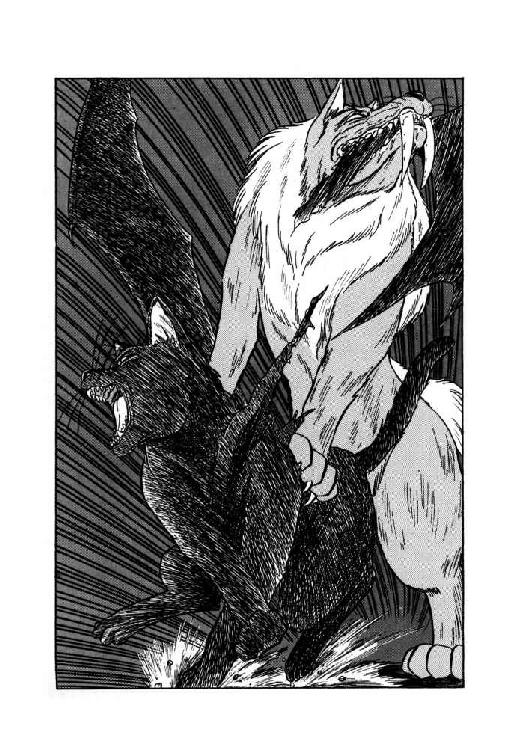

| 魔獣戦士ルナ・ヴァルガー＜８＞南方 | |
| 秋津 透 | |
| (2015) | |
魔獣戦士ルナ・ヴァルガー
⑧南方
秋津 透
本作品の全部または一部を無断で複製、転載、配信、送信したり、ホームページ上に転載することを禁止します。また、本作品の内容を無断で改変、改ざん等を行うことも禁止します。
本作品購入時にご承諾いただいた規約により、有償・無償にかかわらず本作品を第三者に譲渡することはできません。
本作品を示すサムネイルなどのイメージ画像は、再ダウンロード時に予告なく変更される場合があります。
本作品は縦書きでレイアウトされています。
また、ご覧になるリーディングシステムにより、表示の差が認められることがあります。
目 次
口絵・本文イラスト あろ ひろし
登場人物
ルナ・ド・リムズベル リムズベル公国の第二公女。魔獣と合体中。
魔獣ヴァルガー 伝説の大魔獣。無敵の威力を誇る。
バト・ロビス ダンバス帝国の元部隊長。無謀戦士と通称される。
ミル・ユード 貿易商兼帝国青年貴族。ルナと親しい。
レイピア・ロナ ミル・ユードに忠誠を誓う女戦士
ロコ 有翼黒猫。ルナと親しい。
リル（リム・リリス） プロの色事師娘。実は獣人（縞兎）。
チャフ 性悪の蝙蝠猫。陸上海賊ドン・ドレスデンの配下。
テック・ハラディ リドルの街に住む、奇妙なナイフ使い。
ヴェーダ・ピリス リドルの街で『斧剣亭』を経営する豪傑女医。
４ＷＤ 海賊商人一族の大総裁。
ノワール・ダンバス ダンバス帝国の新皇帝。通称、黒竜帝。
ザシャム 伝説の大魔道士、と思われる老人。
第一章 商業都市リドル
１
「くぉーらぁっ！ そこを行く小娘っ！ お主、もしやルナ・ド・リムズベルではぬぁいくあーっ？」
不意にとんでもない胴間声で呼びたてられ、ルナはぎくりとして足を止めた。どうしてこんな場所にいるのか知らないが、この蛮声は無謀戦士バト・ロビスに間違いない。
「まいったなあ......」
ルナは、ほとんど意識せずに嘆息を洩らした。一瞬、聞こえない振りして逃げちゃおうかなとも思ったが、そんな事したら状況はよけい悪くなる。とにかく彼女は素早く振り返ると無謀戦士の傍により、小さいが鋭い口調でささやいた。
「ね、おっさん、頼むから、もうすこし小さい声でしゃべってくんない？ あたし、あんまり人目につきたくないんだけど」
「ふむ、やはりお主か。まさかとは思ったが、帝国の最大最強の敵がこんなところで何をやっておるのだ？」
ルナの顔をじろりと睨み、バト・ロビスは特に声をひそめもせずに訊ねる。
「もしや、皇帝陛下が崩御されたのを機に帝都ダンバスを破壊し、一気に戦争に決着をつけようというのではあるまいなっ？ そのような真似は、帝国の武人たるこのバト・ロビスが許さんっ！ お主とはさまざまの因縁もあるが、これとそれとは話が別だっ！ 帝都を破壊するというのなら、まず俺を斃してから進むがよいっ！ 手加減はお互いになしだっ、心してかかってくぉーいっ！」
「ちょっとちょっと、ちょっと待ってよ、おっさんっ」
今にも斧剣をぶっこぬきかねない勢いの無謀戦士を、ルナは慌てて止めた。
「あたしは別に、帝国潰そうって気はないわ。少なくとも、今のところはね。だいたい、もしそのつもりだったら最初から魔獣態で南下してるわよ」
「ふむ」
あまり納得したようには見えない表情で、バト・ロビスはルナを見やる。
「それならば、なぜお主がこんな南方におるのだ？ 物見遊山だなどとほざいたら、俺は怒るぞっ」
「うん、実はリルが妙な連中に誘拐されちゃってね。追っかけてるうちに、南方の地まで来ちゃったのよ」
そう言って、ルナは小さく肩をすくめた。するとバト・ロビスよりも先に、彼の背後から驚いたような声が上がる。
「リム・リリスが誘拐されたのですか？ いったい、誰の仕業なのでしょうか？ まさか獣人族の誰かが......」
「いえ、獣人族の仕業じゃないわ。彼女をさらったのは影を走る者といわれる連中なの。そいつらが、リルを帝都ダンバスに引っ張ってっちゃったらしいのよね。まあ、話せば長くなるけど」
無謀戦士の背後から顔を出した獣人族の元巫女リム・リオネルに、ルナはやや意図的に軽い口調で答えた。
「とにかくあたしは彼女を無事に連れて帰ればいいんで、あまり騒ぎは起こしたくないのよ。もちろん、振りかかる火の粉は払うけどね」
「それはそうだろう。振りかかる火の粉は払うのが、戦士としての最低限の心得だ」
バト・ロビスがおもしろくもなさそうな表情でうなずくと、再びルナをじろりと見据える。
「しかしお主が、騒ぎを起こさずに帝都に入り込めるとは思えんな。たとえその気はないにしても、結果として大破壊を引き起こす事になるかもしれん。これはやはり、帝国の武人としては放ってはおけんぞ」
「放っておけなければ、どうするのよ？」
これはやっぱりただじゃすまないかな、と内心舌打ちしながら彼女は訊ね返した。リオネルと、彼女の更に背後に控えるリム・ガーグ、そしてルナの足元の烏猫が、一斉にはっと息をのむ。だが、彼らの緊張などまるで意にも介さず、無謀戦士は無雑作な口調で言い放った。
「うむ。お主ができるだけ騒ぎを起こさずに済むように、俺が取り計らってやろう。こう見えても俺は、南方ではちょっと顔が利くからな。帝都に入れてやれるかどうかは保証できんが、近くまでは連れて行ってやる」
「えーっ!? ほ、本当にーっ!?」
ルナは思わず、目を丸くする。まさか、人もあろうにバト・ロビスのおっさんがこんなことを言いだすなんて、まったく考えても見なかった。しかしこれは、文字通り千載一遇のチャンスに違いない。何しろ彼女も同行の烏猫も、南方はまったくの不案内である。今だって、とにかく上陸地点から適当に南西に進んでいるだけで、どの街道をどう行くと帝都ダンバスにたどり着くのかまるっきり知っちゃいないのだ。まして、これから先は関所だってあるだろうし、南方人の案内があればこんなに有り難い事はない。
「だけど、あの、いいの？ あたし、その、一応は帝国の敵なんだし、それをあの、帝都の近くまで連れてっちゃったりしたら、そっちの立場、大丈夫なのかしら？」
「お主が、自分で言っている通りの目的で動いているなら、騒ぎを起こさずに済むようにするのが帝国のためだ」
おそるおそる訊ねるルナに、無謀戦士は相変わらずおもしろくもなさそうな表情で答えた。
「これまでのつき合いで、お主が少なくとも信義を重んじる性格である事はわかっておるからな。しかし、万が一にもお主がこのバト・ロビスをたばかったというのであれば、その時は絶対に容赦はせん。たとえ地の果てまででも追いつめて、相応の報復を食らわせてくれる。魔獣戦士であろうとも、ロビスの激怒、軽く見るような真似はするなよっ」
「はいはい、そこらへんは充分承知しておりますって」
くわっと目をむいて睨み据える無謀戦士に向かって、ルナは軽く肩をすくめる。
「間違っても、おっさんをおちょくるよーな事はいたしません」
「ならばよろしい」
うむ、と大きくうなずくと、バト・ロビスはずかずかと街道脇の草原へ入っていった。
「そろそろ正午だ。昼食を食いながら、兎娘の遊女がさらわれた顚末を聞くとしよう。おい、料理長！」
「はーいっ！ お呼びとあらば即参上あるよ、ボンジュール！」
たちまちバト・ロビスの背後から、奇声とともに謎の東方大陸人料理長が出現する。そーいえばこーゆー奇人もいたんだっけ、とルナは軽く額を抑えて呟いた。
２
「俺はダンバス帝国軍部隊長にして、ロビス谷の領主バト・ロビス！ 北方にて本軍とはぐれ単独行動をとっておったが、皇帝陛下崩御の噂を聞き、帝都にまかり越す途中であるっ！ 同行の者は、北方における我が配下、身元は俺が保証するっ！ 通るぞっ！」
ほとんど有無をいわせぬ調子でどなると、無謀戦士は関所を警備する帝国兵たちの間をのっしのっしと押し進んでいく。兵士たちもそれをとどめようとするどころか、恭しいといっていいぐらいの態度で無謀戦士御一行様を通してしまう。やっぱりこれって気合の差かしらね、とルナは小さく首をすくめ、万が一にもしっぽが見えないように注意しながら、兵士たちの間を足早に通り抜ける。
しかし実際、おっさんが同行してくれて助かったわ、とルナは言葉には出さずに呟いた。彼女が洋上でうろうろしているうちに、帝国は予想以上に早くログリアン壊滅の事実を知ってしまったらしく、南方の地には結構厳重な警戒網がしかれている。もしもルナと烏猫の二人だけだったら、ここまでくるのに一度や二度の騒動では済まなかっただろう。しかしまさか、帝国軍の強者としてその名も高いバト・ロビスが、事もあろうに敵の大将であるルナを伴っているとは当然ながら誰も思わないらしい。ここまでほとんどトラブルらしいトラブルもなく、彼らは無事に帝都ダンバスへと進んでいる。
と、その時一人の若い帝国兵が、無謀戦士に向かって声をかけてきた。
「バト・ロビス部隊長殿。北方の戦況は、正確なところどうなのでしょうか。南方では妙な噂ばかりが流れて、正しい情勢が少しもわからないのですが」
「北方の戦況は、軍事機密に属する事だ。帝都で皇帝陛下に申し上げるまでは、みだりに口にするわけにはいかん」
例によって愛想のかけらもない声で答えると、バト・ロビスはそのままのっしのっしと先へ進む。声をかけてきた兵士は、慌てて追いすがって質問を続ける。
「それでは、噂が真実かどうかだけでもお答え下さい。北方には怖るべき大怪獣がいて、遠征軍はほとんど壊滅させられたというのですが」
「壊滅などはしておらん。少なくとも、この俺は健在だ」
ますます無愛想な口調で、それでも一応バト・ロビスは返事をした。
「俺が健在である限り、壊滅などという言葉は使わせん。せいぜい、一時的退却ぐらいにしておいてもらおうか」
「それはそうでしょうが、しかし部隊長殿、これはどういう言葉を使うかというような問題ではないと思いますが」
さすがに持てあまし気味の表情になりながらも、若い兵士はしつこく質問を続ける。
「兵士の間では大怪獣の噂がかなり広く囁かれておりまして、一部の者は深刻な不安を抱いております。ここは、士気の維持のためにもぜひ部隊長殿に正確な戦況を教えていただきたいのですが」
「貴様は、いつから将軍になった」
言いすがる兵士を、無謀戦士はじろりと睨む。その視線の険悪さに、彼は思わず言葉を吞み込んだ。やや蒼ざめた相手に、バト・ロビスは無雑作に言い放つ。
「士気の維持などという問題は、指揮官の考える事だ。つまらぬ詮索は、やめておけ。もし怪獣が実在して戦況が不利であったとしても、お主にどうこうできるような問題ではない。それとも今から、逃げ出す用意でもするつもりか」
「いえ、その、そういうつもりでは......」
ごちょこちょ言ってる兵士には目もくれず、無謀戦士はそのまま関所を通り抜けてゆく。その背後に続いたルナが、小声で訊ねた。
「おっさん、結構きつい事おっしゃるのねー。あの兵士、かなり不安がってたわよ」
「噂に怯えるなどという態度は、帝国の兵士としてふさわしいものとは言えんな」
無謀戦士は、むっつりとした表情で答える。
「あれはおそらく、平原都市からの徴用兵だろう。野っぱら育ちの連中はつまらぬ詮索ばかりに熱心で、どうにも戦闘の役に立たん。兵士というものは、命令を守って勇敢に戦えばそれで良い。違うか？」
「うーん、確かに無謀戦士らしい御意見だけどねー」
ルナは苦笑混じりに小さく肩をすくめた。この人物と同行していると、どうもこういう動作が多くなる。
「まあ、帝国の兵士としてどーゆー態度がふさわしいのか、最大の敵がどうのこうのいうのも妙な話だしね。論評は控えとくわ。だけどおっさん、平原都市育ちの人材が役に立たないんなら、どういう場所で育った人物が兵士に向いてるっていうの？」
「決まっているではないか。山岳地域の男だ」
これぞ自明の理と言わんばかりの口調で、無謀戦士はずばりと言いきった。
「我がロビス谷も、帝都ダンバスも、ともに険しい山岳地域の中にある。山岳こそが、強い戦士を生む風土なのだ。野っぱらに城壁などを築いてぬくぬくと籠っているような奴らの中からは、ろくな戦士は生まれんっ！ そういえば、お主の国も山岳地域だったな。ならば、俺の言う事がよっくわかるだろう」
「バト様、獣人谷も深い山の中にあります」
ルナが答えるより先に、リオネルが誇らしげに口を入れる。
「獣人族の戦士が優秀なのは、山の中でくらしている事も理由の一つなのですね」
「うむ。そうかもしれんな」
むっつりとした表情に戻って、バト・ロビスがうなずいた。でもそうすると、獣人族の人たちは獣人谷から出ちゃったんだから、おかしなことになりゃしないかしら、とルナは思ったがとりあえず口には出さないでおく。
それにしても、同じ帝国人とは言っても、山岳の民と平原の人々ではずいぶん気性が違うらしい。ミル・ユードはどっちなのかなあ、と彼女は小さく首をかしげた。思慮深いところは平原出身みたいだけど、典型的山岳民のバト・ロビスの甥なんだし、結構あれで無謀なとこもあるしね。
「さて、もう一息でリドルの都市だ。リドルを抜ければ、あとは帝都ダンバスまで二日旅程。もはや目と鼻の先だな」
バト・ロビスが、呟くというよりは唸るような感じの声を出す。
「しかし、リドルと帝都の間にはタラスコンの大関門がある。あれは、並の関所ではないからな。俺一人ならとにかく、同行の者まで一声かけて通してしまうわけにはいかん。少なくとも小娘、お主は無理だ」
「まあ、そうでしょうね」
無謀戦士が無理だというなら、これは本当に無理に違いない。それに今の状態では、無理を押して潜り込んだところで大した事はできないだろう。ルナは腕を組み、軽く眉を寄せてうなずいた。
「わかったわ。あたしも目的地に入る前に、もう少し情報集めときたいし。リドルっていったっけ、帝都の手前の都市で少し腰をすえる事にしましょう」
敵の本拠に乗り込んだら、帝国軍と影を走る者、それに闇の魔獣まで総出で迎撃の用意して待ってましたなんて事になったら、いくら魔獣戦士でもさすがにやばい。敵陣の偵察もせずに突撃かけるほどあたしは無謀じゃないもんね、と彼女は声には出さずに呟く。するとバト・ロビスが、ごくわずかではあるが意外そうに眉を動かした。
「なるほど。どうやら騒動を起こしたくないというお主の言い分、本心からのものと見える。もしも強行突破して帝都に入ると主張するのであれば、まず俺と戦ってからにせい、と言うつもりだったが」
「ここまで来て、おっさんを欺く気はないわよ。リムズベルの公女は、信義を重んじますからね」
澄ました表情で、ルナが答える。その顔を横目で見て、無謀戦士は小さく首を振った。
「戦士としては、お主、他人を信用しすぎる傾向があるな。それでは長生きできぬと言いたいところだが、まあ、お主の場合は特別なのかもしれん」
そう言って、バト・ロビスはかすかに苦笑じみた顔になる。
「よかろう、リドルでのとっておきの根城を教えてやるとするか。あそこならお主でも目につく事はあるまいし、情報も勝手に集まってくる」
「へえ、そんな都合のいい場所があるの？」
目を丸くして訊ねるルナに向かって、無謀戦士は大きくうなずく。
「うむ。リドルのみならず、帝国全土でもあそこほどの根城は二つとなかろう。都市に入ったらすぐに案内してやるから、ついてくるがいい」
「はいはい」
おっさんにしちゃずいぶん大仰な表現してるけど、と彼女は小さく首をかしげた。一体その根城ってのは、どんな場所なんだろ。話半分にしても、ずいぶん凄そうな気がするけど。
しかし無謀戦士は、大仰な表現などまったくしていなかった。
３
「わーあ、リドルって都市はずいぶん住民が多いのねー」
城門を抜けて都市に入るが早いか、行き交う人々の数の多さにルナがごくごく素直に感嘆する。するとリオネルが、これまた驚愕をあらわにした表情でうなずいた。
「ほんとうに、街路が通行人で溢れかえっていますね。魔道都市だって、これほど人が出る事はまずありませんわ」
「こらこらお主ら、この程度の人出で驚いていてはならんぞ」
バト・ロビスが半分苦笑を混じえ、そしていささかではあるが得意げに、目を見張っている二人の北方娘に声をかける。
「今はむしろ、人通りが減っている刻限だ。朝、市が立つ頃ここらに来て見ろ。冗談ではなしに、人波をかき分けなくては前に進めん」
「ヘーえ」
この広い大通りが毎朝大混雑になるなんて、とルナはあきれ返って呟いた。それじゃあまるで、朝ごとに戦争してるようなもんじゃない。するとリオネルが、真面目な表情でバト・ロビスに訊ねた。
「いったいこの都市には、どのくらいの住民がいるのでしょうか？」
「さあ、俺もよくは知らんが二、三十万ぐらいは、いるだろう」
ごく無雑作に、無謀戦士が答える。
「リドルは南方でも、最大級の都市の一つだからな。もしかしたら、五十万程度の住民はいるかもしれん」
「ご......じゅうまん!?」
それって、桁が一つ違うんでないの、とルナは思わず絶句した。北方の都市の人口は、エリオンがおよそ十五万、ログリアンの十一都市を全部合わせても二十万そこそこぐらいだろう。アルタイオは住民の数としては十万にたらず、リムズベルやドルミエなんぞは比較にもなりゃしない。それに対していくら最大級とはいえ、帝国内の一都市に過ぎないリドルが五十万の住民を抱えると言われては、彼女でなくたって絶句しようというものだ。
「ほ......ほんとにそんなに、住民がいるの、この都市!?」
「よくは知らんと、言っておろうが」
相手の当惑に気がついているのかいないのか、無謀戦士は相変わらずの無雑作な口調で答える。
「実際のところ、ここの正確な人口などはリドル侯でも知りはせんだろうな。リドルというのは、そういう都市だ」
「なるほどねー......」
よくわからないけど何となく納得したような気分で、ルナは小さくうなずいた。とにかく南方の地というのは、北方とは比較にならないほど混沌として統御されていないが、その分活気に満ちてスケールがでかく、あらゆるものに勢いがあるという事らしい。なるほど、できればこんな連中とは喧嘩したくないわね、と周囲の雑踏を見回しながら彼女は軽く溜め息をついた。正面からぶつかって消耗戦になったら、絶対北方に勝ち目無いもの。
「さて、とりあえずお主を根城に連れてゆくとしようか」
野太い声で言うと、バト・ロビスは大通りから狭い路地へと入っていった。路地の中にはかなり柄の悪そうな連中がたむろしていたが、さすがに無謀戦士にちょっかい出すほど無謀な奴はいない。ずんずんずんと裏道を抜けてゆく巨漢の後を、ルナたちはやや小走りになってついてゆく。と、いくつかの角を曲がったところで不意にバト・ロビスが立ち止まり、ルナは危うくそのだだっ広い背中につき当たりそうになった。
「わっ！ ど、どしたのよっ？」
「ここだ」
無謀戦士が、例によって無雑作な態度であごをしゃくる。ルナは一歩横に動いて、巨漢の示すほうに目を向けた。そこには間口の広い大きな二階屋が建っており、屋内からは大勢の人がにぎやかに騒いでいる気配が伝わってくる。まだ日も高いのに景気のいい事ね、と思いながら彼女は訊ねた。
「ここは酒場？ それとも遊女宿かしら？」
「いや、病院だ」
二階屋のほうにのしのしと歩き出しながら、無謀戦士が答える。ルナの紺色の瞳が、一瞬点になった。
「こ、これが、病院？ 宴会場じゃないの？」
「うむ、宴会場だ」
振り返ったバト・ロビスが、真面目な表情でうなずく。
「四の五の言わずに、さっさと来い。屋内に入れば、わかる事だ」
「はあ......」
ルナはやっぱり呆然としているリオネルを見やり、足元の烏猫を見やり、何考えてんだかよくわからない大男を見やって、そして軽く首を振って無謀戦士に続いた。もちろん一同は彼女の後に従って、病院だか宴会場だかよくわからない二階屋に入っていく。
「だけどやっぱりこれって、どっからどうみても酒場じゃない」
屋内に入ったルナは、周囲を見回して呟いた。かなり広いフロアにはいくつものテーブルが並び、それぞれに数人の客がついてジョッキを傾けている。黙ってぐいぐい吞んでいる大男、声高にしゃべっている中年の客、ジョッキには手をつけずに何やら一心に作業をしている若者など、態度はさまざまだがとにかく比較的ありふれた酒場の風景には違いない。少なくとも病院って雰囲気じゃないわよね、と彼女は小さく肩をすくめた。
「ここの元締めは、俺の古い知り合いだ。紹介してやるから、ついて来い」
いささか一方的な口調で告げると、無謀戦士は客をかき分けるようにしてフロアを横切る。そして正面にあるカウンターに歩み寄ると、ジョッキを拭いている男にぶっきらぼうに問いかけた。
「おやじ、ドクターはおるか？」
「二階にいますよ」
男は、相手と互角の愛想のない口調で答える。バト・ロビスはうなずくと、カウンターの脇にある幅の広い階段をさっさと上っていった。もう少し何か会話があるかなと思っていたルナたちは、ちょっと慌てて無謀戦士に続く。
酒場の二階は、宿屋かそれこそ遊女宿のような構造だった。フロアの上が吹き抜けになっており、その空間を三方向から囲むようにして回廊がついている。そしてその回廊の外側には、いくつもの扉が並んでいた。騒々しい階下に比べ、二階はしんと静まり返っている。
そこへ上がってきたバト・ロビスは、迷わず回廊の一方の突端に進むと、目の前の扉をどんどんどんと叩きまくり始めた。まったく毎度の事ながら傍若無人なんだから、とルナが小さく呟いたが、もちろんそんなことを気にするような無謀戦士ではない。そのうちノックだけでは足りないと見たか、とんでもない胴間声を張り上げる。
「うおーいっ！！！ ドクター、起きとるくあーっ！ それとも例によって、酔いつぶれてひっくり返っておるのくあーっ！ 久方ぶりの客だぞーっ！ 起きろーっ！」
「こら、いつあたしが酔いつぶれてひっくり返ったって言うのよ。そーゆーつまんない冗談いってると、頭蓋骨かち割って脳みそほじくり出すわよ」
不機嫌そうなだみ声とともに、扉が軽くきしみながら廊下側に開いた。室内から顔を出したのは、眼鏡をかけて白いエプロンをつけた大柄な女性である。年齢は二十歳より若くはなさそうだが、ちょっとそれ以上の見当はつかない。はっきりとした容貌は一応美人の部類に入るだろうが、どちらかといえば大胆不敵な印象を与える。何となく、魔道都市のファラ・ミルドレッド評議長を連想させる女性ね、とルナは言葉には出さずに呟いた。と、バト・ロビスがぐわっと彼女に笑いかける。
「久しぶりだな、ドクター。相変わらず元気そうで、何よりだ」
「なあんだ。聞いたような声だと思ったら、ロビス谷の蛮人かあ。まあ、確かに久しぶりには違いないわね」
ドクターと呼ばれる女性は、ぽりぽりと頭をかきながら無謀戦士の髭面を見あげた。肩まで袖をまくり上げ、むき出しになっている両腕が男顔負けにたくましい。
「で、あたしんとこに何の用？ あんたが医者の世話になるはずはないし、なんか珍しい話でもあるのかな？」
「確かに珍しい話はあるが、まずはドクターに頼みたい事がある」
真顔に戻って、バト・ロビスが相手の顔を見据える。
「女戦士を一人、預かってほしいのだ。この娘は帝国の最大最強の敵なのだが、同時に俺にとって因縁浅からぬ相手でもある。どうか、できるだけの便宜をはかってやってもらいたいのだが」
「ほーお、そりゃまたおもしろい頼みね」
彼女はにやっと笑って、無謀戦士の背後をのぞき込む。視線があった瞬間、ほとんど反射的にルナがぺこりと頭を下げた。
「どうも、あの、えーと、ただいま御紹介にあずかりましたルナ・ド・リムズベルです」
「はじめまして。あたしはドクター・ヴェーダ・ピリス。一応、ここの元締めって事になってるわ」
そういってドクターは二、三歩後退して室内に戻ると、ひょいひょいと一同を手招きする。
「ま、廊下で立ち話も何だから、とにかく室内にお入りなさいな。でもって、もうちょっとゆっくり話を聞かせてよね」
どうやらこいつはかなり珍しい話が聞けそーね、と彼女は再びにやっと笑った。
４
「なーるほど。ってことはあんたが、巷で噂の北方の大怪獣の正体ってわけか。こりゃあ確かに、うかつに町中をうろつくわけにはいかんわねえ」
ドクター・ヴェーダ・ピリスはいかにも興味津々という表情で、眼鏡越しにルナをまじまじと見つめる。そして軽く首をかしげると、何のつもりか机の上に置かれた大型のフラスコをとり、その中に満たされた液体を通して再度相手をじーっと見据えた。さすがにいささかけげんそうな表情になって、ルナが訊ねる。
「あの、ドクター、いったい何をなさってるんですか？」
「え？ ああ、ああ、ああ、このフラスコね。いや、気にしないで、気にしないで。一種の診療器具みたいなもんよ」
はっはっはっ、とあっけらかんとした笑い声を上げると、彼女はフラスコに口をつけ、中の液体をぐいっと一気に吞みほした。どうやら、容器に満たされていたのは酒だったらしい。あっけにとられているルナに向かって、ドクターはほろ酔い加減の表情で笑いかけた。
「うん、気にいった。あんたみたいな珍しい女の子は、捜し回ったって見つかるもんじゃないもんね。あんたは好きなだけここにいていいし、少なくともここにいるうちは、あたしが責任もってかくまっといてあげる」
「うむ、感謝する」
当の本人より先に、バト・ロビスが軽く礼をする。こうなってしまっては、もはやこの女医さんに身柄を託すしかない。他に思案があるわけでもなし、ルナも無謀戦士に続いて頭を下げた。
「それじゃドクター、よろしくお願いします」
「ん、まあ、気楽にやってて。ここにはいろんな連中が来るから、聞き耳立ててりゃ自然に情報も集まるしね」
彼女が気楽な口調で言ったとたん、いきなり部屋の扉がどんどんどんと連打される。
「ドクター！ すんません、重傷者なんですっ！ 二階まで上げられねえんで、ちょいと出てもらえませんかっ！」
「しょーもないわねーっ。いま行くから、少し待ってなさいよっ」
言うが早いか、彼女は片手に例のフラスコを持ち、片手に重そうな道具箱をひっさげて立ち上がった。そして無雑作に扉を蹴り開けると、呼びに来た男とともにどかどかと廊下を走ってゆく。一瞬、ルナはぽかんとその背を見送ったが、すぐに立ち上がって彼女の後を追った。特に何かしようという考えがあったわけではなく、ごく単純な好奇心のなせるわざである。
廊下に出て見ると、階段の上がり口のところに血まみれの男が横たわっているのが見えた。そして、むしろルナが驚いた事には、酒場の客たちがほとんど怪我人に関心を示さないのである。確かに二階に女医がいるわけだから、負傷者などが運び込まれるのは珍しくないのかも知れないが、それでも普通はもう少し視線を向けるとか何とかするものだ。もしかするとここの客って、揃いも揃ってただ者じゃないのかも知れない、と彼女は小さく呟く。
と、ドクター・ヴェーダ・ピリスが足早に階段を駆け降りて行った。そして負傷者を見るより早く、カウンターの男に声をかける。
「マスター！ 黒芋焼酎！」
「へい」
冷静というよりほとんど無感情に近い雰囲気で、男が陶器でできた黒芋焼酎の瓶を出す。受け取った彼女は焼酎を負傷者の傷口にぶっかけ、それから残りをフラスコに注ぎ込む。階段を下りながらその様子を見やって、ルナは小首をかしげてバト・ロビスに訊ねた。
「あのフラスコにお酒を注ぐと、何か役に立つのかしら？ 彼女は、診療器具の一種だなんて言ってたけど」
「俺もよくは知らんが、何やら魔道の能力がある品物だそうだ。酒を注いでおくと、人間の体の内部を透視できるらしい」
さほど興味のなさそうな口調で、それでも一応うるさがりもせずに巨漢が答える。その間に女医は道具箱から出した針と糸を操って、手早く負傷者の傷口を縫い合わせてゆく、そして作業が終わると、彼女は黒芋焼酎の入ったフラスコを通して、縫合した傷口の周辺をじーっと見据えた。
「うん、どうやらきれいに済んだな。すぐに死ぬよーな事はないでしょう」
呟くと、ドクターは負傷者を連れて来た男に声をかける。
「はい、一丁あがりね。もしなんかあったら、また連れてらっしゃい、治療代はマスターに渡しておいてくれればいい......あ、ちょい待ち」
「へい、何でしょう？」
不審そうに振り返った男をフラスコ越しに見やって、彼女はごく普通の口調で告げた。
「あんた、臓腑が無茶苦茶に腐れてるわよ。いますぐ手術しないと、三日持たないわね」
「え、ええっ、なんですってっ!?」
当然ながら、男は仰天した声で叫ぶ。
「そ、そんな、あっしはこの通りぴんぴんして、どこもおかしな所はねえんですが......」
「信じないなら、別にいいけどね。何がなんでも手術してやんなきゃならないほどの、義理があるわけでもないし」
淡々としたというか、むしろどうでも良さそうな調子で言うと、女医はフラスコの中の黒芋焼酎をくいーっと一気に吞み干した。その無雑作な態度にかえって真実味を感じたらしく、男が切迫した口調で訊ねる。
「あの、手術して頂ければ、助かるんでしょうね？」
「そーねー、保証はできないけど、七三ってとこかな」
彼女は、身もふたもないほどあっけらかんとした声で答えた。
「もっとも、助かるほうが三だけど」
「そんなーっ！ お願いしますよっ、ドクター、何とかして下せえっ！」
悲鳴を上げる男を見やって、彼女はにやりと嬉しそうに笑う。
「ま、とにかく早いほうがいいからね、すぐに二階で手術しよう。うん、とにかく切るだけ切って見て、だめならだめでまた考えりゃいい」
「ドクター！」
半べそをかく不幸な患者を半ば引きずるようにして、ドクター・ヴェーダ・ピリスは意気揚々と二階に上がっていった。あっけにとられてその背中を見送るルナの後ろから、不意にしわがれた老人の笑い声がかかる。
「ほっほっほっほっほっほっほっほっ、どうかしたのかの？ たかがこの程度の事件で、驚くお主でもあるまいに。のう、魔獣公女ルナ・ド・リムズベルよ」
「えっ？」
紺色の瞳を丸くして、彼女は背後を振り返った。麦酒のジョッキを持った老人がすぐ近くのテーブルから、こちらに笑顔を向けている。ふさふさした白髭と長く白い眉、白髪を長く後ろにながし、いかにも好々爺然としたその姿にルナは一瞬首をかしげた。しかしこの何の変哲もなさそうな老人が、彼女の正体をいきなり言い当てた事は間違いない。ルナは丁寧な、だがやや鋭い口調で老人に訊ねた。
「おじいさん、どうしてあたしの名前を知ってるんです？」
「何を言っとるんじゃ。お主は、天下にかくれもない有名人ではないか。多少でも事態の見える者は皆、お主に注目しておるのじゃぞ」
悠然とした声で答えると、老人はにやりと笑ってつけ加える。
「たとえば、闇の魔獣などじゃが」
「ええええっ!? えっ!?」
とんでもない名前を耳にして、ルナは思わず老人の笑顔をまじまじと見据えた。だが彼女が何か言うより先に、老人に気がついたバト・ロビスがいきなり凄まじい大声を上げる。
「これは、何と老師様っ！ どうしてまた、このような場所にっ!?」
「おお、バト・ロビスか。あい変わらず息災そうで、何よりじゃのう」
小柄な老人は、にこにこと無謀戦士に笑いかけた。すると次の瞬間、巨漢の背後から謎の料理長が躍り出る。
「アイヤーッ！ こーれは我が老師、おー久しぶりでありませるのボンジュールッ！」
「おお、料理長もおるのか。お主も元気そうで、何より何より。ほっほっほっほっほっほっほっほっ」
楽しそうな笑い声を上げながら、老人はゆっくりとうなずく。どうやらこの老人は、バト・ロビスと謎の料理長の両方から、老師とあがめられているらしい。もはや驚愕を通り越し、いささか畏敬に近い表情になってルナが訊ねた。
「おじいさん、あなた、いったい、何者なんですか？」
「わしか？ わしは、見ての通りのじじいじゃよ」
そう言って、老人は人をくったような笑顔になる。
「呼びたければ、ザシャムと呼んで貰っても結構じゃがのう」
「す、するとあなたは、大ザシャム尊師！！！」
烏猫が、ぶっ魂消たような声で叫んだ。ルナも思わず老人の顔を、もう一度まじまじまじと見すえる。
「あなたが伝説の大魔道士、大ザシャムさんなんですか？」
「さてさて、わしが伝説の大魔道士と呼ばれておるかどうかは、わしの知った事では無いがのう。とにかく、わしはザシャムという名じゃよ」
澄ました顔で言うと、老人は楽しそうにほっほっほっほっほっほっほっほっと笑った。
５
「老師様が伝説の大魔道士かどうかは、俺は知らん」
あっけにとられた表情のルナを見やって、無謀戦士は重々しい口調で言い放った。
「しかしとにかく、老師様は老師様だ。現在、俺が戦士として生きていられるのは、老師様の教導のおかげに他ならぬ」
「わたしの場合もまったく同じあるよボンジュール！」
料理長も、真剣そのものの顔で大きくうなずく。
「わたしが真の料理道に目覚めたのは、まったく我が老師の教えによるものある。我が老師との出会いが無くば、わたしは未だに偽の料理人だった事間違い無しあるよ、ムッシュー。それを思えば、我が老師が大魔道士か否かなど、わたしにとっては枝葉末節どうでもよいの事あるね、ボンジュール！」
「ほっほっほっほっほっほっほっほっ。両人とも、嬉しい事を言ってくれるのう」
にこにこと笑うと、伝説の大魔道士を名乗る老人はうまそうに麦酒のジョッキを傾けた。
「しかし、もはや弟子は遥かに師をしのいでおるぞ。この世界で我が弟子と呼べる者は、お主ら二人とエリオンのテオドラ王女の三人のみじゃがのう。テオドラは魔獣に変身の呪文をかけて人間態にするという、いまだいかなる魔道士もやった事のない離れ業を成功させておるし、バト・ロビスはかの怖るべき死の魔獣と真っ正面からわたりあって生還してきおった。そして料理長に至っては、前代未聞の魔獣料理を見事完成させたではないか。これらは、魔道士、戦士、料理人のそれぞれの分野の金字塔とも言うべき偉業じゃ。それに比べれば、わしなどはただ長く生きとるだけのじじいに過ぎん。ほっほっほっほっほっほっほっほっ」
「この鈍骨に過分なお言葉、怖れ入ります」
非の打ちどころのない恭しい態度で、無謀戦士が深々と頭を下げる。
「しかしやはり、我らの所業すべてお見通しであられましたか。さすがは老師様。その目の広さ、耳の早さ、とても鈍骨などの及ぶところではございません」
「なーに、そんなに謙遜することはない」
そう言って老人は、ゆっくりと手にした杖を左右に振った。
「お主らの功績は、誰かが歴史から消んそんとしても絶対に無理なほど大きなものじゃ」
「は？」
無謀戦士の太い眉が、一瞬当惑したように動く。
「あの、老師様。いま何か、おっしゃられましたでしょうか......？」
「わーたしはわかったでありませりよ、ボンジュール！」
ここぞとばかりに料理長が、ぶいっと右手の指を二本突き出す。
「我が老師が杖を振るときには、必ず何かの洒落が発動されてるあるね、メルシー。いまの場合は『消そうとしても』と『謙遜』を掛けた、まことに高度な洒落と見たあるよ。ボンジュール！」
「ううむ、なるほどっ。俺のゆうもあ感覚は、まだまだ未熟であったということかっ」
膝をぱんと叩いて、無謀戦士が口惜しげに唸った。するとザシャム老人が、大きくゆっくりと首を振る。
「いやいや、いまの場合はむしろ見抜いた料理長をほめるべきじゃな。この洒落はきわめて難解、普通の者では何回聞いても理解できん水準にあるのじゃからのう。ほっほっほっほっほっほっほっほっ」
「おおっ！ 今の老師様の洒落は俺にもわかったぞっ！ 『難解』と『何回』を掛けておられたのだなっ！」
バト・ロビスが大声で叫び、同時に老人は莞爾と笑ってうなずいた。
「うむ。できたようじゃな、バト・ロビス。今後とも精進せいよ」
「あ、あのー、師弟で盛り上がってるところを恐縮なんですけど......」
やっと呆然とした状態から立ち直りかかったルナが、ちょっと怖る怖るといった感じで老人に訊ねかける。
「あなたは本当に、伝説の大魔道士、大ザシャムさんなんですか？ もしもそうならば、あたし、お願いしたいことがあるんですけど」
「願いというのは、魔獣との合体を解いてほしいという事かの？」
おそらく大ザシャムであろう老人は、やや真顔になって彼女を見やった。
「それは残念ながら、わしの手には余る。おそらくはテオドラがかけた変身の魔法が、魔道士にできる最大にしてかつ最善の手段じゃろう。なにしろ魔獣とは世界の根幹に関わる存在、自在に制御する事は誰にもできんのじゃ。むしろわしは、よくぞお主が自分の魔獣に吞まれもせず、暴走もさせずにおられるものよと感服しておるほどじゃよ」
「そ、そんなあ......」
さすがに衝撃を受けた表情で、ルナはへなへなと床に座り込んでしまった。
「それじゃ、あたしは死ぬまで元の人間には戻れないって事？」
「それは、まだわからん。今のところはできんというだけの事じゃ。とにかく、世界はいま凄まじい激動の時代を迎えておる。封印がこれほどまでに不意に破られ、魔獣が次々とよみがえるなどという状況は、わしとてまったく予想もしておらんかった」
ゆっくりと首を振ると、老人はしょげかえったルナをじーっと見据える。そのとたん彼女は突然はっと我に返り、慌てて床から立ち上がった。そして同時に、老人が穏やかな声で話しかける。
「魔獣公女ルナ・ド・リムズベルよ。お主を襲った運命が、過酷なものである事は承知しておる。しかし敢えて言えば、もしわしにお主と魔獣を分離する能力があったとしても、いまこの時それを使う事はしないじゃろう。さだめし酷な言いぐさと思うじゃろうが、どうか己の運命に立ち向かってそれを全うしてほしい。なぜならわしの見るところ、理性ある魔獣戦士たるお主こそが世界を魔獣王の呪いから解放する唯一の切り札なのじゃからのう」
「はあ......」
何だかよくわからないながらも、老人の切々とした口調についその気になり、ルナはこっくりとうなずいた。すると老人も、得たりとばかりに大きくうなずき返す。
「わかってくれたか。ところでわしは今二つほど洒落を言ったんじゃが、そちらのほうはわかったかの？」
「はあ？」
当然ながら、ルナはあっけにとられて絶句する。そこへ無謀戦士が、勢いこんだ調子で口をはさんだ。
「一つはわかり申したぞっ！ 『さだめし』と『運命』を掛けておられたのですなっ！」
「うむ、さすがじゃな。早くもこの水準を越えたか」
にっこり笑って、老人はもう一人の弟子に目を向ける。
「それでは料理長よ、いま一つの洒落はなんと見る！」
「はいーっ！ それは『封印』が『不意』に破られたという巧妙至極の洒落ありまするね、メルシー・ボー・クー。これぞわが老師のゆうもあ感覚の粋、芸術的ともいうべき洒落あるよ、ボンジュール！」
ぶいっと指を二本出して、料理長は高々と叫ぶ。まったくこの師弟って、どこまで本気でどこから冗談なのか全然わかんないのよね、とルナは内心ため息をついた。多分本人たちも、本気と冗談の区別なんかしていないんでしょうけど。
と、その時ザシャム老人が、彼女のほうに笑顔を向けた。そして、再び穏やかな声で語りかける。
「さてそれでは魔獣公女よ、お主にいささか忠告をしておこう。よいか、帝都ダンバスに乗り込むときには、必ず斬魔獣剣の剣士を同行するのじゃ。さもなくば、お主は確実に闇の魔獣に打ち倒されよう。獣人族の娘が気になるとは思うが、あれの幸運はまだまだ尽きはせんはず。むしろ、危機にあるのは斬魔獣剣の剣士じゃろうとわしは見ておる」
「斬魔獣剣の剣士って、ミル・ユード卿の事ですよね」
黄金色の目を丸くして、烏猫が呟く。続いてルナが頰をやや蒼白にして、鮮やかなまでに真剣な表情で訊ねた。
「あの方に、どのような危機が訪れるのでしょう？」
「そこまでは、わしにもわからん。ただ言える事は、この都市この場所から動くなという事じゃな。わしの予言能力によれば、このリドルという都市で彼は危機に見舞われ、そしてこの酒場でお主は彼を救う手がかりを得る」
幾分なりとも厳かな口調で告げると、老人はゆっくりと杖を振る。
「曖昧な予言で済まんとは思うが、本当にこれしかわからんのじゃ。信じて貰えるかな？ それとも、余計な事と思うかな？」
「いえ、信じます」
短く、しかしきっぱりとルナが答え、老人はほっとしたような笑顔になった。
「それは、何よりの事じゃ。それで、今の洒落はわかったかの？」
「『余計』と『予言』の引っかけでしょ」
それこそ余計な事じゃないと思いながら、彼女は小さく肩をすくめる。
「洒落というには、ちょっと苦しいんじゃないかって気がしますけど」
「そ、そうかの」
一瞬、老人はわずかに当惑した表情になった。だが、すぐに軽い笑いを浮かべてゆっくりと立ち上がる。
「ほっほっほっほっほっほっほっほっ。さて、わしはこれにて去る。また近いうちに、会う事になるであろうがのう」
「老師様！」
バト・ロビスと料理長が、恭しく片膝をつき頭を下げた。老人はうなずいて、手にした杖を小さく振る。
「それでは今度会うまで、皆が息災でいられるよう祈っておるぞ。どんな局面でも絶望することなく、全力で健闘しなくては先へ行けんとう事を忘れんようにのう。ほっほっほっほっほっほっほっほっ」
「あーあ。またでた」
ルナが苦笑混じりに肩をすくめると同時に、老人の姿はまるで煙のように酒場から消え失せていた。するとそのとたん、カウンターでジョッキを拭いていた主人がほとんど抑揚の無い声でぼそりと呟く。
「あのじじい、吞み逃げしやがったな」
６
「だけどあの老人、本当に大ザシャム尊師だったんでしょうかねえ？」
無謀戦士の一行がドクター・ヴェーダ・ピリスの病院兼酒場『斧剣亭』から去るが早いか、ロコがいささか疑わしそうな口調でルナに訊ねた。
「くだらない駄洒落は言うし、麦酒の勘定は踏み倒すし、あんまり大魔道士らしく無かったみたいですけど」
「さあね。あたしには何とも言えないな」
軽く肩をすくめ、ルナは苦笑混じりに答える。
「だけど大ザシャムさんじゃなくても、尋常人じゃないのは確かよ。何しろ無謀戦士のおっさんと、謎の料理長の老師様だものね」
「まあ、それはそうですけどね。でも大ザシャム尊師本人なら、ルナ様を魔獣から外せないはず無いと思うんだけどなあ。うーん」
どうにも納得できない様子で、烏猫は二、三度首を振った。
「で、これからどうするんです、ルナ様？ 予定通り、ここを根城にして情報を収集するんですか？」
「ええ、とりあえずはその予定よ」
ルナは、ごくごくあっさりとうなずく。ロコには判断できないでいるような返事を言ったけれど、実は彼女は、例の謎の老人が大魔道士本人である事をほぼ確信している。ただし、彼が本当に彼女を魔獣から分離する事ができないかは、これはまだわからない。何しろ本人が、もしその能力があっても今はやらないと明言しているのである。
「確かに今は死の魔獣との決着もついてないし、闇の魔獣も不気味だし、魔獣を外してやるって言われたって即座にはうなずけない状況なのよね」
言葉には出さずに、彼女は小さく呟いた。ならば、あの老人にそんな能力があるかどうかなんて考えたって意味が無い。それより今は、もっと先に心配しなくちゃならない事がある。誰よりも大切なあの人、あたしを魔獣と知ってて愛してくれてるミル・ユードに危機が迫ってるっていうんだから。
「彼はこの都市で危機に見舞われ、あたしはこの酒場で彼を助ける手がかりを得る、か。今のところは、この予言を真に受けとくしかないわね」
軽く肩をすくめ、ルナはカウンターの正面のテーブルについた。ここで魔獣聴力をごく低い水準で働かせれば、酒場の中で交わされている会話を洩れなく察知することができる。と、彼女が聞き耳を立てるが早いか、いきなり聞き捨てならない言葉が跳び込んできた。
「実際のところ、カルバドク侯家はもうだめだね。うん、はっきり言って長い事はないよ。これからは陸上の交易も、ドレスデンの人々が牛耳る事になるだろうと私は思うね。だいたいカルバドクは、あの跡取り息子がいかんよ。この大事な時期に北方に行ったまま、消息も分からないらしいじゃないか。どう考えてもダンバス帝国貴族としての自覚に欠けていると言わざるを得ないね、まったく」
なにいっ、と思わず小さく呟いて、ルナは声がしたほうを見やる。どうやら、店の奥のほうのテーブルで、数人の若者を相手に偉そーな調子で喋っている三十代後半ぐらいの男が、今の発言の主らしい。結構上等な長衣をまとい、眼鏡をかけた容貌には知的な要素もあるのだけれど、総合的に見るととても懇意になりたいような印象の人物じゃないわね、と彼女は軽く眉を寄せた。とにかく、口元に浮かべたあくの強そうな薄笑いと、尋常でない雰囲気をはらんだいやらしげな目つきは、どうにもいただけたもんじゃない。どんな仕事をしているのかちょっと判断がつかないが、少なくとも相当独断的な自信家である事は間違いないところだろう。と、その男の話を聞いていた若者の一人が、やや不審そうな口調で訊ねる。
「しかし先生。カルバドク卿は、確か一昨日リドルを通ったんじゃありませんか。それなら別に、消息不明という事はないと思いますが」
「何をつまらん事を言っているんだ、君は。私はそんな事を問題にしているのではなーい」
先生と言われた男は露骨に不機嫌な表情になって、口をはさんだ相手に反駁した。
「先代の皇帝陛下がなくなられて、もう何日になると思っているのかね。その間、ドレスデンの大総裁閣下はずっと帝都ダンバスに滞在しているのだぞ。一昨日頃にカルバドク卿がやって来ても、もはや手遅れ、遅すぎると言わずばなるまいよ」
「しかし、カルバドク卿はあくまで嫡子にすぎないわけですからね。侯爵家の当主であるカルバドク侯は、皇帝陛下がなくなってすぐに帝都に来ていますよ」
質問した若者も、案外しぶとく食い下がる。
「それを考えれば、カルバドク侯家が長い事ないと言うのは、いくらイン・ギック先生のお言葉とはいえ独断が過ぎやしませんかね。もし侯爵家の関係者が耳に入れたら、ちょっとまずいと思いますよ」
「だまれうるさい、もはやカルバドクがでかい面をする時代は終わったのだ。これからは君、ドレスデンだよ、ドレスデン。新時代の覇者は、間違いなく彼らだね」
いかにも独断的に言い放つと、イン・ギックは横に座っている若い娘に目を向けた。
「むろん、君もそう思うだろうね？ ユーキ・オ・カートくん」
「ええ、それはもちろん先生のおっしゃる通りですわん 」
」
彼女はほとんど何も考えていないような微笑を浮かべ、大きくこっくりとうなずく。うむうむと薄笑いを浮かべてうなずき返すと、先生は若者のほうに傲岸な表情を向けた。
「ほーら、見たまえ。やはりユーキくんも私に同意しているではないか。私の見解が絶対的に正しいという事が、これでわかるだろう、ソードくん」
「あのねえ、イン・ギック先生。ユーキさんは先生の助手じゃないですか」
いささかうんざりしたような口調で、それでもしつこくソード青年は反駁する。
「助手の人が同意したからって、先生の見解が正しいって証明にはならないんじゃないかと思いますけど」
「ええい、だまれうるさい。君は一人だし、私にはユーキ・オ・カートくんがついている。これは即ち二対一で、我々の勝利だ。で、ある以上、もはや屁理屈をこねるのではない！」
いささか頭に血が上ったのか、イン・ギックはそれこそ無茶苦茶な屁理屈を言いたてた。さすがに、やってられるかと言わんばかりの表情になって、青年がテーブルから立ち上がる。騒動になるかな、とルナは一瞬思ったが、ソードは少なくとも表面的には礼儀正しく先生に頭を下げた。
「それでは、所用がありますのでこれで失礼させていただきます」
「うむ」
不愉快さを隠そうともせず、イン・ギックがわずかにうなずく。青年の方も頭を上げるが早いか、足早にテーブルから離れて店から出ようとする。ルナはすかさず立ち上がり、ソード青年に歩み寄ってぽんと肩をたたいた。
「ね。ちょっといいかしら？」
「は？」
当惑した顔で、青年が振り返る。ルナはにこにこっと笑うと、小声で相手に囁きかけた。
「あたし、カルバドク卿ミル・ユードの友達でルナっていうの。今、あなたたちがあっちのテーブルでしてた話をちょっと小耳にはさんだんだけど、何だか彼に関係のあるような内容だったみたいじゃない？」
「いえ、別に大した事を話してたわけじゃないですけどね」
やや警戒しながらも、いかにもいまいましげな口調でソード青年が答える。
「まあ、イン・ギック先生の言う事ですから、あんまり真に受けないでやって下さい。まったく先生って人は、別にドレスデンの連中に義理があるわけでもないのに、すぐに他人の影響をうけて騒ぎ立てるんですから」
「ふーん、なるほどね」
ルナは軽くうなずきながら、相手を自分のテーブルに誘う。
「もし良かったら、ちょっと話を聞かせてくれない？ あたし、実はこの都市に着いたばっかりで、そこらへんの事情がよくわかんないのよ」
「ええ、まあ、話をするのは構いませんけど」
青年はイン・ギック先生一行のテーブルの方をちらりと見やり、それから目の前の女戦士の方に視線を戻した。
「ルナさんとおっしゃいましたね。カルバドク卿のお友達という事ですが、いったいどういう関係の方なんですか？」
「彼の仕事の関係で、知りあったの」
にこっと微笑を浮かべて、彼女は答える。するとソード青年は、納得したような表情になってうなずいた。
「なるほど、貿易関係のお知り合いなんですね」
「うん、まあね」
ちょっと相手が想像してるような関係とは違うかも知れないけど、と彼女は内心小さく苦笑する。でも、まるっきり噓ってわけじゃないもんね。
７
「先生の言い方はかなり大げさなんですがね。でもやはり、カルバドク侯爵家が不利な立場にあるのは確かなようです。私はユード一族とは遠縁に当たるので、正直なところ気が気じゃありませんよ」
ルナの正面に座ったソード青年は、そう言って軽く肩をすくめた。
「何しろ、侯爵閣下が腰を痛めて動けない身体になられてから、もう五年以上になりますからね。事実上、カルバドクの当主は嫡子のミル・ユード卿でしょう。それがなかなか姿を見せないんじゃ、むしろ味方の諸侯が動揺しますよ。何しろカルバドクは、ドレスデン一族に対抗している陸上交易勢力の旗がしらですからね」
「それは確かに、そうでしょうね」
わずかに眉を寄せて、ルナがうなずく。実際上あんまり役に立たなくても、旗がしらがいるといないで士気に大差が出るのは珍しい事ではない。
それにしても、彼のお父上が腰を痛めて動けない状態だったなんて、あたし、ちっとも知らなかったわ、とルナは内心ちょっと複雑な思いで呟いた。だいたいミル・ユードの家庭の内情について、彼女はほとんど何も聞いた事がない。
「ところで、ソードさんはユード一族と遠縁って言ったけど、やっぱり交易商人の仕事をしているの？」
「いえ、私は建築技術者なんです」
ふと気になって訊ねたルナに向かって、青年は笑って首を振る。
「まだ半分、見習いみたいな立場なんですけどね。現在は、ダンバス皇帝宮殿の増築工事に参加させて貰ってます」
「ふうん、皇帝宮殿の増築かあ」
大北征しながら宮殿造営するなんて、帝国め、ずいぶんな余裕じゃない、と彼女はもちろん言葉には出さずに呟いた。
「それってやっぱり、国家規模の大事業なんでしょうね」
「うーん、大事業は大事業なんですけどね。実際は、あんまり格好のいいもんじゃないんですよ」
ソード青年は、再び軽く肩をすくめる。
「なにしろ増築前の皇帝宮殿というのが、宮殿と称するのがおこがましいほどひどい建築物でしてね。規模も構造も、リドルやカルバドクなら中規模の商人の邸宅にもならないような代物だったんです。取り柄と言えば、単に山岳の頂上に建っているというだけで」
「山岳の頂上？」
目を丸くしたルナに、青年は苦笑をまじえて説明した。帝都ダンバスは元来鉱山都市で、湖沿いの山際に張り付くように住居が密集している。その状況下で、身分の高い者ほど日当たりの良い山頂近くに邸宅を建てるため、当然皇帝の宮殿は山岳の頂上に位置するわけだ。
「だから帝国は、凄まじいばかりに高低の差がある都市でしてね。足腰の弱い人は、とうてい住めたもんじゃないですよ」
「はーあ......」
そーゆー都市で身体を鍛えてるから、大北征なんて発想がでるんだろーなー、とルナは小さくため息をつく。その間にも、ソード青年は淡々とした口調で説明を続ける。
「そういうわけで帝国も巨大になったし、皇帝宮殿を何とか増築しようという事になったんですがね。何しろ敷地がきわめて窮屈なので、増築しようにもなかなか面倒なんです。結局地下に広げるしかないという結論になったんですが、古い鉱山都市ですから、迂闊に掘って行くと何が起こるかわからない。一つ間違えれば、山岳全体が崩れますからね。南方の建築家のほとんどが、しりごみしたのも当然でしょう。そこで、半ばやむを得ずイン・ギック先生の出番となったわけです。この人以外に、この工事のできる人材はいませんから」
「ヘーえ」
ちょっと意外そうな表情で、ルナはイン・ギック先生のテーブルの方をちらりと見やった。
「あのおっさん、そんなに優秀な人材なの？ あんまりそうは、見えないけどな」
「人格と才能は別物ですからね。確かに性格的にはいろいろと問題がありますが、イン・ギック先生は建築技術者としては天才です」
遠慮会釈のない相手の質問に対して、ソード青年はきっぱりと答える。でも、よく考えるとその返答って全然フォローになってないんじゃないかな、と彼は小さく苦笑した。しかし青年は、まるで構わず言葉を続ける。
「先生の設計した建築物は、一見不条理や矛盾に満ちているようですが、なぜか最終的にはつじつまがあってしまうんです。だから、建築を依頼してくる相手が無理難題を押しつけてくればくるほど、その本領が発揮されるわけですよ。あまりの不思議さに、魔道の力が働いているなどと言う人もいますけどね。まあ、いずれにしても皇帝宮殿建築という難工事には、うってつけの人材ではあるわけです」
「なるほどね」
一応は納得した表情でルナがうなずく。
「それで、今もその仕事は続いてんの？」
「ええ。何しろ難しい工事ですからね。作業が始まってもう一年半ぐらいになりますが、まだ全体の四分の一ぐらいしかでき上がっていません。今は先帝陛下がなくなられたために一時中断になっていますが、新しい皇帝陛下の許可が出れば、また帝都に戻って再開する事になるでしょう。まあ、大きな声じゃ言えませんけど、現在の我々は臨時有給休暇みたいな状態なんですよ」
そう言って、ソード青年はまた軽く肩をすくめた。
「実際、帝都ダンバスと言えば聞こえはいいけど、あの都市にはまともな娯楽施設はあんまり無いんです。とにかくむやみやたらに黒芋焼酎を吞んで、があがあと喚き散らして撲りあいをするのが帝都人の主な娯楽だそうですから、他所者にとってはたまったものじゃありません。だから作業中断を幸い、建築技術者は全員リドルに遊びに来ているわけです」
「なーるほど、それでみんなで酒場にくりだして来たってわけね」
くすっと笑ってルナがうなずく。建築家見習いの青年も、小さく苦笑を返す。
「まあ、そんなところですがね。ただ、イン・ギック先生はこの酒場で案内人に会ってどこかへ出かける予定のようですけど」
「案内人？」
きょとんとした表情になったルナに、ソード青年は少し声を低くして説明する。
「実は先生は、娯楽に関してちょっと妙な趣味があるんです。ほら、よくあるでしょう？ 女性をいじめて喜ぶとか、いじめられて喜ぶとか」
「あーあーあー、わかったわかったわかった」
苦笑混じりに、ルナはうなずいた。しばらく前の彼女だったら何が何だか見当もつかなかったろうが、職業遊女のリルなんかと付き合っているうちに、リムズベル公女殿下もだいぶ俗世間の風俗に詳しくはなってきている。もっともリルに言わせれば、あくまで耳年増の範囲を出ない程度だが。
「それで、イン・ギック先生はどっちの趣味なの？ やっぱりいじめて喜ぶ方？」
「おそらくそうだとは思うんですけどね。別に、確かめたわけでもないし。まあとにかく、今日ここで会う事になっている案内人は、尋常には足を踏み入れる事のできないそういった趣味の穴場に連れて行ってくれるんだそうです。さっきまでは先生、かなり上機嫌でその話をしてましたから」
そう言ってから、彼はやや不審げに首をかしげる。
「それがどうしていきなり、カルバドク侯爵家をけなし始めたのかな。もしかすると帝都で、海賊侯あたりから何か吹き込まれたかも知れない。とすると今日の案内人というのも、海賊商人の筋の人間かも知れないな」
「うん、妥当な推察ね」
ルナがうなずいた時、不意に彼女の背後からいささか舌たらずな、しかし妙に凄味のある声がかかった。
「兄さん、あんたちょいと口が軽すぎるぜい。かりにも先生にあたる人物の私生活を、そんなにぺらぺら喋っちゃいけねーよなあ」
「何だ、あんたは？」
ソード青年が、むっとした表情で相手を見あげる。ルナも急いで、声のかかった方を振り返った。いくら会話の最中であれ、彼女に気づかれずに背後を取るとは尋常人ではない。
「おりゃあ、今の会話に出て来た案内人だよ。ドレスデンの筋の人間かどうかは、あんたらの御想像にまかせるけどね」
ルナとソードの視線をうけた男は、面白くもなさそうな口調で答える。一見どうという事も無さそうな小柄な瘠せた若者なのだが、その眼光は鋭く冷たい。そしてその右手には、彼の眼光と同様に鋭く冷たい光を放つナイフが一本、ひらひらと舞っている。こりゃあやっぱり尋常人じゃないな、とルナは軽く唇を嚙んだ。
８
「おれの名は、テック・ハラディ、リドルの裏町の、しがない何でも屋さんだよ」
瘠せた若者は、ひょいひょいとナイフをもてあそびながら名乗った。
「こういうしがない商売をやってると、何より信用と誠実さが大事なわけでね。お客さんのためには、とにかく誠心誠意頑張っちゃうんだな、これが。そんでもって今日のおれのお客さんは、建築家のイン・ギック先生なんだ。その人の事を身内の者が悪く言ってると知った以上、こりゃあ放ってはおけないよなあ」
「放っておけないんなら、どうするつもりだ？」
ソード青年が、すっと立ち上がって静かに訊ねる。すると相手も、ごく平然とした口調で答えた。
「そりゃもう、口をふさいじゃうしか無いじゃない」
「危ない！！」
ルナが叫ぶより早く、テックの右手から無雑作にナイフが飛ぶ。まさかいきなり、と思っていたのだろう。ソードは思わず一瞬、呆然と立ちすくむ。その喉元に鋭い刃が突き立つか、と見えた瞬間、立ち上がったルナが空中のナイフをはっしとばかりにつかみ取った。魔獣戦士の反射神経あってこその離れ業である。
「ほーお。姐ちゃん、やるでないの」
感心したように呟くと、テックは新しいナイフをどこからかひょいと取り出した。その顔をルナはきっと睨み据える。
「いきなり何するのよっ！ あたって負傷でもしたら、どうするつもりっ！」
「いやー、こっちは最初からそのつもりで投げたんだけどねー」
右手でひょいひょいと武器をもてあそびながら、危険極まりないナイフ使いの若者は軽く苦笑を浮かべた。
「どーやらそっちのお兄さんを始末するには、先にあんたをやっつけなきゃならないみたいだね。こりゃあちょいと、難儀な事かもしれないなあ」
「あたしを倒そうと思ったら、ちょいと難儀じゃ済まないわよっ！」
鋭く言い放つと、彼女は長剣のに手をかける。豪勇ダス・ピリスの酔いすら醒ました気迫の籠った構えに、さすがのテック・ハラディも一瞬あちゃちゃというような感じの表情になった。
「うーん、確かにちょいと難儀じゃ済まないかも知れない」
小さく呟くと、彼は不意にぱっと両手を上げる。右手でもてあそんでいたナイフは、どこに収納したのか影も形もない。
「とりあえず、ちょっと中止ね」
油断無く剣のに手をかけたままではあるが、さすがにいささかけげんそうな表情になった相手に向かって、テックはどちらかといえばあっけらかんとした口調で告げた。
「できればあんたとは闘いたくないんだけど、事がお客さんの名誉の問題だからね。どこまで闘うかは、当人に訊いてみてからにする」
言うが早いかナイフ使いの若者は、奥のテーブルに向かって声をかける。
「すいませーん、あの、帝国からいらっしゃった建築家のイン・ギック先生、そちらの方においでですかー？ もしおいででしたら、ちょっとこっちまで御足労願いたいんですけどー」
「何だ、何だ、何事かね？ この私を天才大建築家イン・ギックと知ってのうえで、わざわざ足を運ばせるのかね？ 君、それは無礼だとは思わんのかね？」
たちまちかなり酔っ払ったイン・ギック先生が騒々しく喚きたてながら、奥のテーブルからせかせかとやって来た。その背後には例の、何も考えてない美人助手ユーキ・オ・カートが従っている。
「いやー、どーも御足労いただきまして誠に申し訳ありませんです、えへへ」
険悪な表情のイン・ギックに、テックはにやりと笑って軽く頭を下げた。
「わたくしは、例の筋から申し付けられました案内人、テック・ハラディでございます。どうかよろしく御贔屓のほどを」
「なるほど、君が例の案内人か。しかしどーして案内人たる君が、客である私にわざわざ足労をさせねばならんのかね？ これは君、君の方が私のテーブルに来て挨拶するのが筋というものだろうが。え、どーだ、違うかね？ 私の言う事が、間違っているとでも言うのかね？」
どうやらあんまり酒癖がよろしくないらしく、建築家は案内人に絡みまくる。しかし、テックはそんなものはどこ吹く風という表情で、落ち着き払って言葉を続けた。
「まあまあ、これにはまあいろいろと事情がありましてね。ところで先生、ちょっと伺いたいんですけどね。こちらのお兄さんは先生の身内の方ですかね？」
「ん？」
酔いでいささか朦朧としてはいるものの、相変わらず尋常でない雰囲気を宿したイン・ギックの両眼が、眼鏡越しにじろりとソード青年を見据える。と、彼のやや薄めの眉が、ぴくっと険悪な動きを示した。
「ややっ、君はソード・スティンガーくんではないかっ。所用があるなどといって私のテーブルから中座しておいて、こんなところで何をやっているのかねっ！ まさか君、この私をっ、ダンバス皇帝宮殿増築計画最高責任者にして天才大建築家、そしてしかも君の上司たるこの私をっ、愚弄しようというのではあるまいねっ！ えっ、どーなんだっ、どーなんだっ、どーなんだっ！！！」
「それは、先生の誤解です」
見習い建築家の青年は、やや蒼白になりながらも静かな口調で応じる。するとテックが、かなりわざとらしく首をかしげた。
「あれ、そうなのかなあ。おれが、聞くともなしに耳にしたあんたたちの会話からすると、何だかイン・ギック先生の事を無茶苦茶に言ってたみたいだったけどねえ」
「なーにーっ！！ そーれは許せーんっ！！」
ほとんど白目を剝いて、イン・ギックが喚きたてる。しかしソード青年は、軽く肩をすくめてむしろ淡々と答えた。
「その極道者が何を聞いたか知らないけど、私は自分の知っている先生に関する事実を、そのまま彼女に話しただけです。イン・ギック先生はいろいろと奇癖をお持ちだけれど、まぎれもない天才建築家であるとね」
「えーっ、それは詭弁だーっ。こじつけだよーっ」
ナイフ使いの若者が、それなりに真剣な口調で反駁する。
「あんたたち、どー聞いても天才より奇人のほーに重点おいて会話してたじゃないか。おれ、ちゃんと聞いてたんだぞーっ」
「それは否定しませんが、あくまで事実を話したまでの事ですから」
ほとんど開き直ったと言うべきか、ソード青年は落ち着いた口調で言い放つ。
「事実を明らかにされるのが許せんとおっしゃるなら、そういった事実を起こしてしまう御自分の行動を反省されるのが筋かと思いますが」
「ええい、だまれうるさい。なんでいまさら、私が君に説教されねばならんのだっ」
目一杯むかっ腹を立てた表情で、イン・ギックが喚いた。
「だいたい、言ってる事が事実であろうとなかろうと、君が女性と一緒に勝手に私の評価をしているというのが許し難いっ。はっきり言って、不遜であるっ！ そもそも、その女性はいったい何者だっ？ 女だてらに武装などして、まったく可愛くないではないかっ！ そういう生意気な女には淫虐の奴隷調教をたっぷりと施し、御主人様に対する奉仕の精神を植えつけてやらねばならーんっ！ そうだろう、ユーキ・オ・カートくんっ？」
「ええ。それはもちろん先生のおっしゃる通りですわん」
例によって何も考えてない笑顔で、彼女はこっくりとうなずく。建築家は大きくうなずき返すと、異様にぎらぎら光る酔眼でルナの方をぎろりと見やる。
「ではまず、服を脱いで床にひざまずけ。この私が自ら、奴隷の礼儀作法を教えてやろうというのだ。光栄に思うがいい」
「この大馬鹿者があっ！！！！」
叫ぶと同時に、ルナは大馬鹿淫虐男の頰を目にも留まらぬ平手打ちで張り飛ばす。ぱっしーんという景気のいい音が上がり、イン・ギックは勢い余ってくるくるくるっと三回ほど回転すると、そのままどてっと床に尻餅をついた。もっともこれでも彼女としては、大いに手加減しているのは言うまでもない。もしも彼女が全力で殴ったら、人間の頸骨などひとたまりもなくへし折れてしまう。
「なーにが淫虐の奴隷調教よっ！ なーにが御主人様に対する奉仕の精神よっ！ ふざけんじゃないわよ、このすかたん！！ あんたがそーゆー、意志も理性もないよーな女性がお好みなのは勝手だけどねっ！ こっちにまでそんな好みを押しつけられちゃ、迷惑以前に腹が立つわよっ！ 顔を洗って、出直しといでっ！！」
へたり込んだ建築家に、ルナは勢いよく啖呵を叩きつける。イン・ギックはしばし目を白黒させて尻餅をついていたが、やがて怒りの形相になってよろよろと立ち上がった。
「お、おのれきさま、この私をダンバス皇帝宮殿増築計画最高責任者にして......」
「天才大建築家のイン・ギックでしょ。知ってるわよ」
ルナはあっさりこんと、相手の台詞を先取りする。
「それがいったい、何だっていうのよ？」
「何だっていうのとは何だっ。本来おまえのように乱暴なばかりで可愛くない女は、ダンバス皇帝宮殿の人柱にして埋め殺してしまっても良いのだぞっ！ それを、格別の慈悲を持って私が自ら奴隷の礼儀作法を仕込み、可愛い女に調教してやろうと言ってやっているものを、張り倒すとは何事だっ！！ きさまには、感謝の心というものが無いのかっ！！」
ほぼ完全に逆上して、イン・ギックはルナに向かって喚きたてた。しかしもちろん、逆上した建築家ごときを怖れるようなルナじゃない。彼女は怒りに狂う相手を見据えると、鼻で嗤って言い返した。
「あたしを人柱にするですって？ ふーんだ、やれるもんならやって御覧なさいな」
「わ、嗤ったなっ。鼻で嗤いおったなっ。うううううう、何と生意気なっ、何と可愛くない女だっ！ もうこうなったら、意地でも淫虐してやるっ！ この手で奴隷調教して、ひいひい泣かしてやるっ！ それでも素直にならないようなら、冗談抜きで人柱だっ！ おいっ、案内人くんっ！ この生意気なじゃじゃ馬娘を、即刻取り押さえて緊縛してくれたまえっ！」
「あのねー、先生。そう簡単におっしゃいますけどねえ。この女戦士、はっきり言って異様に強いですぜ」
ナイフ使いの若者が、半ばうんざりしたような声を出す。
「どーせやることは同じなんだから、他の女見つくろってきた方が良かありませんかね？」
「だまれうるさいっ。登山家はそこに山があるから登ると言うが、私はそこに女がいるから淫虐するのだっ。手ごわい相手ほどなおさら燃えると言うのは、山も女も同じ事だっ」
逆上のあまりだろう、イン・ギックは完全に意味の不明な妄言を吐く。こりゃあかんわ、と小さく呟くと、テックはひょいひょいと両手にナイフを取り出し、ルナに向かって無雑作に構えた。
「これはちょっと、真剣に闘わざるを得ないかな......」
再び長剣のに手をかけ、ルナはわずかに眉を寄せる。相手の身のこなしは、裏町の極道者とは思えない鮮やかなものだ。間違っても魔獣変身するような事態にならなきゃいいけど、と彼女は言葉に出さずに呟く。もしも『斧剣亭』をぶっ潰してしまったら、冗談抜きでえらい事になる。
と、そのとき、呆れたようなだみ声が頭上から降ってきた。
「ちょっと、あんたたち何やってんのよ。いっくら階上に医者がいるからって、病院で刃傷沙汰はごめんだわよ」
「あ、いけね」
ばつが悪そうに呟くと、テックは素早く二本のナイフを収める。ルナも、ほっと吐息をついてから手を離した。イン・ギックだけが事態に気づかず、腹立たしげに喚く。
「どうした、何をやっているっ。さっさとその女を取り押さえんかっ」
「だーめだめ。その娘を取り押さえるには、帝国軍全部隊がかかったって足りないわね」
皮肉っぽい口調で言いながら、ドクター・ヴェーダ・ピリスがすたすたと階段を下りてくる。その背後に人間態のロコが従っているのに気づいて、ルナは小さく苦笑した。どうやら、彼が、事態がきな臭くなってきたのを見てとって、ドクターを呼んできてくれたらしい。
９
「テック、ここんとこ御無沙汰じゃない。元気でやってる？」
「ええ、どうやらおかげさまで」
ナイフ使いの若者は、愛想笑いと苦笑の中間ぐらいの表情になって、軽くぺこんと頭を下げた。それからドクターは、憤然としている建築家に目を向ける。
「あんた、見ない顔ね。名前は？」
「私はダンバス皇帝宮殿増築計画最高責任者を務める天才大建築家、イン・ギックだっ」
やり場のない怒りに身を震わせながらも、彼は一応素直に名乗りを上げた。
「あんたこそいったい何者だっ。頼みもしないのに、いきなり偉そーに登場しおってっ」
「あたしは『斧剣亭』の元締めだよ」
そう言って、彼女はふんっと鼻で嗤う。
「建築家だかなんだか知らないけど、あたしの事も知らずに『斧剣亭』で酒を吞むとはいい度胸だわ。しかも、あたしの大事な客人に喧嘩をふっかけるとはね。もしも五体満足でこの酒場を出ようっていうんなら、さっさと勘定払って引き上げた方がいいと思うけど」
「お、おのれえっ......」
またまた鼻で嗤われて、イン・ギックはほとんど言葉も出ないほど逆上しまくる。そしてどうにか呼吸を整えると、案内人に向かって大声で喚いた。
「おいっ！！ 案内人くんっ！！」
「あ、だめです」
相手が声を出すとほとんど同時に、テックは素早く首を横に振る。
「言いたい事はわかりますけど、だめです。『斧剣亭』で元締めに逆らったら、冗談抜きで解体されちゃう。おれはまだ、お酒のおつまみになる気はありませんから」
「うう、うーむ......」
頼みの案内人から真顔でとんでもない警告を受け、さすがのイン・ギック先生も顔面からすーっと血の気が引いた。顔が青くなったのは、彼だけではない。ソード青年とルナ、そして猫少年もいささか面妖な表情になる。平然としているのは、ドクターとユーキ・オ・カートの二人だけだ。その顔をぐるりと眺め回すと、イン・ギックはいきなり、無理に平静を装ったとしか思えない声を出す。
「ユーキくん。もうそろそろこの店は潮時だと思うのだが、どうだろうね？」
「ええ、それはもちろん先生のおっしゃる通りですわん」
またまた例によって、彼女はにこりと笑ってうなずいた。本当にこの女性人間なのかな、とルナは思わずわずかに眉を寄せる。東方大陸の魔道都市では、人間とほとんど見分けのつかない生人形が造られているという噂を聞いた事があるけれど......。
「そうだな。それでは奥のテーブルの連中に、引き上げるよう伝えるとしよう。案内人くん、勘定の方はとりあえず頼む。後でまとめて清算するからね」
いささか不自然な早口ではあったが、イン・ギック先生はとりあえずそう言って奥のテーブルに戻っていった。もちろん、美人助手も彼の背後に続く。残った案内人は渋い表情でカウンターに向かい、全員の勘定を支払う。その間にルナは、小声でドクターに訊ねた。
「あの、ドクター。今、あの彼が言ったあれって、本当なんですか？」
「あの彼が言ったあれ？ ああ、解体しておつまみがどうのって、あれね」
ドクターは、くくっと笑って小さく首を振る。
「決まってるじゃない。はったりよ、はったり。テックは昔っから、ああいう趣味の悪い冗談を真顔で言う悪癖があるんだから」
「ああ、そうですか」
ルナはほっとした表情でうなずいた。するとドクターは、澄ました顔で言葉を続ける。
「だいたい、人間解体するなんて、そう頻繁にある事じゃないもの。そんな肉を頼ってたら、たちまちおつまみが品切れになっちゃうじゃない」
うへっ、とルナは首をすくめた。どーもここらへんの趣味の悪い冗談には、正直言ってついていけない。と、そこへソード青年が声をかけてきた。
「それじゃあ、私も失礼します。勘定は、そこのカウンターで払うんですか？」
「ああ、君の分はいい、いい。あたしがおごろう」
ドクターがいきなり、目一杯あっけらかんとした調子で宣言する。
「この娘に、いろいろ話をしてくれたそうじゃない。それで充分よ」
「いや、そういうわけにも......」
青年が申し訳なさそうに言った時、不意にルナがはっとしたような声をだした。
「それどころじゃないわよ、ソードさんっ。こんな喧嘩になっちゃった以上、あなた、イン・ギックの下で働くの、まずいんじゃないっ？ もし解雇になったり、いびり出されたりとかなったら、あたし、どうやってお詫びしたらいいのかしら......」
「いや、それはたぶん大丈夫だと思います」
そう言って、ソード青年は小さく笑う。
「イン・ギック先生はああ見えても、仕事に関してはしっかりした人物でね。自分と個人的に仲が悪いからと言って、部下を仕事から外したりはしません。今の仕事には、そんな余裕もありませんしね。実際、スタッフの中には先生と殴り合いをした事のある者もいるぐらいですから、あの程度では解雇にはならんでしょう」
「ふうん......」
ということは、あの変態淫虐男も仕事の上では結構立派な人物だって事か、とルナはちょっと納得の行かないような表情で首をかしげた。と、そこへテック・ハラディが、勘定を済ませてやってくる。
「それじゃ、ども、失礼しました。そのうちまた、ご挨拶に参上しますので、えへへ」
危険なナイフ使いは、にこにこと愛想よく笑いながらルナたちにぺこっと頭を下げた。これはドクターの御威光なんだろうけど、とルナは苦笑混じりに礼を返す。それにしてもやっぱり変な感じね。
「こだわらない、っていうことなのかなあ、これ」
言葉には出さずに呟いた時、彼女はふと、テーブルの上にナイフが一本載っているのに気がついた。これはたぶん、テックがソード青年に向かって投げたところを、彼女がつかみ取った物だろう。特に意識はしなかったが、自然にテーブルの上に置いたらしい。
「これ、忘れ物よ」
背を向けたテックに声をかけ、ルナはテーブルの上のナイフを取って差し出した。と、振り返った瞬間、ナイフ使いの若者は、凄まじい形相になって恐怖の絶叫を上げたのである。
「ぎゃあああああああああああああああああっ！！！」
「ど、どうしたの？」
完全にあっけにとられて、ルナはナイフを差し出したまま訊ねた。するとテックは両手で顔を覆って、呻くような声で苦しげに叫ぶ。
「お、おれに、刃物を、向けるんじゃなーいっ！」
「はあ？」
何だか訳が分からないながらも、彼女はナイフをテーブルに戻した。テックはうつむいて両手を膝に載せ、ぜいぜいぜいと喘いでいる。と、ドクターが苦笑混じりの声をかけた。
「なーんだ、あんたの先端恐怖症、まだ治ってなかったの」
「たぶんこれは、一生治らないような気がする」
苦しそうに答えるナイフ使いを見やって、ルナは紺色の目を丸くする。先端恐怖症のナイフ使いなんて、そんな冗談みたいな人物が本当に存在するとは思わなかった。
「でも考えてみれば今日一日だけで、酒場の元締めやってる豪傑の女医さんに、駄洒落の好きな伝説の大魔道士、淫虐趣味のある天才建築家、人間かどうかわかんないその美人助手と、普通だったら一生に一度会うか会わないかっていうような人達に、やたらめったら御面会してるわけだもんね。ここに先端恐怖症のナイフ使いが加わっても、それほど不自然じゃないような気も......やっぱりしないかな」
ほんっとにリドルっていうのは文字通り謎の都市ね、とルナは苦笑混じりに呟く。しかし彼女は気づいていないが、現在リドルに存在する最大の驚異は言うまでもなく伝説の魔獣ヴァルガー、つまり彼女自身に間違いないところだろう。
第二章 帝都ダンバス・策謀の渦
１
「陛下。ただいまカルバドク侯の嫡子、ミル・ユード卿が参内致しました」
「うむ」
侍従の報告を受け、ダンバス帝国の新皇帝、黒竜帝ことノワール・ダンバスはいかにも鷹揚にうなずく。
「すぐに、謁見の間に通すように。吟遊詩人よ、お主も退出には及ばぬ」
「は、どうも」
魔道具のサンダルで一日に五日旅程を歩く吟遊詩人サンドゥ・ルーンは、片膝をついたままにまっと笑った。もう少しかかるかと思ったが、意外に早くミル・ユード卿はリムズベルから舞い戻ってきたらしい。
「もしかすると、魔道士の魔力か何か借りたんと違うかな。まあ、いかにもありそうな状況やけど、時期が時期だけにばれたら大変やで」
言葉にはださなかったが、吟遊詩人はいかにも面白そうに呟いた。彼はカルバドク侯爵家とかなり密接に付き合ってはいるものの、別に忠誠を誓った家臣でもなんでもない。わざわざミル・ユードに不利な情報を喋り散らす気はないが、天下騒乱はいわば吟遊詩人の飯の種、事態が混乱するのは大歓迎である。
「なんせ、リムズベルの大怪獣がログリアンの港をぐちゃぐちゃに破壊してもうたわけやし、そんときにルナ姫さんがその場にいたいうんやからなあ。いくらカルバドクが交易商人や言うても、その寸前にリムズベルの客になっとったちゅうのはちと危いわ。それに魔道士まで絡んでるのがばれてみい、即座に内通扱いされても文句は言えへんで」
まあ、現在その情報を握っとるのは、カルバドクの関係者以外ではワシぐらいのもんやろけどな、とサンドゥは再びにまっと笑った。しかし、最近はドレスデン一族が陸上交易にも勢力を伸ばしつつある。あの地獄耳の悪徳海賊商人連中がこの事実を知ったら、それこそ最大限に利用するだろう。その時、あの御曹司たちがどう対処するか？
「カルバドク卿ミル・ユード、ただいま参上致しました」
謁見の間の扉が開かれ、長身の若者がゆっくりとした歩調で入ってきた。新皇帝ノワールは玉座から立ち上がり、相手に向かって片手を上げる。
「久しいな、カルバドク卿。元気そうで何よりだ」
「長い事の御無沙汰、誠に申し訳もございません。しかし相変わらず御壮健な御姿を拝見し、臣、心より安堵致しました」
片膝をつき、ミル・ユードは恭しく挨拶をした。
「先帝陛下の御逝去を悼み、同時に陛下の御即位をお慶び申し上げます。今後とも我がカルバドクは、盟約に従いダンバス帝国に忠誠を尽くす事を誓います」
「うむ、帝国はカルバドクの忠誠を嬉しく思うぞ」
身長はミル・ユードとほぼ同じだが、横幅では二回り以上勝る体軀を備えた若き新皇帝は、にっこりと笑って大きくうなずく。そして玉座に戻ると、彼はどっかりと腰を下ろした。
「ところでカルバドク卿、そちの父上は御元気かな？」
「はい。相変わらず立ち歩く事はできませんが、それ以外は御蔭をもちまして支障ないようでございます」
ミル・ユードは謹厳そのものの表情で答える。すると玉座の脇に控えた書記官が、小声で何やら皇帝に囁く。その囁きを耳にして、黒竜帝は再び大きくうなずいた。
「なるほど、そうか。現在カルバドク侯は、この帝都に来て居るのだったな。ならば確かに、さほどの支障はないのであろう。うむ、何よりの事だ」
「御意」
内心苦笑しながらも、ミル・ユードはあくまで大真面目な調子でうなずきかえす。実際、黒竜帝の健忘症というのは、彼自身を含めた当事者たちにとっては笑い事ではない。
雷鳴帝のただ一人の息子であり、堂々たる体格と立派な容貌に恵まれた、いわば生まれながらの王者とも言うべきノワール・ダンバスの唯一の弱点が、幼少期からの健忘症であった。誤解してはならない事だが、彼は知能が低いわけでも能力がないわけでもない。ただ、普通なら忘れそうもない事をぽこっと忘れてしまうのである。ひどい時には父皇帝の顔や自分の名前まで忘れてしまった事もあり、雷鳴帝はこの息子に皇帝位が継げるかどうか本気で心配したらしい。もしも先帝に他に息子があったら、彼はほぼ確実に皇太子になれなかったろう。
しかし結果としてノワールは皇太子となり、その重責を立派に果たした。ひいき目ではなしに、彼は健忘症という一点を除けばダンバスの皇帝として理想的な資質を備えている、とミル・ユードは判断している。何しろ彼は大軍を率いてダンバスの更に南方を転戦し、好戦的な事では帝国人をも上回る南方諸部族を、ほとんど犠牲を出す事なく制圧しているのだ。この武将としての能力は、尋常なものではない。
「むしろこの人物は、健忘症で良かったのかも知れない」
上機嫌ではっはっはっはっはっと笑う黒竜帝を見やって、ミル・ユードは言葉には出さずに呟いた。
「この体格、容貌、そして才能が揃っていて、しかも皇帝家の一人息子っていうんじゃ完全無欠すぎるからな。へたすりゃ、誰の言う事も聴き入れない凄まじい暴君になりかねない。しかし健忘症という弱点がある以上、彼は他人を無視するわけには行かないんだ。そんな事をしたら、自分でも何が何だかわからなくなる」
とは言うものの、やっぱり健忘症の皇帝と付き合うのは多少しんどい事態ではあるな、と彼は内心苦笑する。何しろつい先刻確認した事が、今はもうきれいさっぱり抜け落ちているかも知れないのだ。これほど説得しにくい相手も、そうそういるもんじゃない。しかしそれでも彼は、北方との戦争をやめるようにこの新皇帝陛下を説得しなくてはならないのだ。
「さて、どう話を切り出すか......」
焦ったら何もかもぶち壊しだぞ、とカルバドク卿は自分自身に言い聞かせる。と、その時黒竜帝が、側に控えていた吟遊詩人に声をかけた。
「ところで、お主はいったい誰であったかな？」
「はい。ワタクシは、吟遊詩人のサンドゥ・ルーンでございます」
どうやら慣れっこになっているらしく、吟遊詩人は驚きもせずに名乗る。すると黒竜帝は、うむうむと大きくうなずいた。
「そうであったか。それではこちらの、えーと、誰であったかな？」
「カルバドク卿ミル・ユードでございます」
書記官が、素早く小声で皇帝に囁く。おいおい、こりゃ少し健忘症の度が進んでるんじゃないか、とミル・ユードは内心肩をすくめた。しかし黒竜帝は再び鷹揚にうなずくと、まったく平然とした口調で言葉を続ける。
「うむ、ではカルバドク卿よ。貴公は承知かも知れぬが、現在北方の情勢は大変な事になっておる。どう大変かと言うと、えーと、何やら大変な物が出現したのだ。何であったかな？」
「リムズベルの大怪獣でございます」
またも小声で書記官が囁き、黒竜帝が大きくうなずく。
「そうそう。その大怪獣が、各地で余の軍隊を打ち破っておるのだ。これは、とても偶然の災難とは思えん。帝国に敵対する何者かが、大怪獣を操ってこの事態を引き起こしていると余は考えておる。その何者かとは、おそらくはえーと、何と申したかな、そうだ！」
珍しく自力で記憶をたぐり寄せたらしく、彼は掌をぱんっと拳で打った。
「リムズベルのルナ公女！ まずこの者に間違いあるまい。この名、貴公は聞いた事があるかな？」
「噂には、かねがね」
ミル・ユードは眉一つ動かさずに、即座に答える。
「しかし臣の聞いた噂では、ルナ公女は勇猛な武人との事。大怪獣を操るような魔術は、むしろ北王国のテオドラ王女の得意とする分野と聞いておりましたが」
「そのへんの状況は、余の知らぬところである」
黒竜帝は、そう言ってあっさり首を振った。
「しかし、大怪獣が何とか言う港に出現した時、その公女がその場に潜入していたと言う情報が入っておる。ええと、お主、吟遊詩人よ。その時の状況を詠った詩を、こちらの卿に聴かせてやってくれ」
「それではまあ、一つ吟じさせていただきましょか」
にまっと笑って、サンドゥ・ルーンが楽器を取りあげる。
「猛将ルナ・ド・リムズベル、ログリアン市に侵入してドレスデンの顧問官を斃す。そして間髪入れることなく、リムズベルの大怪獣、ログリアン港を壊滅させるの一席でございます」
２
「彼女もまたずいぶん、思いきった事をやってくれたもんだな」
謁見の間から戻ったミル・ユードは、苦笑混じりに首を振った。
「何か事情があっての行動とは思うけど、ログリアンに乗り込んで魔獣変身までするとはね。いやはや、さすがに冷や汗が出たよ」
「まったく、信じられないほどの軽率さですわっ」
レイピアが、心底腹立たしそうな声を出す。
「我が君が帝国と北方を和解させるつもりでいる事を、公女殿下は知っているのでしょう？ それなのに敢えてこんな暴挙に出るなんて、彼女ったらいったい何を考えているのかしらっ。もしも納得できるだけの理由無しにやったのなら、我が君が許しても私が許さないからっ」
「まあ、そういきりたつな。サンドゥの情報にしたって、間違いのない事実とは限らないからね」
ミル・ユードは、むしろ自分自身を納得させるような口調で呟いた。
「それより問題なのは、事実はどうあれ、北方から攻撃を受けていると新皇帝が考えている点だろうな。黒竜帝は健忘症かも知れないが、間違いもなくダンバス流の勇者だ。挑戦を受けて黙っているはずがない。おそらく多少なりとも事態が落ち着いたら、自分で北征の軍団を指揮して出陣するだろう」
「困った事態になりましたね」
腕を組んで考え込んだ我が君を見やって、女戦士も小さく溜め息をつく。まさか帝都に魔道士を連れてくるわけにはいかないから、ここにはギルバートもチャーランもチョーサーもいない。魔獣に関する秘密を共有しているのは、カルバドク侯爵家一行の中でもこの二人だけという事になる。
「とにかく、この状況でじたばたしても始まらないな」
しばらく考え込んだ後、ミル・ユードはやや苦っぽく呟いた。
「取りあえず、はやいとこ本拠地へ戻ろう。父上にこれ以上無理はさせられないし、黒竜帝を説得できる見込みがないんだから帝都に長居しても意味がない。それに、魔道士連中が馬鹿をやらないかどうかも心配だ」
「そうですね。陸上海賊の動きも気になりますし」
女戦士が、柳眉をわずかに寄せてうなずく。先日陸上海賊の船長に痛めつけられた彼女の肉体は、まだ充分には回復していない。ミル・ユードは最初彼女にカルバドクに残るように言ったのだが、それを半ば強引に押しきって帝都までついてきたのである。でも、やっぱり一緒に来て良かった、とレイピアは内心呟いた。現在、我が君が苦悩を打ち明けられる相手って、結局私しかいないもの。まして、公女殿下がどじを踏んで陥った窮地となれば、なおさらの事じゃない。
「よし、それじゃ父上に申し上げて、帝都から引き揚げるとしよう」
何のかんの言いつつ一時撤退って事だな、とミル・ユードは小さく苦笑して部屋を出た。まあ、成功の見込みが薄い時に無理押ししてもろくな事はない。一つ間違えると、本当の好機を逃がす羽目になるからだ。
一方、はやばやと帝都からの引き揚げを決めたカルバドク卿ミル・ユードとは対照的に、ダンバス皇帝宮殿の一角にでんと居座っている大物諸侯がいる。公式には海洋侯、一般的には海賊侯と呼ばれているその諸侯の名は、ワルス・ワルサー・ワルプルギス・ワーワルスキー・ドレスデン大総裁閣下、通称４ＷＤという。
「ふむ、カルバドクの嫡子は早々に帝都から去ると決めおったか」
報告を受けた海賊商人の総帥は、部下を退げるとごく冷静な調子で呟いた。
「もたもたと居残っておるようなら足元を払っても良いと思っていたが、さすがに馬鹿ではないようだな」
現在の情勢は、明らかにカルバドクに不利になっている。そして、不利な状況の中でじたばたするのは智恵ある者の行動ではない。その点では、状況の外に出ようとしているカルバドク卿の決断は正しい、と４ＷＤは明晰に論理を組み立てる。
しかし、いかに正しい決断を積み重ねても、それで勝利者になれるというものではない。カルバドクは結果としては、一歩退いた。彼らを打倒して陸上交易の権益を得ようとしているドレスデンとしては、ここは当然つけこむべきであろう。
「彼を消すなら、今かも知れん」
白い眉をわずかに寄せ、大総裁はぼそっと呟く。敵がいったん退いて逆襲に転じようとする瞬間こそ、決定的な痛打を与える好機だ。今ミル・ユードが死ねば、カルバドクは戦わずして彼の軍門に降るだろう。しかしそれも消し方次第、と４ＷＤは小さく唸る。下手な殺し方をすれば、逆に残された者たちを激昂させる事になりかねない。ましてや、失敗などしようものなら完全な逆効果になる。
「証拠を残さないのは当然だが、帝都で実行するのはいかにもまずいな」
ううむ、と彼はしばし考え込んだ。その思考には、抹殺すべき標的に対する憎悪の念は特にない。実際、４ＷＤはこれまで数知れぬ相手をさまざまな手段で葬り去ってきたが、それらの相手を個人的に憎んでいた事はほとんどないのである。障害となる者は感情抜きで冷静にかつ効果的に排除する、それが彼の方法なのだ。
むしろ彼の憎悪は、働きのない配下に向けられる。力量があればどんな人物であろうと重用するが、無能を晒した場合はその場で文字通り首が飛ぶ事も多い。この容赦ない実力主義があってこそ、彼は海賊一族の頂点に立つことができたのである。
と、その時、部屋の扉が軽く叩かれた。続いて、部下の取り次ぐ声が聞こえる。
「閣下、陸上艦隊司令ドン・ペドロ・カルロスから使者が参りました。閣下にお目にかかりたいと申しておりますが、いかが致しましょうか」
「会おう。通せ」
４ＷＤは即座に応じた。ドン・ペドロ・カルロス・ドレスデンの率いる陸上海賊艦隊は、陸上交易制覇のためのいわば最前線部隊である。カルバドクに手を出すか否かを決めるにあたって、この部隊からの情報は無視できない。
しかし、やがて部屋に入ってきた使者を見やって、４ＷＤは露骨に眉を寄せた。何と、入ってきたのは大きな黒猫だったのである。
「おまえが、ドン・ペドロ・カルロスの使者か」
もしも冗談だったら只では済まさんぞ、と思いながら、それでも一応４ＷＤは猫に声をかけてみた。すると、猫はかん高い女の声でけたたましく答える。
「はいっ、はいはいはいっ、はいっ。あたしはドン・ペドロ・カルロス・ドレスデン様の使い魔、蝙蝠猫のチャフと申しますっ。どうか、大総裁様には、今後ともお見知りおきのほどよろしくお願い申し上げ......」
「わかった。わかったから、黙れ」
４ＷＤは腹立たしげに、チャフの長口上をさえぎった。
「なるほど、魔道の生き物か。それで、用件というのはいったい何だ」
ドン・ペドロめ、妙な生物を飼っておるな、と４ＷＤは言葉には出さずに呟く。本来彼は、魔道嫌いで有名である。綿密な計算で事を進める彼の性格からすれば、魔道は一種の計算外要素であり、存在しないに越した事はないのだ。しかし現に存在しているものは仕方がない、と４ＷＤは目の前の蝙蝠猫を見据える。存在している以上、有能ならば使ってやろう。
「言っておくが、儂のモットーは『時は金なり』だ。おまえに与える会見時間は、この砂が落ちきるまで。それ以上は、聞かん」
威圧的な口調で告げると、４ＷＤは執務机の上の砂時計をひっくり返した。ガラスの容器の中には、きらきら光る砂金が入っている。
「さあ、用件を言え」
「はいっ、はいはいはいはいっ、はいっ！」
蝙蝠猫は、急いでくるっとでんぐりかえった。と、同時に、彼女は浅黒い肌の少女に姿を変える。
「実はあのあたし、ドン様からの書簡を預かっておりますっ。これは絶対に大総裁様以外のものには見せてはいけないとのご命令を受けておりましてっ、そのために出すのが少おっし遅くなりましたけど、とにかくこれをお渡しするのが......」
「無駄口はそのぐらいにして、さっさとその書簡とやらをよこせ」
４ＷＤは再び、相手の口上をさえぎった。本来彼は、きちんと計算されていない言葉の羅列をほとんど生理的に嫌っている。さすがに険悪な雰囲気を感じたらしく、猫少女は急いで御主人様の書簡を取り出して４ＷＤの執務机の上に置いた。
「はいっ、はいはいはいはいっ、はいっ。これがドン様からの書簡ですっ」
「見ればわかる」
不機嫌そのものの口調で答えると、４ＷＤは巻紙状になっている書簡を手に取った。そして白い眉を少し寄せて巻紙を開き、読み始める。と、少し読み進んだところで大総裁はわずかに顔を上げ、じろりと猫少女を見据えた。
「時間だ。下がれ」
「はあ？」
紅の瞳をまん丸く見開いて、チャフは執務机の向こうの老人を見返す。４ＷＤは、かなり苛立った表情で言葉を継いだ。
「聞こえないのか。砂は既に落ちきり、会見時間はこれまでだ。さっさと下がって、この部屋から出てゆけ」
「で、でもでもでもでもでもですよーっ。大総裁様は、今、あたしが持ってきた書簡を御覧になってる最中でしょう？ ここであたしが下がっちゃったら、今後の指示とか何とか、あの、いったい、いったい、いったいどうなさるおつもりなのですかーっ？ それがわからない事には、あたしにしたってすっごく不安ですよーっ。不安でーすっ、不安でーすっ、不安でーすったらーっ！！」
それなりに真摯な表情で、猫少女はぎゃいぎゃいぎゃいと言い立てる。そのとたん、とうとう４ＷＤが凄まじい怒声を発した。
「やかましいっ！！ 指示など追って伝えればよかろうがっ！ とにかく即刻、儂の目の前から消えて無くなれっ！」
「は、ははははははははははいーっ！！！」
仰天した彼女はでんぐりかえって蝙蝠猫の姿に戻り、そのままだだだだだだーっと部屋から走って逃げる。４ＷＤはいかにも不快そうに、その後ろ姿を見送った。
「まったく、何と癇に障る奴だ。猫に魔道に女におしゃべり、儂の嫌いなものを寄せ集めたような存在ではないかっ」
低い声で唸ると、４ＷＤは再びドン・ドレスデンの書簡に目を向ける。そして読み終わると同時に、彼は再度苦々しげに唸った。
「しかし、これはやはり、あの猫を使わざるを得んようだな」
この書簡によると、カルバドク卿はどうやら本格的に魔道士と組み始めたらしい。だとすると、あの若者に反撃の時間を与えるのは、今まで考えていたよりも更に危険だ。一つ間違えれば魔道の暗殺者か何かを放たれて、殺されるのは彼自身という事になりかねない。一刻も早く先手を打たなければならないが、そのためには何よりも指令を伝える速度が重要になる。そして現在４ＷＤの手元にいる伝令の誰よりも、蝙蝠猫の飛行速度は速い。
「あの猫を使えば、リドルでカルバドク卿暗殺の手筈を整えることができる。これぞまさしく好都合だ」
癇に障るの何のと感情的な事を言ってる場合ではない、と４ＷＤは小さく呟いた。我がモットーは『時は金なり』、一刻を争う時に躊躇するような愚行はせん。
ところが、彼が蝙蝠猫を呼ぶよう取り次ぎ役の部下に命じかかったとたん、部下の方が別な来客を取り次いできた。
「閣下、影人の使者が参っております。火急の用件だそうですが、いかが致しましょうか」
「少し待たせておけ」
４ＷＤは、苛立たしげに眉を寄せて答える。カルバドク卿暗殺以上に火急の用件など考えられないし、それに、影人どもは大した用件でもないのに勿体をつけて来る事が多い。まったくあの連中に比べれば、蝙蝠猫の方がまだ可愛げがある。
「先に、ドン・ペドロが送ってきた蝙蝠猫を呼べ。あれに、早急に命じねばならん仕事があるのだ」
そう言うと、４ＷＤはとんっと音をたてて砂時計をひっくり返した。
３
「火急の用件、だそうだな。いったい何事かね？」
蝙蝠猫にカルバドク卿暗殺の手筈をととのえるよう指示をだした４ＷＤは、彼女を送りだすとすぐに、影人の使者を部屋に招き入れた。影人は例によって黒い布で全身を包み、目だけを鋭く光らせている。まったく、見ただけで苛立ってくるような姿だわい、と４ＷＤはもちろん声には出さずに唸った。これでは何を考えているのか、察知のしようがないではないか。
「どうした、儂は忙しいのだ。早く用件を言って貰えないか」
「それではお伝え申す。リムズベル攻略のために大総裁閣下が北方に送られた艦隊五十隻、すべて海の藻屑と消えましたぞ」
低く押し殺した声で、影人はとんでもない情報をずばりと告げた。さしもの４ＷＤも、これには暫時完全に絶句する。
「な、なんと、そんな馬鹿な話が......」
「艦隊を襲いし者は、言うまでもなく巨竜神獣。そちらの言葉で申しますれば、リムズベルの大怪獣と言う事になるのでござろう。いずれにしても、いかな大艦隊といえど戦える相手ではござりませぬな」
影人は、むしろ淡々とした口調で言葉を継ぐ。その間に衝撃から立ち直った４ＷＤは、白い眉をぐいと寄せて訊ね返した。
「お主、その情報をどこから得た。いくら影を走る者とはいえ、我が艦隊の運命を儂より早く知ることができるとは思えんが」
配下の海賊船長たちの報告によれば、影人たちは無能とは言わないまでも、自称しているほどの能力はないらしい。いくらなんでもそんな連中に身内の情報を先取りされてしまうほど、海賊商人一族は甘くないわい、と４ＷＤは影人の目を睨み据える。すると相手は、ほとんど感情を持たないような声であっさりと答えた。
「我らが主、闇神公の神託でござる」
「神託だとっ？」
なにを、馬鹿げた事を、と４ＷＤが言いかかるより先に、影人が無雑作に言葉を続ける。
「信じないとあらば、それも結構でござる。いずれ、貴公の部下からも報告が届く事でござろう。ただし、それから動いてもいささか後手に回るのではないかと、我ら影を走る者一同、懸念致しておるのでござるが」
「ふうむ......」
御為ごかしの口をききおって、と４ＷＤは内心苦々しく呟く。しかしここまで言いきられてしまっては、さすがに無視するわけにも行かない。おそらくニコライ・アレクサンドルビッチ・ロマノフに率いさせた艦隊は本当に大怪獣の餌食になったな、と４ＷＤはほとんど直感的に確信した。腹立たしい事ではあるが、しかし、やられてしまった物は仕方がない。
「もしも今の情報が事実なら、確かにこれは由々しき事態だ。早速北征艦隊を、再度編成せねばならん」
うめくような声を出すと、４ＷＤは再びじろりと影人を睨んだ。
「しかしそれ以上に問題なのは、リムズベルの大怪獣をいかに始末するか、これにつきる。黒竜帝の言いぐさではないが、あの怪獣が帝国及び我が一族に意図的に害を為そうと動いているのは、もはや明白な事実だからな」
「いかにも、貴公の仰せの通りでござる」
一見恭しげな、しかしどことなく慇懃無礼な態度で影人が頭を下げる。
「我ら影を走る者にとりましても、かの巨竜神獣は不俱戴天の敵。お互いの利害は、完全に一致しているわけでござる」
「で、どうするつもりだ？」
明らかに苛立たしげな口調で、４ＷＤは影人に訊ねかけた。
「お主らの言う事を真に受ければ、あの怪獣は人間の手に負える存在ではないという事だったな。そしてお主ら影を走る者は、奴に対して切り札を持っているというわけだ。その言葉を聴き入れたからこそ、儂はお主らをリムズベルに派遣し、連れてきた捕虜も自由にさせておる。ところがお主らが何か為したとも見えんうちに、怪獣は我が艦隊を壊滅させてしまった。放置しておけば、今後もどのような被害が出るかわからん。いったいこの事態を、お主ら影を走る者はどうするつもりなのだ？」
「御心配召さるな、大総裁閣下」
４ＷＤの気のせいかも知れないが、影人はやや嘲笑がかった口調で答える。
「北征艦隊が巨竜神獣と遭遇してしまったのは誤算でござったが、それ以外の事態はすべて、我らの目算通りに動いてござる。おそらくは数日の内に、巨竜神獣は帝都に侵入して参りましょう」
「それがお主らの目算か」
対抗上というわけではないが、いささか皮肉っぽい調子になって４ＷＤが訊ね返す。
「海岸沿いの都市ならとにかく、帝都は知っての通り内陸に位置しておる。そこに向かって怪獣が上陸侵攻してくれば、たちまち沿道の全地域が大混乱となろう。しかし今のところ、そのような混乱はない。と、なれば、少なくとも数日の内に怪獣が帝都に至る事は無いな」
「そのような常識論、神獣に通じるとお思いでござるか」
今度ははっきりと、影人は頭布の下でくっくっくと嘲りの嗤いを発した。しかしすぐに、元の無表情な声に戻って言葉を続ける。
「信じる信じないは御自由でござるが、とにかく近いうちに巨竜神獣は帝都を襲う事間違いなしでござろう。それも予想外の奇襲を目論んで来るものと、我ら影を走る者一同、確信しておる次第でござる。でき得れば大総裁閣下も、早いうちに帝都からお立ち退き頂いた方が良いかと勘案しておりまするが、その儀、如何でござりましょうや？」
「まあ、考えておこう」
４ＷＤは、不機嫌そのものの口調で答えた。そして、そのままの調子で影人に訊ね返す。
「それにしてもお主ら、帝都に引き込みさえすれば、本当にリムズベルの大怪獣を斃せるのだろうな？」
「無論の事」
影人は、それこそ間髪を入れずに答えた。
「この帝都ダンバスは、我らが主、闇神公の坐します聖地でござる。この地にて戦わば、巨竜神獣とて手も足も出ますまい」
「ふむ」
我ながらつまらない質問をした、と４ＷＤは苦々しげな表情でうなずく。影人連中がこれ以外の返答をするわけがないし、また、今更違う返答をされても困る。
そもそも彼が影人たちと手を組んできたのは、ただその一点、帝都に引き込めばリムズベルの大怪獣を斃せるという一点に期待をかけているからに他ならない。そうでなければ、誰がこんな正体不明で理不尽な連中と組むものか、と４ＷＤは目の前の影人を睨み据える。とは言うものの、影を走る者たちと接触した経過を考えると、そんな強気の言える状況でなかったのも確かだ。
思い出すだけでも腹が立つ話だが、最初、影人は皇帝宮殿の警備陣をあっさりすり抜け、ドレスデン大総裁閣下の寝所に忍び込んできたのである。そして目を覚ました４ＷＤに金縛りをかけると、淡々とした調子で一方的に情報を伝えて去って行った。
その時の情報というのは、当時まだ野性の巨獣と考えられていたリムズベルの大怪獣が、実は明確な意志と桁外れの戦闘力を持つ神獣であり、帝国の全軍を挙げたところで斃せる代物ではない、というものである。そして彼ら影を走る者だけが、相手をこの帝都ダンバスに引き込んだ時に限って、巨竜神獣を斃すことができるというのだ。
もちろん４ＷＤが、即座にこの話を真に受けたわけではない。むしろ彼は、いきなり寝所に現れた曲者の正体を突き止めようと躍起になった。しかしその捜索が何の成果も挙げられないうちに、リムズベルの大怪獣はエリオンでも帝国軍を蹴散らし、大北征はほぼ完全に行き詰まってしまう。しかも、怪獣の出現地リムズベルは反ドレスデン勢力の拠点となりつつあり、ログリアンに代わって海上交易に乗り出す構えを見せ始めた。
こうなっては打てる手はすべて打って、リムズベルとそこに巣くう大怪獣とやらを殲滅せねばならない。４ＷＤがそう決意した時、まるでそれを読んでいたかのように影人たちが再び、しかも今度は堂々と正面から現れたのである。そして、必ずしも喜んでというわけではなかったが、４ＷＤは彼らをリムズベル偵察部隊に加える事にした。
しかし一応組んでいるとは言うものの、４ＷＤは影を走る者に気を許すような間抜けな真似はしてはいない。だいたい影人たちがどこから来るのか、どの程度の勢力を持っているのか、海賊商人側は何も知らないのだ。これで気を許せという方が、どう考えても間違っている。もちろん４ＷＤは単に気を許さないだけではなく、影人の内情を探るべくできるだけの手段を講じているのだが、今のところ成果は何もない。
「で、用件というのはそれで全部か」
黙りこくっている影人を見据えて、４ＷＤは低い声で訊ねた。すると相手は、頭布に覆われた顔をごくわずかにうなずかせる。
「いかにも左様でござる」
言うが早いか影人は４ＷＤにくるりと背を向け、そのまますすすすすっと部屋を出て行く。薄気味の悪い奴め、と舌打ちをしながらも、４ＷＤはいつ帝都を引き払うかを考えていた。
４
「海賊侯めは、考えておくと申したか」
影を走る者の族長第一番は、部下の報告を聞いてにやりと笑った。彼は部下たちと違って頭に布をかぶっておらず、そのかわり奇妙な形の小冠を髪のない頭に載せている。
「あの老人らしい返事よのう。おそらく今頃は、どうやってこの都市から出てゆくか思案しておる事であろう」
あ奴は人間にしては馬鹿ではない、と第一番は左手で自分の顎を軽く撫でた。我らが主、闇神公が復活なされたら、手先として使ってやるのも悪くはなかろう。太古、といっても封印の中で凍りついていた影人たちにとってはつい先頃と思える神獣の統治時代にも、多くの人間たちが神獣とその直属の種族、つまり彼らの下で働いていた。
「まあ、あ奴が思案しておる間に竜神公がこの都市に乗り込んでこなければ、の話ではあるがのう。もしそうなったら、不運とあきらめて貰うより他はない」
嬉しそうににやにや笑いながら、第一番は独言する。
「我らが闇神公には及ぶべくもないが、竜神公もかなりの剛の者と評判が高い。神獣同士が相撃つ時、帝都などと称している人間の都市は、木っ端微塵に吹き飛ぶであろうよ」
「神獣同士の対決でござるか......」
以前は敵地に潜入し、先刻は４ＷＤの元へ使者として赴いた六十一番が、やや不安げな口調で呟いた。
「拙者などは、想像するだけでも怖ろしゅうござる。果たしてそのような事が、本当に起こりうるのでござろうか」
「記録の上では、何度となくある事よ。神獣王陛下と四天王を除けば、神獣の頭脳体となる者はしょせん人間にすぎんからのう。奇妙な野心に取りつかれて相争う事など、さほど珍しくもないわ」
さすがに族長だけあって、第一番はあっさりと言ってのける。
「現に我らが知っておる竜神公レギオンなど、不穏な動きには事欠かなかったではないか。もっとも、彼は間違っても、闇神公と直接対決しようなどとは思わなかったろうがのう」
「今度はやはり、直接対決になりましょうか」
族長の側近の一人で、女性の影人としては比較的高い序列を持つ七十二番が、濃い眉を寄せて首を傾げた。一般的に、男性の影人は体毛が皆無と言っていいほど薄いが、女性は人間とあまり変わらない。また、影を走る者の上層部、第一番から第五十番までは特殊能力の持ち主が占めているが、その中に入っている女性はわずか五人だ。要するに影人の女性の大部分は、体質的にも能力的にも人間とほとんど変わらないわけで、その点、獣人や水棲人とは明らかに違う。
「対決になるかならぬかは、竜神公次第であろうな。彼、いや彼女であったか、とにかく今の竜神公がおとなしく闇神公に屈服して対決にならなければ、それに越した事はない。しかしあの獣人の娘の話を真に受ければ、今の竜神公ルナは黒蛇神公を斃し、白蛇神公にも喧嘩を売ったという慮外者。おとなしく屈服するのを期待するのは、ちと甘いと言うべきであろう」
そう言って、影人第一番は再びにやりと白い歯を見せて笑った。
「正直なところを言えば、自分は闇神公に少し暴れていただきたいと思っておる。封印の中で凍りついておった我らと違い、闇神公は八百年以上退屈を持てあまされておったのだからな。復活されて最初の相手が慮外者の竜神公というのは、案外順当なところではなかろうかな」
「しかし族長殿。この地で神獣同士がぶつかりあうとなれば、我ら影を走る者とて無事では済みますまい」
特殊能力を持つ上層幹部の一人で、第一番よりかなり高齢と見える第十六番が、あるかないかの薄い眉を寄せて唸る。彼も第一番同様顔を晒して小冠をつけているが、冠の細工はごくあっさりとしたものだ。
「もちろん我らが主、闇神公にとっては竜神公など手頃な相手というだけの事。しかし、従属種族たる我々はどうなるとお思いか。神獣同士の対決に巻き込まれれば、一族壊滅という事も簡単に起こりまするぞ」
「それがどうした」
言いつのる第十六番に向かって、族長は冷たい声で応じる。
「我らは神獣を崇める種族。闇神公が復活できるなら、一族が壊滅しようと構うものではないわ。もちろん我らに危険がなく、闇神公の復活が果たせる手段があるならそれも良いであろうがのう」
そう言って、第一番は第十六番をじろりと見据えた。
「まさかお主は我らが主の意志よりも、我が身の安寧を先にしようと考えているのではあるまいのう？ そのような不遜の考え、従属種族にあるまじきものであるぞ」
「そ、それは当然でございまする」
第十六番が、さすがに慌てた口調で答える。
「我らが影を走る者が、何より尊ぶべきは闇神公の意志。それは拙者も、重々承知しておりまするぞ。しかし......」
「ならば、しかしなどと申すなっ！！」
不意に族長が、凄まじい声で一喝した。
「お主とて、闇神公の御思念波を聞いた事がないわけではあるまいっ！ 我らが主がいかに封印を破る事を切望しておられるか、知らぬとは言わせぬぞっ！」
「は......」
うつむいて、第十六番は黙り込む。第一番は更に激しく、年上の部下に怒声を浴びせた。
「今は、他の事を考えるべき時ではないっ！ 闇神公が忌わしき封印を破りて再び世に君臨される時まで、我ら影を走る者はいかなる犠牲を払うとも、持てる力のすべてを我らが主の復活の為につぎ込まなくてはならぬのだっ！ この使命をないがしろにする者は、問答無用にて闇神公に刃向かう者、即ち種族の背信者とみなすっ！ 良いなっ！」
「わかり申した。拙者、肝に銘じておきまする」
重く沈んだ口調で答えると、第十六番は石の床にべったりと平伏する。族長は暫時、うずくまった部下を鋭い目で見据えていたが、やがて傍の七十二番に視線を移して訊ねかけた。
「ところで例の獣人の娘だが、厳重に、かつ丁重に扱っておるのであろうな？」
「はい、もちろんでございます」
やや緊張した表情で、七十二番が返答する。その顔を見やって、族長は軽くうなずく。
「ならば良いがの。あの娘には、まだまだ役に立って貰わねばならぬ。竜神公が現れる時までは、間違っても妙な真似をさせないようにのう」
「はい。監視の任に就いている者全員、その点に関しては充分に心得ております。どうか御安心下さいませ」
浅黒い容貌をきりっと引き締めて、七十二番はこれ以上はないというほどきっぱりと言い放った。ところがどっこい、彼女が知らない間に獣人の娘リルは、しっかりと妙な真似をしまくっていたのである。もっとも彼女の妙な真似は、影人たちが警戒していた脱走とか自害とかいった行動とは全然違っていたのだが。
５
「あう......ふ、ああ、そのような......ああん あ、おやめ下さいませ、どうか、あ、あああ、あうう、ああああああんっ」
「うふ もーこなにしちゃって、可愛いっ」
くすくす笑いながら、リルは影人の少女のくびすじにゆっくりと唇を這わせる。もちろん、両手の指が要所要所に微妙な愛撫を与えているのは言うまでもない。彼女にしてみればごくごく初歩的な技巧なのだが、相手の少女はこーゆー愛戯の経験がほとんどなかったらしく、たちまちはあはあと喘ぎ声をあげ、ひくっひくっと身体を震わせる。
「うふふふ たまないなー、この初々しい反応っ ルナを仕込だ頃の事、思い出しちゃう」
勝手な事を呟きながらリルは何も知らない少女、といってもせいぜい彼女と同年配か、もしかすると少し年上らしいのだが、とにかく未経験の素人娘を思う存分毒牙にかけてゆく。
「どお？ こことこ、感じる？」
「あああっ あっ、あっ、はい、と、とっても......」
少女はほとんど無我夢中のまま、快感を訴える声を上げる。
「そこが......すごく......ああっ あ、ああっ」
「ふー じゃ、こっちのほうなか、どうかなっ？」
リルはにやりと笑うと、指の位置を変えてきゅっきゅっきゅっと動かす。そのとたん、少女はひいっと悲鳴のような声を出した。
「ひ、い、い、い、いあっ、あ、あひいいいっ！ それ、それはやめてっ、ひいいいいっ」
「うふ これはちょっときつかったみたいね。じゃあ、こっちのほーなか、ちょっとやってみたりして」
小悪魔としか言いようのない笑顔を見せながら、彼女はあれやこれやと影人の少女を淫弄しまくる。そしてやがて、少女は甘美な泣き声をあげながら、生まれて初めての絶頂に押し上げられていった。
「ああっ もうだめえ、だめえ、だめになっちゃうううう あああああああっ、だ、だれか、だれかなんとかしてえ あ、あたし、い、いっちゃううう」
「うふふ いーのよ、いーのよ。どーンどンいっちゃいなっ。いけばいくほど、よくなっちゃうんだからっ」
無責任の極致みたいなリルの囁きをうけて、影人の少女はそのまま全身を硬直させたかと思うと、はああっと吐息を一つついて意識を失う。なーて可愛いだろ と小さく呟くと、リルは少女の浅黒い頰に軽く接吻をした。
本来この少女は、リルの方で目星をつけてひっぱり込んだわけではない。食事のお給仕を致しますと言って、彼女の方からリルが軟禁されている部屋に入ってきたのである。まさか相手がこんな危険人物とは思わなかったのだろうが、これはほとんど、飛んで火に入る葱しょった鴨とでも言うしかない。
最初のうちはリルの方も、この娘は何か意図があって差し向けられてきたのかしらん、と警戒して手を出さなかったのだが、訊問やら何やらが進むにつれ、どうやらそうでもないらしいというのがわかってきた。要するに影人連中は、彼女を情報源としてよりも人質または囮として使う気らしく、少なくとも本命のルナが来るまでは、せいぜい逃げられない程度に丁寧に扱っておこうという態度が見え見えなのである。
正直言ってリルは、ルナが助けに来てくれるまではじたばたする気はないし、訊問された時には知ってる事はおおむね全部、多少脚色はしたものの喋ってしまった。こうなれば、今更給仕の女の子に意図があろうがなかろうが、それほど構う事はない。ちょっととろそうな少女は彼女の好みのタイプでもあり、とうとう本日の狼藉に及んでしまったわけだ。
「だーけどこの子、初心だし感度いいし、ほーとなかなかの上玉ねっ。こなに美味しいとわかってりゃ、も少し早く手え出しとくだったわ」
けしからん事をほざきながら、リルは少女の閉じたまぶたをぺろっと舐める。と、少女は小さく呻いて、ゆっくりと目を開いた。
「あ、あたし、いったい何を......」
「うふ、気がついた？」
いったい自分に何が起こったのか、今いち吞み込めていない影人の少女に、リルはにこっと微笑を向ける。
「素敵だったわよ、とっても」
「えっ？ あ、あの、あたし......」
影人の少女は一瞬ぽかんとリルの顔を見やっていたが、そこでやっと先刻の乱暴狼藉を思い出したらしく、浅黒い頰をかーっと紅潮させた。
「やだっ、やだやだやだあたし、もう御嫁に行けないーっ！」
「あに大仰な事言っての。男にやられちゃったなら子供ができたりなだりややこしーかも知れないけど、女の子同士で楽しくやって、あで御嫁に行けなくなるのよ」
ほとんど反射的にわっと泣き伏しそうになった少女に、リルがあっけらかん以前の調子で声をかける。
「むしろあたいに言わせりゃさ、こーゆー事の一つも知らで嫁に行く女のほーが、よっぽどどーかしてると思うけどね。だいたいそーゆー女って、どーやって旦那の事喜ばすつもりなだろ？」
「はあ？」
影人の少女は完全にあっけにとられた表情で、自分と大差なさそうな年齢の獣の少女をぽかんと見やった。
「あ、あの、獣に変じる者の方って、そういうものの考え方なさるんですか？」
「あれ？ あたらは違うの？」
従姉のリオネルあたりが聞いたら腹を立てたかも知れないが、リルは獣人族代表のような顔をして、いけしゃあしゃあと訊ね返す。すると影人の少女は、律儀そうに小さくこっくりとうなずいた。
「はい。あたしたち影を走る者の間では、女性同士が、あの、つまり、そういう関係を結ぶっていう習慣はほとんどありません。だからあたし、本当に動転してしまって......」
「へーえ。でも習慣がないって事は、別に禁じられているわけでもないでしょ？」
いかにも何気なさそうな口調で、リルはほとんど詐欺に近い詭弁を弄する。
「だったらいいじゃない。あたいたちの間では、獣に変じる者の流儀でやろーよ。女の子同士が好き合ってたら、誰はばかることなく何してもいいの。ね、それでいこ、それで」
「え、え、え、でもでもでも、そんなあ......」
さすがにためらう表情になって、影人の少女はもごもごと口籠った。そこへ、だめ押しとばかりにリルが甘ったるい声で訊ねる。
「えーっ、もしかしてあた、あたいの事好きじゃないのお？ あなに一生懸命愛してあげたのに、あたい、悲しいなあー」
「え、いえ、そういうわけじゃないんですけど......」
どうやら目いっぱい人の良い性格をしているらしく、少女は困った顔でリルを見やった。その善良さにもろにつけ込んで、リルが素早く断言するように叫ぶ。
「じゃあ、あたいの事好きなのねっ」
言うが早いか返事も待たず、リルは影人の少女の口を自分の唇でふさいでしまった。こうなってはもう、否も応もあったもんじゃない。一瞬目を白黒させた少女も、リルの巧みな接吻技術にたちまち惑乱した表情になって目を閉じる。
「うふ あたって本当に可愛いのね」
唇を離すと、リルはくくっと笑って相手の頰をぺろっと舐めた。
「ね、あたの名前、教えてよ。あたいはリム・リリス、通称はリルって言うだ」
「あたしは、影を走る者三百五番です」
そう言って、少女は小さく笑う。
「あなたのお給仕をきちんとできたら、もう少し序列を上げて貰えるかも知れません。あ、でも、こういう事になっちゃったから、逆に怒られて下げられちゃうかも知れないな」
「どっちにしても番号じゃ味気ないし、ころころ変わるじゃ訳わかなくなりそーね」
リルはひょいと肩をすくめると、三百五番の少女を見やって軽い口調で言い放つ。
「そーだ、あたいが新しい名前つけたげる。あたいと会ってる時だけは、番号じゃなくてこの名前使ってよ。いいでしょ？」
「新しい名前ですか？」
目を丸くして訊ね返す少女に、リルは悪気はないにしろ一方的な調子で告げた。
「そう、リンディっていうの。いい名前だと思わない？」
「はあ......」
いいも悪いも判断しかねて、影人の少女は小さく首をかしげる。しかしリルの方は、妙に納得した表情でうんうんとうなずきまくった。
「う、これよっ。あたの名前ったら、これしかないわっ。もう、絶対決まりっ。ぴったりだもねっ！」
「そうですか。リルさんがそこまで言うんだったら、そうなのかも知れませんね」
何だかよくわかんないけど、序列の他に名前があるっていうのは悪い気分じゃないわね、と影人三百五番ことリンディはにこっと小さく笑う。しかし、もしその名前の由来を聞いたら、いくら人のいい彼女でも多少気を悪くしたかも知れない。
何しろリンディというのは、昔リルが少女娼婦をやってたころの仲の良かった同僚の名前で、しかもその同僚は死霊術師の魔奴屍人クラウドに精気を吸い尽くされるという、とんでもなく悲惨な死に方をしているのである。確かに、影人三百五番はリルの昔の同僚とどこか似ているのかも知れないが、だからといってこーゆー縁起でもない名前を平気で人につけてしまっていいわけがない。
とは言うものの、天下の極道娘リム・リリスに今更そんな事言っても始まらないが。
６
「へーえ、ってことはあたたち、ダンバス皇帝宮殿の地下に住んでいるって訳ね」
「正確に言うと、ちょっと違います」
目を丸くしたリルに向かって、リンディはにこっと笑って首を振った。
「あたしたち影を走る者が封印された場所の上に、ダンバス人が宮殿を造ったんです。そして彼らが宮殿を広げようとどんどん地下に掘り進んで行ったから、あたしたちの封印が解けたんですよね。でも、それは偶然じゃないんですよ」
「偶然じゃないなら、何なの？」
軽く眉を寄せて、リルが訊ねる。するとリンディは、誇らしげに胸を張って答えた。
「もちろんあたしたちの主、闇神公様の御力によるんです」
「ふー、でもちょっと待ってよ。確かさっきの話じゃ、闇神公様ってのはまだ封印されてるじゃなかったっけ？」
不審そうに首をかしげる獣人族の少女に向かって、影人の少女はあっさりとうなずく。
「ええ、そうですよ。その封印を解くのが、あたしたち影を走る者の悲願なんですから」
「だったら何でまだ封印されてる闇神公様が、あたたちの封印解くのに力を使えるわけ？ そな力が出せるなら、自分で封印解いちゃえばいいじゃない」
かなり皮肉っぽい調子のリルの質問に、リンディはごくごく真面目に返答する。
「それが、そういうわけにはいかないんです。闇神公様は無限の力をお持ちなんですけど、封印されている間は、弱い思念波の力で人間に暗示をかける事しかできなくなってしまっているんだそうです。闇神公様はその力を使ってダンバス人たちにこの地に宮殿を築かせ、八百年かかって影を走る者が封印されているところまで穴を掘らせたそうです」
「そりゃまたずいぶ、気の長い話ね」
八百年間意味もなく生贄捧げてた獣人族よりゃましかも知れないけど、と、これは言葉に出さずにリルが呟いた。
「闇神公様っていうのは、確かむちゃくちゃ寿命が長いだっけね」
「ええ。あたしたちから見れば、ほとんど不死身の御方です」
リンディの返答を聞いて、リルはさもありなんと肩をすくめる。そうでもなきゃあ、そこまで気の長い計画は立てられまい。と、リンディは更に言葉を続ける。
「そういうわけであたしたち影を走る者は、封印を解いていただく事ができたんですけど、闇神公様御自身の封印は、とても人間とかあたしたちとかに解けるものではないんです。だから闇神公様はやっぱり八百年かけてダンバス人たちに暗示を与え、北方を支配下におく野心を持つようにしむけたんです。北方を支配して魔道士とかを使うことができれば、封印を解くことができるかも知れないからなんですけどね」
「はーあ、なるほどねー」
何と大北征の黒幕は、封印を解こうとあがく闇の魔獣だったのか。これこそ知られざる影の歴史、知って驚く意外な事実、とリルはうんうんとうなずいた。
「だけどダンバス人は魔道都市どころか、北王国さえ陥とせないでいるじゃないの。それじゃあ闇神公様の計画は、まだまだ実現しそーにないってことかな？」
「いいえ、とんでもない。もう、魔道士なんかどうだっていいんです」
真剣そのものの表情で、リンディはぷるぷるぷるっと首を振る。
「リルさんの主、竜神公が封印を解いて復活してるんですもの。巨竜神獣がこの地にやって来さえすれば、闇神公様の封印もすぐに解けます。そうすればまた、八百年ぶりに神獣の統治する世界になりますわ。リルさんだって仕える主は違っても、神獣を崇める種族ですものね。そうなる事を、望んでいらっしゃるのでしょう？」
「 、ーん、まーねー。とにかくあたいは、竜神公の意向に従わにゃならからねー」
、ーん、まーねー。とにかくあたいは、竜神公の意向に従わにゃならからねー」
こりゃあちょいと危いかも知れないなあと思いながら、リルは取りあえずその場を誤魔化した。彼女は今更魔獣の統治する世界なんて願い下げだし、おそらくルナもそうだろう。しかしリンディたち影を走る者は、本気でそーゆー世界を望んでいる。そしてもし闇の魔獣が復活して自在に力を行使し始めたら、冗談抜きで魔獣の世界が来るかも知れない。
「ルナ、どうする？ これって本気で世界の危機だよ」
リルはいささか苦い表情になると、言葉に出さずに呟いた。あたいさえ良ければ世界の運命なんて知ったこっちゃない、というのが彼女の基本的姿勢ではあるが、今度ばかりはあまりにどっぷりと事態の中心にはまりすぎている。
と、そこへリンディが、ややためらいがちな感じで訊ねかけてきた。
「あのー、今、リルさんは竜神公の意向に従うって言いましたけど、その意向っていうのは、本当のところどんな内容なんでしょう？ まさかとは思うけど、闇神公様を敵に回そうなんていうつもりは、ありませんよね？」
「さあ、どうなのかしら。あたいにもそのヘは、とても断言できないわ」
ちょっと突っ放したような口調で答えると、彼女は小さく肩をすくめる。
「何せ竜神公っていったって、頭脳体やってのは人間だも。何考えてるか、わかったもじゃないわよ」
「あ、そういえばそうでしたね」
リンディが、初めて気づいたような表情でうなずいた。
「じゃあやっぱりうちの族長が言ってるように、神獣同士の直接対決になるのかしら」
「さあね。できればそーゆーのは避けたいけどね」
あまり気のない調子で言うと、リルは再び肩をすくめる。
「でも確か死の魔獣と喧嘩やらかした時も、最初は直接対決避ける気でいたのが、結局避けきれなくなって激突したらしいのよね。だから今度も、巨竜魔獣が避ける気でいたにしてもうまく行くかどうか」
「族長は、竜神公さえおとなしく闇神公様に屈服してくれれば、すべて丸くおさまるって言ってますけど」
リンディが、いっそ無邪気と言っても良さそうな声で訊ねた。
「ね、リルさん。闇神公様の封印が解けたら、おとなしく闇神公様に従うように竜神公を説得して下さいませんか？ 元々闇神公様は神獣の中でも竜神公より上位に居られる方ですし、屈服しても何の不都合もないはずなんですから」
「うーん、あたいが竜神公を説得ねえ......」
リルは渋い顔になって、ぽりぽりと二色毛の頭を搔く。
「あたいがなか言って聴くよーな性格なら、最初っから苦労しないだけどなあ......」
「まあ、確かにそうでしょうね。元は人間と言っても神獣の頭脳体ですもの、従属種族の意見なんか聴き入れなくて当然だとは思いますわ」
同情するような口調で言うと、リンディはこっくりとうなずいた。
「大変でしょうね。人間を頭脳体にしている神獣にお仕えするっていうのは。影を走る者は完全生物の闇神公様を主としているから、御命令に従っていれば絶対間違いはないけど、人間の判断ではそうは行かないでしょうからね」
「ま、そなところね」
リンディの判断はいささか見当が外れていたが、リルはごく無責任にうなずき返す。ルナにゃあ悪いけど、竜神公がある程度聞き分けのない暴君だって事にしといた方が、影人たちに対する彼女の立場が多少なりとも良くなるだろう。
「それに、ルナが言いだしたら聴かない性格だってのは、本当の事だもね」
言葉には出さずに呟くと、リルは内心ぺろっと舌を出す。すると案の定リンディが、同情と誠意をこめた声で提案してきた。
「でも、リルさん。あなたが竜神公に説得をしてくれたら、たとえ結果が不調でも、影を走る者は絶対にあなたに悪いようにはしません。あたしは末座の小娘ですけど、命に代えても御約束します」
そう言って影人の少女は、怖ろしいほど真剣な目でリルを見据える。
「もし竜神公が愚かにも闇神公様と闘ったら、絶対に勝ち目はないんですから。いっくら従属種族と言っても、一緒に滅亡するところまで義理立てする必要はないと思います」
「それは確かにそうなのよね。だいたいあたいら獣人族は、もともと黒蛇魔獣の従属種族だったわけだし。とこと竜神公に義理立てる必要は、ないと言やないだ」
さすがは天下の極道娘、良くぞそこまで言った、と言いたくなるぐらいぬけぬけと、彼女はリンディに向かって言い放った。
「どーせ神獣に仕えなら、より偉大な神獣に仕えるに越した事ないもね」
「ええ、そうです。その通りだと思います」
相変わらずの真剣さで、リンディは力を込めてうなずく。その顔を見やって、リルはふふっと軽く笑った。
「ま、いずれにしても、竜神公がここに来てからの話なだけどね。だからまあ、それまではのびり楽しくやってましょ」
「あ、あん」
例によって実に手際よく、リルがリンディを抱きすくめて押し倒す。耳元からくびすじへと舌で愛撫され、影人の少女は早くも甘い喘ぎ声を上げた。
７
「ほう、帝都を辞去したいと申すか」
海洋侯ワルス・ワルサー・ワルプルギス・ワーワルスキー・ドレスデンこと４ＷＤの申し出を受けた黒竜帝は、鷹揚そのものの笑顔でうむうむとうなずいた。
「それはもちろん構わぬが、また、ずいぶん急な話であるな。いや、それとも既に聞いておったかな？」
「いえ、今、初めて出た話でございます」
例によって傍の書記官が、小声でひそひそと答える。この書記官を抱き込むことができればな、と４ＷＤは謁見のたびごとに思わずにはいられない。それができれば、皇帝を手中にしたも同じなのだが。
しかし、この貧相な初老の男を意のままにしようとするのは、下手をすると皇帝を抱き込む以上に難しい。何度にもわたる失敗の結果、４ＷＤは誰よりも良くその事実を思い知らされていた。何しろこの男には、皇帝の記憶違いを修正する以外に興味や欲望を抱く対象がほとんどないのである。理不尽な奴め、と４ＷＤは書記官をちらっと見て口の中で呟いた。
「そうか。もしも不都合がなければ、何ゆえかくも急に帝都を辞去する気になったか、余に話して貰えないかな？」
「いえ、誠に畏れながら、これは商売上の事情でございまして、陛下にお話しするような内容ではございませぬ」
せいぜい海上商人らしい如才ない表情を作り、４ＷＤは深々と頭を下げる。すると、黒竜帝はあらためて納得したようにぽんと掌を拳で打った。
「なるほどそういえば、お主の家は交易商をやっていたのであったな。ならば何かと忙しい事もあろう。うむうむ、納得したぞ」
「どうも、畏れ入る次第でございます」
まったくこの健忘症が、と４ＷＤは内心舌打ちする。既に重々承知しているとはいえ、毎度毎度これでは手間がかかって仕方がない。実際のところ、影人どもの妙な助言が無かったとしても、そろそろ帝都を離れる時期だったな、と彼は小さく呟いた。こんな張り合いの無い皇帝を相手にしているより先に、やらねばならない仕事は山のようにある。
「それでは、臣はこれにて失礼させていただきます」
「うむ。では道中、気をつけて行くが良い」
威厳と鷹揚さがうまく釣り合った、まさしく王者の表情で黒竜帝は退出する４ＷＤを見送った。そして老人の姿が謁見の間から消えるが早いか、彼は書記官に小声で訊ねる。
「はて、今のはいったい誰であったかな？」
「海洋侯ワルス・ワルサー・ワルプルギス・ワーワルスキー・ドレスデンでございます」
返答を聞き、黒竜帝は軽く眉を寄せてうなずいた。
「そうであった。いやまったく、記憶するには長すぎる名前である」
「御意」
書記官は、何の表情も見せずに頭を下げる。と、若い皇帝は整った容貌をわずかに顰め、独言のように呟いた。
「さてそのワルワル某が、何ゆえに帝都を退去するのであろうかな。そういえば先刻、やはり帝都から退去すると申し出た諸侯がおったような気がする。あれも確か、交易を家業にしていたと思うが」
「カルバドク侯ライル・ユードでございます」
すかさず書記官が、皇帝のあやふやな記憶を補足する。
「昨日嫡子のミル・ユードが到着致しましたので、父子揃ってカルバドクに戻ると言う事になりますな」
「そうであった」
黒竜帝はにやりと笑って、大きく一つうなずいた。
「爺よ。これはどうやら、交易商たちの間で何かが起きるぞ。もしかすると、戦争騒ぎになるかも知れん」
「しかし陛下。同じ交易商と申しましても、ドレスデン一族は海上、カルバドク侯ユード家は陸上の商人でございまするぞ。臣には、互いに関係があるとは思えませぬが」
書記官が、普段より遥かに人間らしい声を出して反問する。すると皇帝は、軽く首を振ってあっさり答えた。
「なに、商人というのは貪欲な種族だ。吞んで暴れて女を抱ければ満足している帝都人とは違う。特にその海の方の何とか一族とやらは、全世界の富と力を我が所有物にしたところで満足すまい。首領の面構えを見れば、一目瞭然であろうが」
「それは確かに、陛下の仰せの通りですな」
南方世界に知らぬ者の無いドレスデン一族の貪欲さを思い起こし、書記官はやや渋い顔になってうなずく。その顔を見やって、黒竜帝はきりっと表情を引き締めた。
「しかし、北方諸国の動き未だ穏やかならず、怪獣までもが跳梁跋扈するこの時期に、帝国諸侯同士に争われてはたまったものではない。これは新皇帝たる余の権威を持って、必ずや交易商たちを鎮めねばならん」
そう言うとダンバス帝国の若き皇帝は、張りのある声で朗々と命令を下す。
「余の直属軍団に、出撃準備を命じる。一朝事ある時には、すぐにでも帝都を出られるようにさせておけ。直属以外の兵力についても、順次動きだせるよう準備させよ。兵を以て鎮圧するのは最後の手段であるが、力の裏付けなしでは調停もできんからな」
「畏まりました」
短く答えて、書記官が深々と頭を下げる。と、黒竜帝は軽く眉を寄せて相手に訊ねた。
「いや、待てよ。軍には既に何か、命令を出してあったような気がするぞ。そうではなかったかな？」
「リムズベルの大怪獣に対する警戒のため、海岸地方に特別斥候を派遣しておくようにという御命令が出ております」
再び無表情な調子に戻って、書記官が指摘する。黒竜帝は小さく苦笑してうなずいた。
「そうであったな。この命令は、両立可能であろう。よろしい、先刻の命令を即刻伝えよ。そして各軍団の出撃準備が完了したならば、順次余に報告するのだ」
そう言って、黒竜帝は苦笑を浮かべたまま書記官の顔を見やる。
「その頃にはおそらく、何の為に出撃準備を命じたか余の記憶には残っておらぬだろう。それゆえ、報告のたびごとにその点を説明せよ。良いな」
「はっ、畏まりました」
うなずき返す書記官に、黒竜帝は真面目な表情になって訊ねた。
「ところで、何であったかな？ 出撃準備を命じた理由は」
「交易商を営むドレスデン、カルバドクの両侯に、同時に帝都を退去するなどの不審な動きがある為でございます。陛下は交易商の間に大きな紛争がありそうだと御判断になり、調停の為に軍団の動員をお命じになったのです」
書記官は、すらすらすらと状況を説明する。皇帝は、軽く眉を寄せてうなずいた。
「そうであったか。しかし余は、何を根拠に交易商が紛争を起こすなどと判断したのであったかな？ ううむ、わからん。わからんが、まあ、余の判断した事だ。おそらく何か、直感するものがあったのであろう」
黒竜帝はとにかく一人で、うむうむうむと納得する。そこへ、侍従が扉を叩いて取り次ぎの声を上げた。
「陛下。ただいまロビス谷の領主、バト・ロビス部隊長が参内致しました」
「おお、無謀戦士か。彼は行方不明になったと聞いていたが」
再び王者の表情になって、ノワール・ダンバスは大きくうなずく。
「すぐに会うぞ。通せ」
８
「リムズベルの大怪獣などと申す代物は、まったく怖るるに足りませぬな」
特に大言壮語というわけでもないあたり前の口調で、無謀戦士バト・ロビスはきっぱりと言いきった。
「臣は北方を放浪し、さまざまな怪異を見聞致しました。千年以上を生きている白蛇の化身たる魔妖女や、人を石像と化す毒蛇の怪物、死人を操る邪悪な死霊術師など、南方にあっては想像もできない妖怪変化や魑魅魍魎と闘って参ったのです。それらの怪魔邪霊と比べれば、リムズベルの大怪獣などまさに子供騙し。甘いとしか言いようがありませぬわい」
「ううむ、さすがは帝国に勇名高い無謀戦士。この言葉、頼もしく思うぞ」
心底感心した表情で、黒竜帝はうむうむとうなずく。たとえ単なる法螺話にしても、北方に出征した帝国人の中でここまで威勢の良い話のできる者はいなかった。グラ・ゴルン将軍はほとんど黙して語らなかったし、マセクス・イザ将軍は何やらしきりに弁解するばかり。もちろん黒竜帝は、その弁解の内容など完全に忘れてしまっている。
「それではバト・ロビスよ。リムズベルの大怪獣に立ち向かう手段、具体的に何か講じられるか？」
「無論ですとも、太子殿下。おっと、今は陛下であらせられましたな」
そう言って、無謀戦士はぐわっと笑った。まったくこの巨漢は、帝都出身者よりダンバス人らしい、と黒竜帝も鷹揚に笑い返す。確かに結構長い付き合いという事もあるが、下手すると自分の名前も忘れる彼が、バト・ロビスの名だけは忘れた事がない。
「それでは聞かせて貰おうではないか。リムズベルの大怪獣、お主ならどう斃す？」
「実際のところ、斃すまでもありませぬな。北方ではこれは周知の事実なのですが、かの大怪獣は、実はきわめて人が良いのです」
「な、なに？」
いきなり無謀戦士が真面目な顔で妙な事を言い出したので、さすがの黒竜帝もあっけにとられた表情になる。
「怪獣が、人が良いと申すのか？」
「いかにも」
あくまで真面目な表情で、バト・ロビスは大きくうなずいた。
「北方においては、精神を持つ者は人間のみにあらず。獣や妖怪、死者、いや石像の類すら人間と同じくものを考え喋り立てるのを、臣はこの目で見ております。そしてそれら人間以外の知性体の内にも、邪悪なものもあれば善良なものもあり、人間となんら違いがありませぬ。そして我らがリムズベルの大怪獣と呼んでおります巨竜は、見かけによらず性格温順で、いわば北方人の守護者とも言うべき生物なのです」
「何と、そうであったか」
珍しくもとうとうと述べたてる無謀戦士の言葉に、黒竜帝は半ば圧倒されてうむうむとうなずく。
「そうするとリムズベルの大怪獣というのは、話せばわかる相手ということか」
「いかにも陛下のおっしゃる通りですな。聞くところによればかの巨竜は、人語を解すのみならず、どうやら話す事もできるらしい。北方の民の願いにより帝国軍の前に立ちはだかったようですが、別に南方人に恨みがあるわけでもなし、情理を尽くして話しあえば必ず止められましょう」
そう言ってバト・ロビスは、太い眉をぎゅっと寄せた。
「正直なところ、北方にはかの巨竜など問題にもならぬほど性格の悪い怪物が、そこらじゅうにごろごろしております。そういった代物がいつ南方に押しかけてこないとも知れず、それを考えれば話の通じるリムズベルの大怪獣など、甘い甘い、実に対処のしやすい相手ですぞ。これは臣、まったくの本心から申しあげておるのです」
「ううむ、わかった。とにかくリムズベルの大怪獣と接触したならば、まず意思の疎通を試みるよう、全軍に通達を出そう」
黒竜帝は、いささかあっけにとられた感じの書記官の方を見やって確認する。
「今後北方諸国との関係を和戦いずれに取るにせよ、今、怪獣と激突したいとは思わん。話してわかるものなら、それに越した事は無いからな」
「畏まりました」
取りあえず書記官が頭を下げると、黒竜帝は再び無謀戦士の方へ目を向けた。
「それにしてもバト・ロビスよ。お主の北方での活躍、ぜひ詳しく聞きたいものであるな。どうだ、良かったらしばらく帝都にとどまって、余に話を聞かせてくれぬか」
「そのお言葉は誠に光栄と存じますが、しかし臣は戦士であって吟遊詩人ではございませんからなあ。自分のやった事を語るというのは、正直なところ、得手ではございませぬ」
そう言ってバト・ロビスは、彼にしては珍しく軽く苦笑するような表情を見せる。
「それに、北方での活躍と申しましても、臣のやった事は南方にいる時と何も変わらず、闘って闘って闘って闘って闘って闘って闘って勝つ、それだけの繰り返しですからなあ。敢えてわざわざ陛下に話すような事でもありませぬわい」
「ううむ、そうか。まあ、お主がそう言うのでは仕方あるまい」
黒竜帝は、いかにも残念そうな表情で唸った。これが他の臣下なら、いやいやそう言わずにとか言って無理にでも話をさせるところだが、相手が無謀戦士ではどうしようもない。この巨漢に命令を無理強いするのは、事が軍務でもない限り、皇帝といえども不可能なのだ。
「おそらくそのうち、本職の吟遊詩人たちがお主の英雄伝説を詠うであろう。余は、それを聞いて我慢するしかなさそうだ」
「申し訳ありませぬ」
あんまり申し訳なさそうでもない表情でそう言うと、バト・ロビスは軽く頭を下げる。すると黒竜帝が、まだいささか未練げな口調で訊ねた。
「で、帝都にとどまらぬという事は、お主、この後はどこへ行くつもりでおるのかな？」
「むろん我が領地にして故郷、ロビス谷に向かうつもりでおります」
ずいっ、と胸を張って無謀戦士は即答する。
「もうずいぶん長い事、戻っておりませんでしたからな。しばらくぶりに、女房殿の顔を見に行きます」
「うむ、それは良い事である」
うむうむうむと、黒竜帝は大きくうなずいた。
「闘いにつぐ闘いの日々を切り抜け、いかにお主といえども疲労が溜っておろう。時には父祖の地に戻り、ゆっくりと休んで来るが良い」
「有り難い仰せではありますが、しかし陛下、このバト・ロビスは休んでいるつもりなど毛頭ございませんぞっ」
太い眉をぐぐいと動かすと、無謀戦士は分厚い胸板をどんっと拳で叩く。
「このたび北方に赴き、臣は心底思い知りましたっ。世界は広く、闘うべき相手は星の数より多いっ。北方を数日旅しただけで、故郷では想像もできないような強者が、まさしくごろごろと出現して来るのですぞっ。まして世界は北方と南方のみにあらず、東方や西方にも凄まじい強者が数多く存在する事はもはや明らかっ。その全員と闘う事は不可能としても、定命尽きるまでに一人でも多くの強者にまみえんとするのが、臣の本懐ですからな。とてもとても、休んでいる時間など、どこにもございませんわいっ」
「ううむ、相変わらず元気の良い事であるな」
黒竜帝は苦笑を混じえて、うむうむと軽くうなずいた。そして、やや表情を引き締めて言葉を続ける。
「しかしバト・ロビスよ。お主はまだ若いし、嫡子は幼い。加えて、我が帝国もお主の力量を必要としておる。世界の強者と武を競いたい気持ちはわかるが、まだしばらくの内は放浪の旅に出てはならぬぞ」
「は、畏れいります」
謹厳な表情になって、無謀戦士は深々と頭を下げた。健忘症の黒竜帝が記憶していたのは意外だったが、確かに彼の場合、釘を刺されて当然といえば当然なのである。何しろロビス家の男子が四十歳前後まで生きのびた場合、大昔からまず例外なく世界放浪の旅に出てしまい、そしてほとんどの者は二度と故郷に帰って来ないのだ。バト・ロビスの父や祖父にしても、先祖同様放浪の旅に出たきり、消息どころか生死さえもわからないままである。
「それでは、臣はこれにて」
「うむ、近いうちにまた会おう」
そう言って、黒竜帝は無謀戦士の背を見送った。そして、その姿が謁見の間から消えると、書記官に向かって小声で訊ねる。
「あの戦士、長く帝国にとどまると思うか？」
「まずは無理でありましょうな」
書記官は即答し、黒竜帝は小さく溜息をついた。
「余もそう思う」
９
「しかし叔父上、ずいぶん速く帝都までこられましたね」
ミル・ユードが半ば感心、半ば呆れたような声を出した。何しろ出発したのも先なら、出発地点もより近く、おまけに途中で黄金飛行竜まで使ったというのに、帝都到着は一日しか違わなかったのである。と、無謀戦士は面白くもなさそうな表情で答えた。
「こちらが速いのではなく、お主たちが遅いのだろうが。どうしてリドルから帝都まで、三日もかけねばならんのだ。まさか、大関門で足止めされたわけでもなかろうに」
「確かに足止めはされませんでしたけど、人数が多いと何だかんだとありましてね」
小さく苦笑して、ミル・ユードは肩をすくめる。北方からカルバドクの城市まではほとんどひとっ飛びで来たのだが、そこからは諸侯の嫡子としての格式を備えた行動をとらなければならない。結局彼は三十人近い従者を率い、三台の牛羚羊車を連ねて帝都に来ている。これでは速度が鈍るのも当然だろう。
「それにしても、やっぱり叔父上の進行速度は尋常じゃないですよ。いや、叔父上単独ならこの程度は何という事もないでしょうが、リオネルさんが一緒なんでしょう？ 確か彼女は身重だと聞きましたが、大丈夫なんですか？」
「大丈夫だ。リオネルの体は、人間の女とは構造が違う」
そう言ってから、無謀戦士は太い眉をわずかに寄せてつけ加える。
「と、本人は言っておる。実際、獣人族の女は出産直前までごく普通に働くらしいが、それで良いのかどうかは俺にはわからん。しかし、少なくとも今のところ、リオネルは元気だ」
「ならばいいですけど」
うなずいて、ミル・ユードはにこりと笑った。さすがの叔父上も、出産を控えた女性、それも人間ならぬ獣人族の女性をどう扱ったら良いか見当がつけられずにいるらしい。
「で、リオネルさんをロビス谷へ連れていくんですか？」
「どうしても行くと言い張って、聴かんのだ」
やや渋い表情になって、無謀戦士が答える。こりゃあ確かに、叔父上としても頭の痛い所かも知れないな、とミル・ユードは小さくうなずいた。何しろロビス谷には叔父上の正妻アイーナ叔母上が、九人だか十人だかのなさぬ仲の子を育てながら、留守宅を守っているのである。叔父上は今まで、幼児を連れて帰った事は何度もあるけど、女性を連れて帰った事はないはずだ、と青年は言葉には出さずに呟いた。しかもその女性が妊娠中っておまけ付きなんだから、いったいこれはどうなる事やら。
「なるほど。ところで叔父上、話はちょっと変わりますが」
女性関係の話題はあまり突っ込まない方が良さそうだと判断して、ミル・ユードは話の内容を変える事にした。それに、彼にしてみればこっちの話の方が本題である。
「ルナ公女の事です。彼女が魔獣変身してログリアン港を破壊したという噂を聞きましたが、事実でしょうか？」
「うむ。事実らしいな」
バト・ロビスはごく無雑作にうなずいた。事実らしいも何も、彼はルナ本人からそこらへんの状況を聞いているのだが、そんな事はまったく気配にも見せない。このあたり、決して単なる猪武者ではない無謀戦士の一面である。その髭面を見やりながら、ミル・ユードは軽く眉を寄せて言葉を続けた。
「叔父上は、どう思われますか？ ルナ公女は、魔獣の力を使ってダンバス帝国を制圧するつもりなのでしょうか？」
「もしもあの小娘がそんな気を起こしたら、まずこの俺を敵に回す覚悟が必要だな」
冗談とも本気ともつかない口調で、無謀戦士が答える。
「だが、どうやらそうではなさそうだ。俺が聞いた状況によれば、小娘はドレスデンの海賊どもとやり合っているらしい。なんでも海賊の一味がリムズベルに忍び込み、ほれ、何と言う名だったかな、リオネルの従妹で遊女をやっとる縞兎娘を誘拐して行ったという事だぞ」
「リム・リリスですか。しかしまた、どうして海賊商人が彼女を？」
どうも納得いかない口調で、ミル・ユードが訊ね返す。しかし、バト・ロビスはまたも無雑作に首を振った。
「そこまで俺が知るものか。だが、とにかく小娘は縞兎娘を救出する為にログリアンに乗り込んで行ったらしい。そこでどうして魔獣変身する状況になったのかは知らんが、魔獣がぶち壊したのは港湾施設と船だけ、帝国軍には負傷者以上の被害は無かったそうだ。この騒ぎでくたばったのはドレスデンの軍事顧問官一人だけで、それも噂では、魔獣を目の前にして勝手に心臓が止まっちまったとか言われとる。まあ、俺に言わせれば甘い話だが、リムズベルの小娘は相変わらず帝国軍を殲滅する気はなさそうだ」
「なるほど......」
ミル・ユードは、少しほっとしたような表情になって軽くうなずく。だが、すぐに再び眉を寄せると無謀戦士に訊ねかけた。
「しかし叔父上、それで彼女はリム・リリスを救出できたんでしょうか？」
「俺は知らんと言っておろうが」
バト・ロビスは例によって、無愛想な調子で言い放つ。
「だが、ログリアンの港に縞兎娘がいたという噂は、まったく聞かなかったからな。もしかすると、もっと南まで連れていかれたのかもしれんぞ」
「そうかも知れませんね」
再び渋い表情に戻って、ミル・ユードがうなずいた。しかしそうすると律儀な彼女の事だ、リルを無事救出しない限り、意地でも後には退かないだろう。
「となると、このままでは南方の港が次々と魔獣戦士に襲われる事になりかねませんよ。それはちょっと、状況としてまずいな」
「港と限ったものでもあるまい。海賊商人の親玉は、今、いったいどこにおる？」
バト・ロビスの、どちらかと言えば冗談めいた言葉を耳にした瞬間、ミル・ユードはさあっと顔色を変えた。
「まさか、彼女が帝都に!?」
「あり得ぬ事ではない。あの小娘と付き合ってゆくつもりなら、その程度の事は考えておくべきだぞ、カルバドク卿」
泰然とした口調で言い放つと、無謀戦士は椅子からぬっと立ち上がる。
「それでは俺はこれからカルバドク侯に挨拶して、そのまま失礼する。お主らの速度にあわせる気はないから、先に出発させて貰うぞ」
「そうですか。できればリドルまででもいいから、同行していただきたかったんですがね」
ミル・ユードが、どうにか平静に戻った声で言った。しかしバト・ロビスは、真面目な表情で即座に首を振る。
「別に、俺が同行して良い事があるというものでもあるまい。それとも、刺客に襲われる心配でもしているのか」
「そういうわけじゃありませんが」
軽く苦笑して、ミル・ユードは肩をすくめた。
「ただ、叔父上が同行していると、父が安心するんですよ。若い者は頼りにならないとか言ってましてね」
「それなら御父上に頼られるように、お主の実力を見せなくてはいかん。そうでなければ、カルバドクの家が継げまい」
最後はやや厳しい口調になり、無謀戦士はじろりと甥っ子を見据える。
「自分の事は自分で始末をつけろ。それが一人前の男の、最低必要条件だ」
「自分の事は、自分でですか。なるほど」
叔父貴の言葉に何やら感じるところがあったらしく、ミル・ユードはごく真面目な表情でうなずき返す。
「努力してみます」
「よろしい」
これまた真面目な表情でうなずくと、バト・ロビスはのしのしのしと部屋から出て行った。後に残った青年は、わずかに眉を寄せてじっと考え込む。
「しかし、本当に彼女が帝都に来るとなったら、これは僕も覚悟を決めなくちゃなるまいな。少なくとも、今のまま平衡を保っているわけにはいくまい。危険な賭けになるだろうけど、避けて通ろうとしたらその場で負けだぞ」
自分の事は自分で始末をつけろか、とミル・ユードは言葉には出さずに呟いた。
第三章 狙う者、狙われる者
１
「まあーったくもう、４ＷＤだか大総裁だか知らないけど、さんざん人の事うるさいの何の言っといて、こき使うのだけはしーっかりこき使ってくれちゃうんだからっ！ あーっもうほんとに、やーんなっちゃう、やーんなっちゃう、やーんなっちゃう、ほんとにまったくやんなっちゃうわ、ねーっ！！」
帝都からリドルに向かって飛行しながら、蝙蝠猫のチャフはぶーぶーぶーぶーと目いっぱい文句をたれまくっていた。こう言うと驚く人も多いけど、彼女は命令者の自分に対する感情について、きわめて繊細な神経を持っている。彼女を愛してくれる御主人様からの命令なら大抵の仕事は平気でこなせるが、嫌われている事がはっきりしている相手からは、命令される事自体がすでに苦痛になってしまうのだ。
しかしさんざんにぶーたれながらも、彼女は４ＷＤから受けた命令を誠心誠意果たそうとしている。それは、カルバドク卿ミル・ユードを暗殺せよというその命令自体が、彼女にとって魅力的だったからにほかならない。いや、はっきり言って、こんなおいしい仕事はまたとないだろう。
「なーんで４ＷＤがカルバドク卿を暗殺する気になったかなんてのは、あたしの知ったこっちやないけど、さーっ！ だーけどあいつは今の御主人様の目の上のたんこぶで、前の御主人様の仇の一人で、あ・た・し・自身にとっても必ず後悔させてやるって誓ったほどの、憎い、憎い、憎い、どーんなに憎んでもお釣りが来るぐらいのにっくーい相手だもの、ねーっ！！ あの嫌ったらしい４ＷＤの命令だってのは癪に障るけど、あいつを殺させてくれるってんなら、そんなことこの際どーでもいいわっ！ くくくくくくくく、殺せる。あの、正義漢ぶりっこの甘ちゃん男を、こーんどこそ、こーんどこそ、こーんどこそ殺せるうっ！ きゃははははははははははははははは、なーんて、なーんて、なーんて素敵なのっ！ あたしを殺しておかなかった事を、あいつに後悔させてやるもん、ねーっ！！ きゃーははは、きゃーははは、きゃーははははははははははは、嬉しい、嬉しい、嬉しいよおーっ！！ 気が狂っちゃうぐらい、嬉しーいっ！！」
ぶーぶーぶーぶー言っていたかと思うと、蝙蝠猫はいきなりけたたましい声を上げて笑いだす。かなりの高空を飛んでいるからいいものの、誰か見ていたら本当に発狂したと思われかねない。だーけどこの際、騒いじゃう、叫んじゃう、喚いちゃうと彼女は心に決めていた。帝都ダンバスでは何のかんの言いつつ猫をかぶらざるをえなかったし、リドルについたら即仕事になる。この狂おしい感情を発散できる場所は、他に誰もいない空中しかない。
「はあーっ、と、少しはすっとした」
大きく息を吐きながら、蝙蝠猫はゆっくりと高度を落とす。帝都からリドルまでの距離はだいたい一日旅程半、彼女の飛行力からすればそれほど時間のかかる距離ではない。あんまり調子に乗って飛び続けると、目的地を見過ごして行きすぎてしまう可能性がある。
「ええっと、さっき通りすぎた篝火が多分タラスコンの大関門だから、と、そろそろリドルの街の灯が見えてきてもいい頃なんだけどな」
紅の瞳を光らせて、チャフはほとんど闇に覆われた深夜の地上を見回す。何しろ南方には土地勘がないから、目標物がないと何が何やら見当がつかない。と、前方北側の山かげから、大小さまざまな灯の集合体が見えてきた。
「へーえ、あれがリドルね。南方の都市にしちゃ、結構繁栄してるみたいじゃないの」
魔道の明かりを街灯にしているアルタイオを除けば、深夜だっていうのにこんなに賑々しく灯をともしている都市は他に見た事がない。蝙蝠猫は小さく鼻を鳴らすと、絢爛な街の灯に向って降下を開始する。
一方その頃、リドルの裏町ではちょっとは名の知られたナイフ使いのテック・ハラディは、『斧剣亭』とは別の酒場の二階の部屋で、商売道具のナイフを一生懸命手入れしていた。
この部屋は、彼が客や関係者との連絡場所に使っている、いわゆる表の棲家である。危険になった時に使う裏の棲家はもちろん別に存在するが、その場所は彼自身以外誰も知らない。彼が裏で連絡員を務めている海賊商人一族の関係者にも、当然ながら秘密にしてある。実際のところ、万一裏の棲家を使うような状況になったら、一番怖いのは雇い主だ。それが理解できないほど、彼は甘くはない。
「少なくとも、甘くはないつもりだよ」
しゅりしゅりしゅりと一心にナイフをみがきながら、テック・ハラディは独言する。
「はっきり言って俺って、ナイフ以外はなーんも信用しとらんもんね。それもね、自分が手入れしたナイフしか信用しないの。これって俺の場合、徹底してるんだよね。自分で手入れしたナイフじゃないと、とても怖くて使えんもんね。ほんと」
呟きながら、彼は手入れの終わったナイフを自製の革の鞘に収めた。そして、次の一本に取りかかろうとした瞬間、彼の瞳がぎらりと異様な輝きを放つ。
「そこに、誰かいるのかな？」
相手をひやりとさせる独特の口調で呟くと、ナイフ使いの若者は、ゆっくりとかつ油断のない動作で鎧戸で閉ざされた窓の方に視線を向けた。返答は無いが、確かに窓の外に誰か、または何かがいる気配がする。テックはわずかに目を細め、冷たい口調で言葉を続けた。
「お客さんなら、いったん出直して扉の方から回ってもらえませんかね？ 俺、窓から来るようなお客さんとは、あんまり関わらないようにしてますんで」
「ふっふっふっふっふっふっふっ、いーのかしらねー、そーゆーこと言って。あたしをいったい、誰だと思ってるのか、なーっ？」
窓の外から相手を小馬鹿にしたような女性の笑い声がしたかと思うと、鎧戸がぎいいっと音を立てて押し開けられる。そして、窓からぬっと入ってきたものを見たとたん、さすがのテック・ハラディも目を丸くした。
「ね、猫おっ？」
「そーう、確かに猫は猫なんだけど、ねーっ。だけど、そーんじょそこらの猫なんかとは、ちょーっと猫が違うの、よーっ」
くくくくくっと笑いながら、チャフはするりと部屋の中に入り込んだ。豹とも見まがう大きな黒猫が、若い女の声で喋りながら接近して来るのを、テックは半分あきれ返ったようにぽかんと見やる。
「うん、確かにこれは尋常の猫とは違うかも知れない。何せ、喋ってるもんね」
「んふふふふふっ、喋るだけじゃ、ないの、よーっ」
紅の瞳を妖しく光らせると、蝙蝠猫はくるっと身体を回転させて猫少女の姿に変化した。ナイフ使いの青年は、呆れたのを通り越して、本気で感心したような表情になる。
「おや、今度は化けたか。なるほどねえ、これは確かに多芸多才な猫さんだ。で、その、尋常でない猫さんが、俺にいったい何の用です？」
「実はね、人間を一人、始末したいのよ」
猫少女は、軽い口調であっさりと答えた。
「それで、あんたに手筈を整えて貰おーと思ってね」
「暗殺ですか。いくら俺が何でも屋さんと言っても、それはちょっと請け負いかねますねえ。まあ、相手にもよりますけど」
ぽりぽりと頭を搔きながら、テックはあまり気のない表情で肩をすくめる。しかし、猫少女はにんまりと笑って首を振った。
「あーら御謙遜じゃないの、テック・ハラディさーん？ あんたがどーゆー仕事を得意とする人かってーのは、ちゃーんと、ちゃんとちゃんと４ＷＤ大総裁閣下から、伺ってきちゃってるの、よーっ。今更しらを切らなくても、いいんじゃなーいっ？」
「なるほどねえ。猫さんは何と、ドレスデン一族の手の者だったわけですか」
ふむ、とテックは軽くうなずく。
「それじゃあ、確かにしらを切っても仕方ないですねえ。それで、早い話が、いったい誰を暗殺しようっていうんですか？」
「相手は、カルバドク卿ミル・ユード」
一瞬、声に強烈な憎悪を込めて、チャフはずばりと返答した。
「絶対に後腐れのない方法で、絶対確実に殺せというのが、大総裁閣下のご命令よ」
「それって、かなり贅沢な要求って言いませんかね？」
テックが渋い表情で訊ね返すのを無視して、猫少女はやや早口で告げる。
「カルバドク卿は帝都から本拠地に戻るため、三、四日後にはリドルを通るわ。この時に必ず始末をつけるように、ですって。というわけで、よろしく手筈を整えて、ねーっ」
「あ、あのねー......」
抗議しかかって、テックは途中で言葉を吞み込んだ。大総裁４ＷＤからの指令である以上、どんなに無理な条件であろうと引き受けないわけには行かない。それが、下請けの辛い立場というものである。
「まあ、できるだけのことはしてみるけどね。だけどこれって、うまくいかなくても俺の責任じゃないよなあ」
もちろん言葉には出さずに、テック・ハラディは眉を寄せて呟いた。
「だけどそれでもやっぱり、うまくいかなかったら俺も危いんだろうなあ。あーあやれやれ、困った状況だね」
２
「ルナちゃーん！ ちょっとこっち手伝ってくんなーいっ？」
「はーいドクター、今行きまーっす！」
返事をすると同時に、ルナはたたたたたたたっと急いで階段を駆け上がった。廊下の突き当たりの扉を開けると、たちまち薬品と血の臭気がつんっと鼻をつく。
「どうしたんですか？」
「あ、ちょっとおねがい。この患者の足、押さえててよ」
手術台に向かっているドクター・ヴェーダ・ピリスが、彼女の方を振り返って苦笑混じりに声をかける。
「こいつ、こっちが思ってたより馬鹿力があってさ。足を固定していた縄をぶち切っちゃったのよ。ばたばたされちゃ手術がやりにくくってしょうがないんで、悪いけどちょっと押さえててくんない？」
「はいはい」
即座にうなずいて、ルナは患者の足側に回った。手術台の上では、両腕を縄で厳重に固定された屈強な壮年の戦士が、猿轡を嚙まされた口から野獣のような呻き声を上げて、ばたんばたんともがいている。その腹部が大きく裂かれ、どくどくと血が溢れているのを見て、さしもの猛将ルナも思わず眉を寄せた。
「だめよっ、暴れると余計出血するばっかりよっ！ 少しおとなしくしてなさいっ！」
聞こえてないかなと思いながらも、彼女は取りあえず患者に声をかけ、ちぎれた縄が絡まっている両足を手でぐっと押さえる。と、丸太のような戦士の足が、そのまま完全に押さえ込まれて動けなくなった。戦士はくわっと目を剝き、必死で唸り声を出す。
「ぐーっ！ ぐぐぐぐーっ！ ぐぐーっ、ぐーぐぐーっ！ ぐーっ！」
「えーいっ、ぐーぐーうるさいぞっ！ 麻酔なしなんだから、痛いのは最初っから承知の上だったでしょーにっ！」
患者の内臓を手術刀でかっさばきながら、ドクターは腹立たしげに一喝する。
「いまさらじたばたしたって、完全に手遅れよっ。もーここまできたら、手術をやりとげるまで耐えるしかないんだからねっ！」
やれやれ、毎度の事ながら凄まじい限りねーと、ルナは苦笑混じりに呟く。南方では北方に比べて麻酔薬の類が手に入りにくく、価格も桁違いに高い。だから、あんまり金がなくて体力だけはあるという患者は、麻酔なしで手術をする事がけっこうあるのだそうだ。
「まあ、たいてーの患者は手術が始まった瞬間に後悔するみたいだけどね。後悔役に立たず、一文惜しみの生命損ってやつよ」
そう言ってドクターは、がははははははと豪快に笑うが、身体をかっさばかれる患者にしてみれば笑い事じゃ済まない。ルナに両足を押さえられた戦士も、悲痛な呻きを上げながらわずかに自由になる頭を必死に左右に振る。だけどもちろん、そんなことしても状況はなんら好転しない。
「おっ、あったあった。ここよ、ここ。ここんとこが目いっぱい腐れ果ててんのよね」
やがて、患者の腹の中を探っていたドクターがにまっと笑って呟くと、傍の台から水薬の入った瓶を取る。そして中の薬を変色した内臓に注ぎかけると、たちまちシューッと音を立てて刺激臭を持つ薄青い煙が上がった。同時に患者がぐぐぐぐぐーっとほとんど断末魔に近い呻きを上げ、そのままがっくりと意識を失う。さすがにいささか心配になって、ルナはドクターに小声で訊ねた。
「大丈夫でしょうか、この患者？」
「さーねー、まだ呼吸はしてるみたいだけど」
はみ出した内臓を無雑作に腹に押し込みながら、ドクターはどーでもよさそーな調子で答える。
「ま、少なくとも腐れた患部は治したわけだから。注文通りの仕事はしたって事で、いいんじゃない？」
「はあ」
びくとも動かなくなった足を律儀に押さえながら、そーゆーもんなのかなー、とルナは軽く首をかしげた。その間にドクターは患者の傷口に黒芋焼酎をぶっかけ、針と糸でひょいひょいと縫い合わせてゆく。そして例のフラスコに焼酎を注ぐと、縫い合わせた患部をじっくり透視する。
「よしよし、一応何とか形はついたみたいだね。本人も虫の息だけど死んじゃいないし、うん、上出来、上出来」
あっけらかんとした表情でうなずくと、ドクター・ヴェーダ・ピリスは、ルナの方を見やって声をかけた。
「一階にこの患者の仲間がいるはずだから、戦士ザン・ジーゴの手術は終わったって伝えてくれない？」
「はいはい」
ルナは戦士を押さえていた手を離し、診察室兼手術室から出る。同時に、ドクターは例のフラスコをくいーっと傾けた。
『斧剣亭』に来て三日、ルナは酒場で酔客の会話に聞き声を立てる一方、必要に応じてドクターの仕事を手伝って日を過ごしている。ロコはリドルの市中に出て、猫と少年の姿を使い分けながら情報収集に務めているが、大魔道士ザシャムの予言がある以上、彼女が『斧剣亭』を離れるわけにはいかない。
「とは言うものの、どーも芳しい成果がないのよねー。彼についてはソード君が話してくれた以上の事はわからないし、彼女については完全に手がかり皆無だし。ちょっと何か、方法間違ってんじゃないかしら」
足早に回廊から階段に下りながら、ルナは軽く眉を寄せて呟いた。いつまでもこんな事やってても仕方が無いし、それに、どうもドクターの態度にどことなく危険な雰囲気が感じられるのである。
もっとも、危険と言っても帝都に密告するのどーのというような話ではないのだが、ある意味ではそれより遥かに深刻かも知れない。どうやら彼女は純粋に医者として、ルナの身体構造に興味を持っているらしいのである。昨日の事だったが、例のフラスコで黒芋焼酎をぐいぐい吞んでいたドクターが、不意に彼女に声をかけてきた。
「ね、ルナちゃん。あんたの尻尾って、ほんっとに面白いねーっ」
「はあっ？」
さすがに一瞬目を丸くして、ルナはドクターの顔を見返す。
「お、面白いって......」
「いや、この透視フラスコを通して見ると、これがまあ、何とも言えないほど面白いのよ。さすが、伝説の怪獣の尻尾だけの事はあるわ」
焼酎の入ったフラスコを目の前にかざすと、ドクター・ヴェーダ・ピリスは屈託のない調子でけらけらと笑う。面白がられてしまったルナの方は、思わずしばし呆然として、文句を言うタイミングをのがしてしまった。その間に、ドクターはごく平然とした口調で訊ねる。
「ねえ、女の子がそんな尻尾つけてたら、邪魔でしょう？ 切っちゃわない？」
「切っちゃわないって、あの、切れるんですか？ この尻尾？」
完全にあっけにとられた口調で、ルナが訊ね返す。するとドクターは、軽く肩をすくめてあっさりと答える。
「そんなの、切ってみなけりゃわからないわよ。でも、切れたら面白いんじゃない？」
「はあ......」
小さく溜め息をついて、ルナは焼酎のフラスコを傾けるドクターを見やった。と、頭の中でこのところ静かにしていた魔獣が唸る。
「オイ、ドウセ又生エテ来ルカラ、尻尾ヲ切ラセテミヨウカ、ナンテ気デイルンジャナカロウナ？ 魔獣戦士ノ体ノ中デ、一番脆イ部分ハ尻尾ノ付ケ根ナンダゾ。ソレデモ人間ノ医者ニハ切レンダロウガ、万一切レテ見ロ、ソノ場デ尻尾ダケ元ノ大キサニ戻ルンダカラナ。マサカ、忘レチャイナイト思ウガ？」
「げっ！」
そ、そういえばそうだったんだ、とルナは一瞬絶句した。そして慌てて、ドクターに説明をする。
「だめっ、だめですよドクター！ あたしの尻尾って、切ったらその瞬間に巨大化して跳ね回りだすんですっ！ 病院もリドルの街も、全部めちゃくちゃになっちゃいますよっ！」
「へーえ、そうなの。そりゃまた......」
残念、と続けるのか、それとも面白い、と続けるのか、とにかくドクターは言葉には出さずに、にやりと笑ってくいーっと黒芋焼酎をあおった。これではルナが不安になるのも、当然だろう。
「いずれにしろ、長居はできないわよねえ......」
呟きながら、彼女は一階の酒場に下りてゆく。とにかく今は、手術を終えた戦士の仲間を呼び出さなくてはならない。
「ええっと、ザン・ジーゴさんのお連れの方......あっ？ あれはっ？」
客でこったがえした店内をぐるっと見回した瞬間、ルナは忘れようったって忘れられない容貌の少女が表から入ってきたのに気がついた。浅黒い肌、真紅の瞳、そして、いかにもはしっこそうな油断のならない顔だち。
「性悪猫！」
３
どうして性悪猫使い魔のチャフがこんな南方に、と考えるより早く、ルナはほとんど反射的に人混みの中に身を沈めた。そして、素早くカウンターの陰に滑り込み、身体を縮めて耳を澄ませる。ジョッキを拭いているマスターが、何をやっているんだというような冷たい視線を向けて来るが、口に出しては何も言わない。
「あいつ、あたしに気がついたかな......」
もちろん言葉には出さず、ルナは眉を寄せて呟いた。有翼猫の視覚と聴覚は極めて優秀なもので、魔獣感覚を使っていない時の彼女を確実に凌いでいる。もしチャフが店内の様子を注意深く窺っていたら、間違いなくルナの姿をとらえているはずだ。そして、彼女が相手を覚えている以上に、チャフがルナを忘れていないのは、これもまた絶対間違いない。
「それにしてもあいつ、いったい何しにここにきたんだろ」
魔獣聴力でチャフの声を捜しながら、ルナは小さく首を傾げる。どーせ性悪猫の事だから何か良からぬ事を企んでいるに決まっているが、それにしても、なぜ『斧剣亭』へ？
「あたしがいるって、知ってて来たのかな。まさかとはおもうけど......」
とにかくこりゃあ油断ならないぞ、と彼女は軽く唇をかむ。チャフの声は、なかなか魔獣聴力に引っかからない。やっぱり、こっちに気づいて逃げたかな、とルナが思い始めた頃、やっと特徴のある甲高い早口が彼女の聴覚にぴっと触れた。
「ねえねえねえねえ、ねえ、テック。本当にこんな所に、その、彼が来るって言うの？」
「ええ、来るはずですよ」
やや冷たい感じの若い男の声が、チャフの声に応じる。この声は聞いた事がある、とルナは一瞬はっと緊張した。これはあの手強いナイフ使い、テック・ハラディと名乗った若者の声に間違いない。
「性悪猫の使い魔と、先端恐怖症のナイフ使いねえ。珍妙なようでもあり、変に納得できるようでもあり」
とにかくろくでもない取り合わせには違いないわね、とルナは小さく肩をすくめる。しかしそれにしても、この前ソード青年から聞いた話では、テック・ハラディはドレスデン一族と関わり合いがあるらしい。そうすると、性悪猫も海賊商人一族の仕事をしているのだろうか。
「類は友を呼ぶって言うけどね」
まあ、結論を急ぐ事はあるまい、とルナは自分に言い聞かせるように呟いた。このまま向こうの会話を聞いていれば、もっと詳しい情報がわかる可能性がある。まだ断言はできないが、性悪猫はこの酒場に彼女がいる事に気がついていないらしい。
と、チャフが明らかに苛立った口調で、ナイフ使いに訊ねかける。
「ちょっとちょっとちょっと、本当ーの本当ーに大丈夫なんでしょうねっ？ もしここまで来て彼が現れませんでしたなんて事になったら、洒落や冗談じゃ済まないのよっ！ 前金は払っちゃってあるんだしっ、今更他の手段を取ろうったって時間はないしっ」
「いやいや、時間がないのは最初からですよ。もはや、打つべき手はすべて打ったし、やるべき事はすべてやったわけですし。後は運を天に任せる以外、どうしようもないんじゃありませんかね。だいたい、こんな短時間で彼と接触する手筈が取れたというのが、はっきり言って奇跡に近いんですから」
相手より遥かに落ち着いた声で、テックが答えた。そして、どうやらその落ち着きっぷりが気に食わないらしく、性悪猫がますます尖った口調で反撃する。
「なーにをいったい吞気な事を言ってるの、よーっ！ やるべき事をやろうがやるまいが、あたしらの仕事は結果がすべてだっていうのは、あんただって心得てるんで、しょーっ？ 運を天に任せるなんて甘い事言ってたら、生命がいくつあっても、足りないっ、足りないっ、足りないっ、足りっこないわ、よーっ！！」
「いやいや。どちらかと言えば、成算もないのに無理に突進して失敗を重ねる人の方が、生命がいくつあっても足りないんじゃないですかね」
軽く皮肉を交えて、テックは冷静にチャフをいなした。
「まあ、そんなに焦らなくてもいいじゃありませんか。まだ、彼との接触に失敗したと決まったわけでもなし。もっとも、あんまりにぎやかに喚き散らしてると、彼も接触して来る気をなくしてしまうかも知れませんね」
「くうううっ......」
性悪猫は口惜しげに低く唸ったが、そのまま反撃せずに黙り込む。あの毒舌猫を黙らせるとは、とルナは内心舌を巻いた。テック・ハラディ、さすがに尋常人ではない。
「それにしてもこの連中、いったい何のために、誰に会おうとしてるのかしら」
チャフが黙り込んで会話がとぎれたので、ルナはここまでに得た情報をまとめてみる事にした。
「まず、はっきりとわかっている事実は、性悪猫とナイフ使いの二人が、誰かが接触して来るのを待っていること。そして、その誰かが来るか否かは、二人とも今一つ確信がない事。誰かが来ないと、二人、特にチャフが大変に困る事。こんな所かな」
まったく漠然としてるわね、と彼女はカウンターの陰で苦笑する。でも、この事実を元にある程度の推察を進める事は、さほど難しい事ではない。
まず、二人が何をやろうとしているかだが、これは絶対にろくでもない事だ、と彼女は確信を持っている。彼らを動かしているのが海賊商人であれ誰であれ、この二人をわざわざ尋常な商売に使うはずがない。特に、テックはとにかくチャフが悪事以外の仕事をするというのは、ルナにとっては想像力の外になる。
しかし並のろくでもない事であれば、この二人なら助っ人などなしで充分やってのけられるはずだ、とルナは思う。テックの実力は知らないが、尋常でないのは確かだし、チャフに至っては、悪事百般免許皆伝といってもいいぐらいの代物だ。その二人が、第三の人物が接触して来るのをじりじりしながら待っているという事は、これはよほど困難な大悪事をはたらこうとしているのに違いない。
「となると、やっぱり、あれかな？」
ルナが眉を寄せて呟いた時、魔獣聴力にテックの声が触れた。
「やあ、あなたが例の、あの人ですね。どうも、お呼びたてして済みませんです。俺はテック・ハラディ、こっちがチャフ、お初にお目にかかりますです」
「えっ？ えええっ？ この人が、あの、例の、彼な、のーっ!?」
ナイフ使いの声は相変わらず落ち着いているが、チャフの方はどういうわけかひどく狼狽している。そして一瞬絶句した後、彼女は今度は意外なぐらい神妙な声を出す。
「あ、ど、どうも、チャフと申します。只今はお見苦しいとこをお目にかけちゃって、どうも失礼致しました」
いったい何なのかしら、この反応は、とルナは思わず首を傾げた。第三の人物は、チャフが知ってる相手だったのだろうか。それも、あの性悪猫が恐縮するような相手、とそこまで考えた時、彼女は一瞬とんでもない想像にぎょっと顔をひきつらせた。まさか、まさかとは思うけど、あの天才狂的死霊術師グレゴール・クライシスが、テオドラさんの結界やぶって出て来たんじゃあないでしょうねっ？
いや、落ち着け、落ち着け、とルナは自分に言い聞かせる。もしも出て来たのがグレゴールだったら、チャフの狼狽はあんなもんじゃ済まないはずだ。それに、妙な想像してるよりも、一言声を聞けば一目瞭然、グレゴールかどうかは判断できる。
ところが、なぜか第三の人物は、テックとチャフの挨拶にまったく答えようとしない。暫時無言の間が置かれ、それからちょっと取って付けたような感じで、ナイフ使いの若者が発言した。
「それではまあ、仕事の話に入りましょうかね。とは言っても、酒場ではちょっと落ち着けませんので、二階に部屋を取らせて貰いました。話はそこでという事にしたいんですが、どんなもんでしょうね？」
「え、ええ、そーですね。そーしましょ、そーしましょ」
チャフがかなり上擦った声で同意したが、第三の人物は、やっぱり沈黙を守っている。それから席を立つ音がして、三人は移動を開始した。
４
ばたん、と扉を閉める音がして、続いてかちゃりと鍵がかけられた。一階のカウンターの陰に身をひそめたルナは、神経を集中させて魔獣聴力の精度を上げる。いくらチャフやテックが用心深くても、こんなとこで聞き耳を立てられてるとは思うまい。
実際、彼女は三人が二階に上がってゆく音を聞きながら、隠れ場所からちょっと顔を出して相手を視認してもいいんじゃないかと、かなり迷った。しかし、確かに三人目の姿を見てはおきたいけれど、万一こっちが性悪猫に見つかってしまったら、それこそ元も子もあったもんじゃない。ここは魔獣聴力を目いっぱい活用し、音で相手を捕らえておく方が確実だ、と彼女は判断したのである。
すると案の定と言うべきか、扉に鍵をかけるが早いか、チャフがまるで普段とは別人のような押さえた声で、仕事の内容を説明し始めた。
「聞いた話によれば、あなたは南方で一番の技術と実績を持つ職業暗殺者だそうですね。その評判を見込んで、一つ暗殺をお願いしたいと思います。既に確認されているかと思いますが、報酬の金貨はあなたが指定した両替商に渡してあります。その報酬の額からおわかりでしょうけれども、この暗殺にはかなりの困難が伴うはずです」
そこまで言って、彼女はいったん言葉を切る。第三の人物はもちろん、ナイフ使いも口を閉ざしており、緊張をはらんだ沈黙が暫時続く。そして、傍で聞いてるルナの方がいいかげんじりじりし始めた頃、やっとチャフが憎悪を含んだ声を出す。
「標的は、カルバドク侯爵家の嫡子、ミル・ユード。彼は、父の侯爵とともに、帝都から本拠地に戻る為、明日の夜か明後日の朝にリドルを通ります。その時を狙って、暗殺をしていただきたい」
や、やっぱりそうかっ、とルナは思わず声に出して口走った。大魔道士ザシャムの予言もあったし、予測してなかったわけではないが、やはりはっきり聞かされると、全身を冷たい憤怒が走り抜けていくような気がする。
「冗談じゃないわよっ！ 職業暗殺者だか何だか知らないけど、お前たちなんかにあたしの彼を殺されてたまるもんですかっ！ 逆にこの場で、一網打尽にしてやるっ！」
小声で、しかし語気鋭く呟きながら、ルナはカウンターの陰から立ち上がった。そして、さてどうしてくれようと二階を見上げたちょうどその時、回廊の奥の部屋から、ドクターの濁声が聞こえて来たのである。
「ちょっとルナちゃん、いったいいつまで何やってんのよ？ 患者の仲間連中、酒場にいなかったの？ それならそれで、いったん戻って来てもいいと思うんだけどなあ。何があったのか知らないけど、行ったっきりで音沙汰なしってのは、いくら何でも、ないんじゃない？」
「し、しまった！」
彼女が不審がるのは当然なんだけど、とルナは階段に向かって跳び出しながら呟く。でも、よりにもよって今このタイミングで名前を呼んでほしくはなかった。性悪猫の鋭い耳が、ルナという名を聞き逃すわけがない。
「えい、しゃあないっ。こうなったら先手を打つまでっ！」
奥歯をかみしめ、ルナは猛然と階段を駆け上がる。と、その聴覚にチャフの狼狽した叫びが入って来た。
「えーっ!? えーっ!? えーっ!? 何でっ？ 何でっ？ 何でっ!? 何でこんなとこにルナがいるの、よーっ!? うそうそうそうそっ、うそようそっ！ お願いお願い、頼むからうそだと言ってーっ！！」
「おいおい。どうしたの、いきなり？」
テックが半分以上あきれ返った声で訊ねる。するとチャフは、とんでもなくけたたましい早口で喚き返す。
「あんたねーっ、そんな落ち着いてるよーな場合じゃないの、よーっ！ ルナよーっ！ ルナよーっ！ ルナが来るの、よーっ！！ 地獄の怪物、破壊の化身、闇と恐怖と絶望の支配者、通った後には雑草一本生えなくなるとさえ言われている暗黒の巨竜魔獣女が、来るのよ来るのよ来ちゃうの、よーっ！！ きゃーっ、きゃーっ、きゃーっ、きゃーっ、助けて助けて、誰か誰か誰か誰か、お願いだから助けてーっ！！ あの悪魔女、死神女、虐殺殲滅蜥蜴尻尾女が、あたしを殺しに来ちゃうの、よーっ！！！」
「こらーっ！ いーかげんにせんかいっ、この性悪猫っ！」
さすがに憤然とした声で叫びながら、ルナは勢いよく扉を蹴る。と、その姿を見るが早いか、猫少女が凄まじいばかりの悲鳴を上げた。
「きゃーっ、きゃーっ、きゃーっ、きゃーっ！！ ルナよーっ！ ルナよーっ！ ルナが出たの、よーっ！ 助けてーっ！ 助けてーっ！ お願い誰か助けてーっ！ 蜥蜴尻尾女が、扉蹴破って乱入して来た、わーっ！！ きゃーっ！ きゃーっ！ 助けてーっ！ 助けてーっ！ 怪物よっ！ 外道よっ！ 火付けよっ！ 人殺しよーっ！」
「えーいっ、やかましいっ！」
一喝すると、ルナは喚きまくる猫少女に長剣の切っ先を向ける。
「こっちはおまえの急所を知ってるんだからねっ！ 静かにしないと胸かっさばいて、闇魂をえぐっちゃうからっ！」
「ひっ」
言葉の内容以上に相手の強烈な怒気に圧倒された感じで、性悪猫はいったん口をつぐんだ。そして、やや呆然としていたテック・ハラディが慌ててナイフを抜こうとした瞬間、ルナの長剣が素早く向きを変える。そのとたん、ナイフ使いの喉から絶叫が上がった。
「ぎゃあああああああああああああああああっ！ お、俺に、俺に刃物を向けるんじゃなあああいっ！」
「はいはい。つっつかれたくなかったら、動くんじゃないわよ。チャフ、あんたもね。それにそっちの......あれっ？」
室内を見回したルナは、一瞬あっけにとられたような表情になる。そこにいるのはチャフとテックの二人だけ、第三の人物、南方一の職業暗殺者がどこにも見当たらない。身を隠すような場所はないはずだし、と彼女は眉を寄せてもう一度部屋の中を見回す。
と、その瞬間を隙と見たのだろう、猫少女がもんどりうって、鎧戸で閉められている窓の方へ跳んだ。しかし間髪を入れずにルナの長剣が一閃し、相手の脇腹を大きく斬り裂く。普通の生物なら致命的な重傷だが、そこは不死身の化け猫チャフ、屈することなく蝙蝠猫の姿に変わり、頭から鎧戸に突っ込んだ。
「ちいっ！」
ルナはほとんど反射的に一歩追いかかったが、既に相手は鍵のかかった鎧戸をぶち抜き、窓から空中に飛び出している。こうなってしまっては、こっちに翼がない以上、たとえ魔獣変身したところで追いつけっこない。彼女は小さく舌打ちして、素早く戸口の方へと跳び下がる。隙あらば逃げようという姿勢になっていたテックが、再び長剣を鼻先に突きつけられて悲鳴を上げた。
「ぎゃあああああああああああああああああっ！ 刃物を向けるなと言うとろーがあっ！」
「刃物を突きつけられるのが嫌なら、正直に言うのよっ！ あんたたちが雇った暗殺者は、いったいどこに消えちゃったのっ？」
鋭い口調で訊ねるルナの顔を見やって、テック・ハラディはぷるぷるぷると首を振る。
「知らん、知らん。俺は全然、なーんも知らんけんね」
「あっ、そう。あんた、ぬけぬけとそーゆー事、言うの。ほー、ほー、これはちょっと、容赦できないなあ」
一転してふてくされたよーな声を出すと、ルナは左手でテックの顎を捕え、右手に持った長剣の切っ先に視線が合うように相手の顔を動かす。
「わーわーわー、やめやめやめっ！ こっちに刃物を向けるんじゃないと言うにっ！ わかった、わかった、これはたまらん。知ってる事は全部喋るっ」
「ほい。それじゃあ、喋って貰うわよ。あの暗殺者はいったい何者？」
ルナが相手の顎から手を離して訊ねると、ナイフ使いの若者はごく簡潔に答えた。
「知らん」
「こらっ！ 全部喋るんじゃなかったのっ？」
眉を逆立ててルナが詰め寄る。しかし、テックは平然と首を振った。
「確かに、知ってる事は喋ると言った。でも、知らん事は喋りようがないんだな、これが」
「まったく、もう......」
空っとぼけた顔の若者を、ルナは怒りと困惑が半々に混ざったような表情で睨みつける。本当にテックが、彼女が知りたい情報を知っているのかどうかはとにかく、このナイフ使いから情報を引き出すのが極めて難しいのは確かだろう。
「とは言っても、捕虜はこの男一人なんだし。どうしようもないわね」
言葉には出さずに呟いて、ルナは再びテックの顎に手をかけた。と、そこに苦笑混じりの濁声がかかる。
「あのさあ、ルナちゃん、悪いけどそこまでにしといてくれない？ テックとあんたが何でもめてるのかは知らないけど、とにかく『斧剣亭』で起こったもめ事は、万事あたしが預かる事になってんのよね」
そう言って、ドクター・ヴェーダ・ピリスはつかつかと部屋の中に入って来た。そして、いささかあっけにとられているルナに向かって、ごく淡々とした声で告げる。
「ルナちゃん、あんたは確かに凄い戦士だけど、裏稼業の約束事については何も知らないんだからね。ここは、頼むからあたしに任せてちょうだい。でないと、いっくら義理のある無謀戦士の依頼でも、あんたの面倒見るわけには行かなくなっちゃうのよ」
「わかりました」
正直言って何だか良くわかんないけど、とにかく何にせよ、お世話になってるドクターの立場を悪くする訳にはいかない。ルナは小さくうなずくと、テックに突きつけていた剣をゆっくりと鞘に収めた。それを見てドクターは、にっと笑って廊下に出る。その後に、かなり憮然とした表情の女戦士と、さすがにほっとしたような顔になったナイフ使いの若者が、それぞれおとなしく続いた。
５
「うん、まあ、だいたいの所は、わかったわ」
わずかに眉を寄せて、ドクター・ヴェーダ・ピリスはナイフ使いの若者に向かって小さくうなずいた。
「どうせこれ以上喋るあんたでもあるまいし、喋るようだったらかえって危いわね。というわけで、無罪放免、帰ってよろしい」
「えっ!? ちょ、ちょっと、ドクター！」
ルナが思わず抗議の声を上げたが、彼女はまるで聞こえないような顔をして、あっさりした口調でつけ加える。
「ただし、重々わかってるとは思うけど、絶対に他言は無用よ」
「ええ、そいつはもちろん承知していますよ。元締めの面目を潰すような真似は、金輪際致しませんから」
真面目な顔でうなずくと、テック・ハラディは素早く立ち上がってそそくさと部屋から出て行った。そして、彼の姿が消えるが早いか、ドクターがにやりと笑ってルナに訊ねる。
「何か言いたそうね。まあ、何が言いたいのかはだいたいわかるけど。でも、それは約束違反なのよね、残念ながら」
「何の約束ですか？」
やや切り口上で、ルナが訊ね返す。ドクターは、平然とした声で答える。
「もちろん裏稼業の約束よ。あたしもテックも、とても善良な市民なんて言えた代物じゃないからね。それぞれ国家の法律とは別の、独自の約束事に従って生活してるわけ。その約束事の一つに『斧剣亭』も含まれていてね。ここでは直接喧嘩を売られでもしない限り、もめ事を起こしちゃいけないのよ。何せ、ここは病院だからね」
「はあ。でも、それとテックを逃がしちゃうのと、どういう関係があるんですか？」
話の脈絡が今一つつかめず、ルナは小さく首を傾げた。その顔を見やって、ドクターは説明を続ける。
「まあ聞きなさい。『斧剣亭』は病院だから、裏稼業の連中にとっては一種の中立地帯になっているのよ。帝国兵も、リドル市衛隊も、ドレスデン一族でさえ『斧剣帝』では勝手な真似はできない。だから、テックが接触した暗殺者も、ここで依頼者と会う事にしたんでしょうね。ところがあんたはその中立を、知らないとは言えあっさり破っちゃったわけ。これじゃあ、他ならぬ『斧剣帝』の元締めやってるあたしが、あんたに肩入れするわけにはいかないの、わかるでしょう？」
「でも、連中はカルバドク卿を暗殺しようとしているんですっ。あたしとしては、放ってはおけませんっ」
ルナが、かなり憤然とした口調で言い放つ。それに対してドクターは、苦笑しながら頭をぽりぽりと搔いた。
「あのね、ルナちゃん。あんたにとってカルバドク卿がどういう人なのか知らないけど、あたしにとっては別に何でもないのよ。そんなに力み返られても、困るんだけどな」
「いえ、別にドクターを困らせるつもりはありません。ただ、あたしにとってカルバドク卿はかけがえのない人ですから、その人を守る為なら約束事も何も知ったこっちゃないんです。もちろん、そういう行動をとられてはドクターとしては迷惑至極でしょうから、あたしは『斧剣亭』を出て行くつもりです」
真剣そのものの表情でそこまで言うと、不意にルナはころっと明るい笑顔になる。
「そういうわけで、どうもお世話になりました。もし今度テック・ハラディに会ったら、あたしからだって言って伝えといて下さい。『斧剣亭』の外で出くわすような事があったら最後、絶対ただじゃ済ませないってね。こう見えてもあたし、一回は敵を逃がしても、絶対二回は逃がさないんですよ」
「まあ、確かにそうかも知れないわね」
やれやれ困ったもんだ、と小声で呟きながら、ドクターは軽く肩をすくめた。
「だけど、別に『斧剣亭』を出てかなきゃならない事はないわよ。それに、敢えてテックを取っ捕まえる必要もないと思うな。あたしはカルバドク卿には義理はないけど、無謀戦士には結構世話になったし、それにあんたの事も好きだしね。テックが持ってる程度の情報なら、あたしがあんたに教えてあげる。そうすりゃ、お互い無理してつっぱったり、はったりかける必要もないでしょうが」
「あ、やっぱりばれてました？」
ルナが頭に手をやって、悪戯っぽくぺろっと舌を出す。ドクターは、苦笑混じりに小さく首を振って答える。
「あたしだって伊達で『斧剣亭』の元締めやってるわけじゃないんだからね。あんたのかけるはったりぐらい、読めなくてどうすんのよ」
それに、はったりが効かなかったら、あんたが本気で『斧剣亭』を出てテックを取っ捕まえる気だったのもわかってるのよね、と彼女は、これは言葉に出さずに続けた。そんな事されたんじゃ、はっきり言ってたまったもんじゃないもんね。
「で、テックの雇った暗殺者だけど、南方で第一人者という事なら、おそらく『彼』に間違いないわね」
「彼？」
ルナがきょとんと目を丸くする。
「もしかしてドクター、その暗殺者とお知り合いなんですか？」
「いやいや、そういうわけじゃないんだけどね。氏名不詳、年齢不詳、多分性別が男だろうって以外はまるっきり正体不明の職業暗殺者がいるのよ。そいつに裏稼業の連中が付けた通称が『彼』ってわけ。何しろ、彼に暗殺を頼むために接触した依頼者でさえ、その男の印象を述べることができないっていうんで有名なんだから」
そう言って、ドクターは例のフラスコをくいーっと傾けた。
「その他についたあだ名が、無色透明な男、誰でもあり誰でもない男、それから、不自然なほど自然な男。一見何の特徴もないほど平凡な男のくせに、どんな所にいても違和感がない、と言われてるわね。もっともあたしは正直言って、一種の心理操作能力者じゃないかと思うんだけど。ほら、北方の魔道士にそういうの、いるでしょう？」
「はあ......」
残念だけど、あたしあんまり魔道には詳しくないのよね、とルナは内心苦笑混じりに呟く。知り合いの魔道士にも、心理操作能力なんて持ってた人はいなかったと思うし。まあ、ロコでも帰って来れば、何か知ってるか聞いてみてもいいけど。
まあ、これでとにかく暗殺者のおぼろげな雰囲気は把握できた、と彼女は軽くうなずく。そうすれば次は、暗殺者をいかにして撃退するかという事だ。
「それで、ドクター。その暗殺者、どうやったら確実に防げるんでしょうか？」
「そりゃあまあ、どうしようもないわね」
勢いこんで訊ねたルナに向かって、ドクターはごく淡々とした口調で答える。
「裏稼業の連中の問で流れてる情報によれば、『彼』は未だに狙った標的を仕損じた事がないそうよ。心理操作能力者であろうがなかろうが、そこまでの技術を持つ職業暗殺者を確実に防ぐ方法なんて、存在するわけないじゃない。そんな方法があったら、暗殺される王侯貴族なんていなくなっちゃうわよ」
そう言って、彼女は軽く肩をすくめる。
「あたしに言わせりゃ、絶対確実な暗殺方法も、暗殺防御方法も、どっちも現実的じゃないと思うな。だいたい人間のやる事だもん、そうそう確実に行きゃしないね」
「それはそうかも知れませんけど」
いささかふくれっ面になって、ルナは横を向いた。この際彼女にしてみれば、一般論なんかどうでもよろしい。とにかく暗殺者『彼』の魔の手から、大事な彼を守りたいだけなんだ。
と、その怒った横顔を見やって、ドクター・ヴェーダ・ピリスがにやっと笑う。
「だから、いっくら百戦錬磨の『彼』だって、しくじる時はしくじるのよ。ひとつ、あんたの全力を挙げて『彼』をしくじらせてみたらどうかな。あたしなんぞに暗殺防御方法聞くより、そのほうが成功率高いと思うけどね」
「そうですね。......頑張ります」
何しろ根が素直なものだから、すぐその気になってルナがうなずいた。ドクターはフラスコの黒芋焼酎を底までくいーっと飲みほすと、かなり無責任な口調でけしかける。
「そうそう、何より頑張る事よ。冷徹な暗殺者を面食らわせるには、燃える情熱が一番なんだから。ましてや相手が心理操作能力者と来りゃあ、余計な事考えないで突っ込んでくのが最善の策じゃない。頑張れルナちゃん、ゴーゴー！」
「はあ......」
と、とにかくやれる限りの事はやらなくちゃ、とルナは内心多少辟易しながらも決意する。そして、まず何より先にやらなきゃならないのは、暗殺者に狙われているという事実を彼に知らせる事だ。
「これは、ロコに行って貰うしかなさそうね」
ルナは軽く眉を寄せて呟く。故郷でおとなしくしていてくれという彼の意向に逆らって、こんな南方まで来ちゃったのがばれるのは気まずいけど、この際背に腹はかえられない。烏猫が帰ってき次第、使者に行って貰おう、と彼女は決断した。
６
「どうやら、大関門南の宿駅まではたどり着けそうもないな」
傾きかけた太陽を見上げて、ミル・ユードは苦笑混じりの呟きを洩らした。
「天気がいいからもう少し進めるかと思ったけど、やっぱりだめか」
「このまま行くと、日没にはダウレブの森の付近でしょう」
レイピアが、地図と沿道の様子を見比べながら、事務的な口調で報告する。
「多少は人家もありますが、先触れを出して宿を取りますか？」
「やめておこう。あのへんの民家に、この人数が泊れるわけがない。野営の方が楽だ」
そう言ってから、長身の青年貴族は軽く肩をすくめた。
「侍従長には、日が暮れた場所で野営とだけ伝えよう」
「はい」
謹厳な表情で、レイピアがうなずく。他の家臣たちの目がある所では、彼女は絶対に我が君になれなれしい態度をとるような真似はしない。
「今夜がダウレブ泊りだと、大関門に着くのは明日の昼だな。そうすると、どうせ夕方近くまで何だかんだとかかって、明日は大関門北の宿駅泊りになる。リドルに着くのは、明後日の朝以降か」
まったく何て速度だ、とミル・ユードは口の中で呟いた。この調子で故郷までのたくたのたくた道中を続けるかと思うと、さほど短気というわけでもない彼も、いいかげんうんざりしてしまう。
とは言っても、これ以上速度を上げるのは事実上不可能だ。何しろ大型牛羚羊車八台に、総勢百人近い従者を連れての旅である。しかもこの一行の主である彼の父親、カルバドク侯ライル・ユードは、腰の立たない病人なのだ。だいたい、その状態で帝都まで出て来た事自体がかなり無茶苦茶だというのに、その上無理な旅程で進む事など、家臣も侍医も、もちろん息子である彼も絶対にさせないだろう。
「御本人だけは、大丈夫だと思っているからなあ......」
父の事を思うと、ミル・ユードはいつも可笑しさと哀しさを同時に感じてしまう。彼の父ライル・ユードは、カルバドクの統治者と言うよりは敏腕の広域交易商人で、瘠せた長身の外見からは想像もできないほどの剛胆で太っ腹な気性の持ち主である。実際、あの事故に遭うまでは旅から旅へと走り回り、ほとんど本拠地にも帰らず派手な商売を精力的に進める一方、かなり勝手な放蕩三昧もやらかしていたらしい。
それが五年前、旅先で落石事故にあって腰の骨を折り、生命は取り止めたものの床に着いたきり立ち上がれなくなってしまったのである。彼のような男にとって、ある意味では死ぬよりつらい運命だったかも知れない。いや、もし彼の傍に二人目の妻ジェニファー・ラゼルがいなかったら、彼はほぼ確実に死を選んでいただろう。ミル・ユードにとっては多少煙ったい義理の母親だが、父の伴侶として理想的な女性なのは間違いない。
というわけで、当年とって四十六歳のカルバドク侯ライル・ユードは、十四歳年下の妻にかしずかれ、多少不本意ながらも静かな療養生活を、自分の統治下にある父祖の地で送っているはずだった。しかし、こういう性格の男は、立てなくなってもそれなりに血を燃やしたがるものなのである。帝国で老皇帝が急死し、長男のミルは遠く北方に出かけたままという状況に出くわした時、彼はさっそく自ら表舞台に出る事に決めてしまった。
本来なら次男ヤンリーを帝都に向かわせ、北方への使者は家臣を使うべきなのだろうが、そこは腰が立たなくても当主は当主、強硬に主張されたら誰も止めるわけに行かない。彼は半ば強引に次男を北方へ出し、自分は寝たまま意気揚々と帝都に赴いたのである。
しかし、これは結果的には完全な暴挙だった。帝都に着いたカルドバク侯は、疲労から来る腰痛と発熱に襲われ、一気に衰弱してしまったのである。今は一日の大半をうとうとと眠って過ごしており、はっきり言って物の役に立つ状態ではない。
「要するに、父上はもはや、義母上と離れては生きていけないという事なんだな」
帝都にかけつけ、弱りきった父と対面した時、ミル・ユードは実感としてこう思った。今度の騒ぎで義母のジェニファーは、留守居役としてカルバドクにとどまっている。医者が何と言おうと、父の衰弱の原因は彼女の顔が見られないためだ、と彼は信じて疑わない。
「我が君、そろそろ日没です」
レイピアがちょっと心配そうな表情で告げ、物思いにふけっていたミル・ユードは、はっと我に返った。
「どうかなさったんですか？」
「いや、取りとめもない事を考えていただけだよ」
軽く首を振り、彼は小さく苦笑する。
「この付近で野営にしよう。全隊に伝えてくれ」
「はい」
長身の女戦士は謹厳な表情でうなずくと、牛羚羊車の前の方に控えている伝令役の従者たちに張りのある声をかけた。
「全隊に伝達。日没のため、この付近で進行を停止して野営とする」
「はいっ、わっかりましたあっ」
少年と言ってもいい年頃の若い伝令たちは、威勢の良い返答とともに牛羚羊車から身軽に跳び降りる。実際、よほどの失敗をやらかさない限り、この速度なら跳び降りても何の危険もない。
そして、やがて命令が行きわたったらしく、一行はゆっくりと停止した。それぞれの牛羚羊車からばらばらと従者たちが降り、野営の準備に取りかかる。野営と言っても、この大人数でしかもカルバドク侯及び嫡子御一行様だから、当然、普通の旅人が野宿をするような規模のものではない。固定された牛羚羊車を中心にいくつもの天幕が張られ、その周囲に数多くの簿火があかあかと灯される。
もともとユード家は隊商を率いる陸上交易商であり、その家臣にとって野営の準備は、いかに大規模であっても日常の仕事に近い。太陽が沈みきらないうちにすべての準備が手際よく整えられ、カルバドク一党は何事もなくダウレブの森で野営に入った。
その夜も、かなり更けた頃である。野営地の外周を巡回していた衛士の一人が、不意に闇の中から声をかけられた。
「あのー、えーと、すみませーん」
「な、何者だっ！」
半分仰天しながらも衛士は手にした鉤鎌槍を握り直し、声がした方向に誰何をかける。
「いえあの、怪しい者じゃありません。えーと、その、近在の者でして」
ごにょごにょ言いながら、相手は篝火の光の中にのこのこと姿を現す。なんだ、少年じゃないか、と衛士は少し緊張を緩めた。
「その近在の者が、何の用だ？」
「いえその、いきなりなにか、盛大に野営をなさってる方々がいらっしゃるんで、いったい、どちらの、どなたかなー、なんて思いまして」
浅黒い肌をした小柄な少年は、好奇心と警戒心を混合したような表情で訊ねる。衛士はちょっと尊大な笑みを浮かべ、少年を見おろして答えた。
「こちらは、カルバドク侯閣下の隊商だ。帝都より本拠地にお帰りになる途中である」
「あ、そうですか。なるほど」
少年は納得した顔でうなずくと、いかにもついでに、という口調で軽く訊ねる。
「それで、御子息のミル・ユード卿も御一緒ですか？」
「うむ」
思わずうなずいてしまってから、衛士はいささか不審そうな表情になった。
「こら。お前、何でそんな事を訊くんだ？」
「何でと言われましても、別にその、えーと、さよならっ！」
不意にぴょこんと頭を下げて、少年は闇の中にたたたたたっと走り去る。ほとんど反射的に衛士は後を追いかかったが、あっという間に相手の姿は闇にまぎれてしまった。そこへ、同僚が声をかけて来る。
「どうしたんだ？ 何かあったのか？」
「気を付けろ。妙な奴がうろついてるぞ」
いまいましそうな口調で、衛士は返事をした。
「浅黒い顔に金色の瞳の少年が、嫡男卿の事をかぎ回ってる。俺の見間違いかも知れんが、その少年、腰に尻尾を付けてたみたいだぞ」
７
「やれやれ、ちょっとまずかったかな」
たちまちばたばたと慌ただしくなった衛士たちの動きを木立の中から見ながら、ロコは苦笑混じりの声で呟いた。既に猫少年から有翼猫に姿を変えているので、今見つかってもどうという事はないが、これからの行動に多少支障が出るかも知れない。
「とはいっても、この際仕方ないよね。リドルを出た時にはまだ日が高かったのに、ミル・ユード卿見つけるまでに、あっさり夜中過ぎちゃったもんなあ。これ以上もたもたしてたら、あっという間に夜が明けちゃうぞ」
まったく、帝都とリドルの間のどこかにいる相手に、今夜の内にしかも秘密裡に伝言を届けてくれだなんて、毎度の事ながらルナ様も無理難題をおっしゃる、と彼は小さく溜め息をついた。まあ、伝言の内容を考えれば、多少の無理は仕方ないとは思うけど。
「さて、何はともあれ、ミル・ユード卿の所在はわかったんだ。後はとにかく、早いとこ伝言渡さなくっちゃ」
それもできれば秘密裡に、と呟きながら烏猫は大きく翼を広げた。いくらカルバドクの家臣とはいえ、一般の連中がミル・ユード卿とルナ様の関係を知っているとは思えない。いや、もしかすると卿の父上だって知らないんじゃないかな、と彼は見当をつけていた。だとすれば、迂闊な真似は絶対にできない。
「取り越し苦労かも知れないけど、多分その位でちょうどいいはずだ」
ばさっと羽音を立てて、烏猫は森の上空に舞いあがった。そして、音もなく滑空しながら野営地の中央に降りる。牛羚羊が炎を嫌うので、このあたりには篝火がほとんど立てられていない。猫か魔獣か影を走る者の視力を持っていない限り、彼の漆黒の姿をとらえるのはまず不可能だろう。
「さて......」
声には出さずに呟きながら、烏猫は一番近い天幕の裾をそっと上げる。
それから間もなく、天幕の一つで毛布をかぶって眠っていたレイピア・ロナは、奇妙な気配を感じて即座に目を覚ました。
「誰か、そこにいるのか？」
闇に向かって低い声で誰何しながら、彼女は静かに上体を起こし、枕元に置いた愛用の細鞭を構える。と、闇の中できらっと何かが金色に光り、聞き覚えのある声が返ってきた。
「レイピアさんですね？ 僕です、ロコです。ミル・ユード卿は、どこですか？」
「ロコ君？」
女戦士の切れ長の目が、驚きで大きく見開かれる。
「何やってんのよ、こんなところで？」
「ミル・ユード卿に宛てて、ルナ様の伝言を持ってきました。至急なんですけど、卿はどこですか？」
この女性相手なら隠し立てする必要はないな、と思いながら、烏猫は小声で訊ねる。しかしレイピアは、傍の燭台に灯をつけながら、軽く柳眉を寄せて首を振った。
「我が君はもうとっくに御就寝だし、迂闊に所在を教えるわけには行かないわ。だいたい不寝番の連中に見つかったら、何て説明するつもり？」
「大丈夫です、見つかりません」
烏猫が自信たっぷりの口調で受けあい、女戦士は小さく溜め息をつく。どうも公女殿下主従は、二人揃って我が君の立場ってもんが良くわかってないらしい。
「カルバドクの衛士を甘く見るんじゃないの。万が一にもあんたの御主人と我が君の関係が露見しようもんなら、それこそ大変な事になるんだから。それより、その伝言っていうのは、私が聞いちゃだめなの？」
口調は何気なかったが、その一瞬、レイピアの琥珀色の瞳はかなり鋭い光を宿していた。私に聞かせられない公女殿下の伝言なんて、意地でも我が君に取り次いでやるもんか、と彼女はこの時本気で思っていたのである。
しかしその感情を知ってか知らずか、烏猫はごくあっさりした口調で答えた。
「いえ、とんでもない。この伝言は、レイピアさんにもぜひ聞いてほしいんです」
「私に聞いてほしい？」
いささかきょとんとした表情になった女戦士に向かって、ロコは単刀直入に告げる。
「ええ。ルナ様が聞き込んだ情報によると、『彼』と呼ばれる凄腕の職業暗殺者が、ミル・ユード卿の事をリドルで狙うそうです。こちらも阻止のために全力を挙げますが、カルバドク側もどうか御用心下さいという伝言です」
「なるほどね......」
緊張した表情になって、レイピアは小さくうなずいた。『彼』と呼ばれる暗殺者の噂は、彼女も何度か聞いた事がある。警護担当者の悪夢といわれる男で、一説によると心理操作能力を持つ魔道士だともいう。もし魔道能力者ならば、カルバドクの対魔道防御は帝国諸侯としては異例なほど充実しているから、何とか対抗できるだろう、と彼女は一応判断した。しかし、だからといって間違っても油断できるような相手ではない。
「ありがとう、ロコ君。この警告がなかったら、丸腰で罠に跳び込む羽目になる所だったわ。早速我が君に暗殺者の情報をお伝えして、警備を厳重にするから」
「よろしくお願いします」
よかった、これで使命は果たした、とロコはぺこんと頭を下げた。と、レイピアが形の良い眉を軽く寄せて訊ねる。
「ところで、公女殿下はリドルにいるの？」
「はい」
烏猫がうなずくと、女戦士は更に柳眉を寄せて、何やらじっと考え込んだ。そして、迷いを振り払うように小さく首を振ると、やや思いつめたような表情で相手を見据える。
「ロコ君。これは私から公女殿下にお願いなんだけど、伝えてもらえる？」
「はあ？ 何ですか？」
金色の目をきょとんと丸くして訊ねる烏猫に、レイピアは少し早口になって告げた。
「我が君は、明後日にはリドルに着くわ。おそらく、リドル侯の屋敷に一泊する事になるでしょう。その間、我が君は責任を持って私が、いえ、私たちカルバドクの家臣が守ります。だから、どうかお願いだから、公女殿下には我が君の前に現れないでほしいの」
「はあ」
ちょっとあっけにとられた感じで、烏猫は、真剣そのものの表情の女戦士を見やる。
「そりゃあ、まあ、いっくらルナ様だって、リムズベルの公女でございと名乗って出はしないと思いますけど。でも、たとえば、正体をかくして蔭ながらお守りするなんてのも、まずいんですか？」
「あんたにこういう事言うのも何だけどね。公女殿下って確かに強い事は強いんだけど、ご自分で思ってるほどは器用じゃないのよ。私なんかから見てると、本当に危なっかしくてしょうがないの。まあ、そこが彼女の魅力なんだけどね」
そう言って、琥珀色の瞳の女戦士は、ふうっと軽く溜め息を吐いた。
「でも、今度ばかりは事態が大きすぎるわ。聞くところじゃ、公女殿下、ログリアンでも大暴れしたそうじゃない。あれでもって、新皇帝陛下の対北方感情は目いっぱい悪化してるのよ。そこへその上、帝都とは目と鼻の先のリドルで魔獣が出たなんて事になったら、我が君が考えてる南北の講和なんて、絶対不可能になっちゃうじゃない。しかもその魔獣がカルバドクと関係ありそうだなんて、噂が立っただけでも破局だわっ」
「それはそうかもしれませんけど」
だんだん激しくなって来る相手の口調にやや押されつつも、烏猫は一応反論を試みる。
「でも要するにそれは、ルナ様が魔獣変身しなけりゃいいんでしょう？」
「だから、我が君に近づかないでほしいって言ってるのよ。我が君の事になると、公女殿下ったらすぐに正気をなくすんだもの」
レイピアは、半分わざと愛想のない声で言い放った。
「それに、魔獣しなけりゃいいってものでもないわ。人間の姿でいたって、彼女はいろんな意味でものすごく目立つ女性なんだから。北方から戻ってきた兵士だっているんだし、どこで誰にリムズベルの公女と見抜かれるか、わかったもんじゃないのよ」
そこまで言うと、レイピアは厳しい目つきで烏猫の事をじろりと睨む。
「要するに公女殿下は、ご自分ではわかってないみたいだけど、はっきり言ってこの南方では歩く爆弾なのよ。爆発しても彼女自身は大丈夫でしょうけど、周囲はそうはいかないの。だから私としては、彼女が爆発する時に我が君だけは巻き添えにしたくないのよ。レイピア・ロナがそう言ってたって、公女殿下に伝えてちょうだい」
「はいはい、わかりました」
首をすくめて、烏猫が答える。その顔を見やって、女戦士はいささか済まなそうな表情になった。
「ごめんね。せっかく貴重な情報届けて貰ったのに、嫌な事言って。公女殿下に、感謝してますって言っておいてね」
８
「言ってくれるなあ、レイピアさんも」
『斧剣亭』で烏猫の報告を聞いたルナは、溜め息混じりに肩をすくめた。
「ま、彼女の立場はわからないでもないけどね。それにしても、そこまで人を疫病神扱いしなくてもいいんじゃない？」
「はあ」
これだから遠慮のない直言を伝えるのって嫌いなんだ、と烏猫は口の中でぼやく。結局のところ、文句を言われるのは伝達役なんだから。まあ、ルナ様はあんまり気にしてないみたいだからまだいいけど。
そう彼が呟いた時、ルナは納得顔で大きくうなずいた。
「まあ、いいでしょう。とにかく警告は伝わったわけだし、後はあっちはあっち、こっちはこっちで頑張るしかないって事よね」
「で、ルナ様の方は何か成果がありましたか？」
あんまりあったようには見えないけど、と思いながら烏猫が訊ねる。彼がミル・ユードに伝言を届けに行っている間、ルナはルナで『彼』を阻止するために役に立つ事を何かしておこうと、リドルで動き回っていたはずだった。と、案の定というべきか、ルナは意外にさばさばした声で答える。
「全然まるっきり、成果なし。まあ、さほど無茶な事もしなかったしね」
そう言って彼女は、軽く首を振った。
「なにしろ『彼』とかいう暗殺者の、容貌どころか声さえわからないんだもの。いっくらあたしの魔獣感覚も、これは最初つから捜しようがないわよ。しかも『彼』を取っ捕まえられないんじゃ、チャフやらテックやら捜し回っても、あんまり意味ないしね。気が急かないって言ったら噓になるけど、無理にじたばたしない事にしたのよ。でも、今あんたが伝えてくれたレイピアさんの話聞いて、ちょっとは展望が開けてきたわ」
「あれ？ そうですか？」
けげんそうな声を出して、烏猫が小さく首を傾げる。
「あの話、展望が開けるような内容でしたっけ？」
「少なくとも一つ、凄く重要な情報が入ってたわよ」
右手の人差し指を一本立てて、彼女はにやっと笑いを浮かべた。
「わからない？ 彼がリドルでどこに滞在するかを、レイピアさん、はっきりと教えてくれたじゃない」
「あっ。そういえば、そうでしたね」
言われてみればその通り、と烏猫は感心したようにうなずく。南方が地元の『彼』ならとにかく、地理不案内のルナたちにとっては、この情報は極めて貴重なものになる。
「だけどこの情報、本当ですかね。レイピアさんは、ルナ様がミル・ユード卿に近づくのを警戒してるっていうか、はっきり言って嫌がってますよ。それがわざわざ、卿の滞在場所を教えてくれるっていうのはおかしくありませんか？」
「大丈夫よ。レイピアさんだもの」
今度はにこっと笑いを浮かべ、ルナは小さく首を振った。
「レイピアさんは苛烈で容赦のない面もあるけど、とにかく一途でまっすぐな女性よ。融通が効かないのは確かだけど、それが彼女の魅力だもの。他の人ならとにかく、彼女わざわざあたしに噓の情報流すってのは、考えにくいな」
そう言ってルナは、少し真面目な表情になって言葉を続ける。
「もしも彼女が本気で偽情報流すようだったら、彼の脇に侍らせてなんか置かないわよ。レイピアさんなら汚い真似しないだろうって信じてるから、大事な彼を預けてんだから。その信頼を裏切るような手段を取るなら、あたしにだって考えはあるわ」
「はあ......」
半ばあっけにとられて、烏猫は小さく口を開けた。レイピアさんがルナ様の事をいろいろ評するのを聞いた時には、ずいぶんとシビアな事を言うと思ったけど、これじゃあ互角以上じゃないか。ルナ様のものの考え方って、僕が思ってたよりはシビアなんだな、とロコは声には出さずに呟いた。と、再びルナがにこっと笑う。
「とにかく今のところは、あたしはレイピアさんの情報を信じて行動するつもりよ。だからまずは、リドル候の屋敷とやらを下見に行ってこなくちゃね。うまく行けば『彼』と鉢合わせできるかも知れないし」
もっとも、そこまでうまく行くとは思わないけど、とルナは内心つけ加えた。だいたい、もしも下見に来た『彼』と出会えたにしても、よほどの幸運に恵まれない限り、彼女には相手が『彼』だとはわかるまい。
「まあ、それでも可能性が全然ないわけじゃなし。期待するのは、あたしの勝手だもんね」
苦笑混じりに口の中で呟くと、彼女はまだ少し呆然としているロコの方を見やる。
「それじゃあたしは、ドクターに屋敷の場所を訊いて下見に行って来るから。あんたは『斧剣亭』で休んでて」
不眠不休で平気な主人とは違って、夜通し飛び回っていた烏猫は、口には出さなくても既にいいかげん疲労していた。ルナに休むように言われたとたん、彼はふーっと大きく吐息をついて身体を丸める。
だが、すぐにも眠り込むかと見えたロコだが、不意にひょいと首を上げて、部屋を出ていきかかるルナに声をかけた。
「あのう、ルナ様。今更言うのも何ですけど、下見に行くって事は、当日リドル侯の屋敷にもぐり込むおつもりなんですよね？」
「もちろんよ」
それこそ何よ今更、というような表情でルナが答える。
「それがどうかしたの？」
「いえ。レイピアさんは、ルナ様が蔭ながらミル・ユード卿を守るのも御免被りたいって言ってましたからね。もしかしたらもめるかも知れないなあ、と思って」
そう言って烏猫は、くくっと小さく喉を鳴らす。ルナは、軽く肩をすくめてあっさりした口調で答えた。
「仕方ないでしょ。『彼』ってのは、この魔獣戦士に気づかれずに密室からひょいと出てっちゃう芸を持った暗殺者なのよ。いっくら警告したって言っても、カルバドクの連中だけに任せておけますかってーの。それに、レイピアさんにあれだけ言われて、はいそうですかって引っ込んでるあたしだと思う？」
「いいえ。思いません」
大真面目な声で答えると、ロコは左右に首を振る。ルナの方も、大真面目な表情でうなずいた。
「そうでしょうね。きっとレイピアさんも、それに彼も、あんたと同じように思うはずよ。それならどうしたって、ご期待に応えなきゃ悪いでしょ」
澄ました顔でそう言うと、彼女はぽんっと自分の胸を叩く。
「見てらっしゃい。もちろん絶対に彼を殺させはしないし、彼の立場がなくなるような事態も起こさせやしないから」
「うまくいけばいいですけどね」
やや懐疑的な口調で、ロコが応じる。実際、ルナにしたって、口で言ってるほど自信があるわけでは決してない。ただ、今から弱気な事言ってても始まらない、と思っているだけだ。だから彼女はそれ以上ロコの言葉に答えず、にこっと笑って部屋から出る。
そして、部屋の扉を閉めた彼女は、深々と溜め息をつくと扉にもたれかかって呟いた。
「明後日になれば、嫌でも結果は出るわ......」
第四章 リドルの、誰にとっても長い日
１
「こういう時に限って、予定より早く進むんだからな。皮肉なもんだ」
行く手に見えて来たリドルの城壁を見やって、カルバドク卿ミル・ユードは小さく苦笑を浮かべた。
「そろそろ先触れを出してくれ。リドル侯閣下が待ちくたびれているだろう」
「はい」
レイピアが、明らかに緊張した表情でうなずく。それから彼女は、ごく小さな声で我が君に囁いた。
「それで、あの、昨夜お話しした件ですけど、どうしても予定の変更はなりませんか？」
「悪いけど、だめだ」
ミル・ユードが小声で、しかし決然とした口調で答える。
「その話については、納得してくれたんじゃなかったのかい？」
「はい、いえ、でもやはり、御身の安全には代えられないと思うのですけど」
女戦士の琥珀色の目に、哀願に近い色が浮かぶ。しかし長身の青年貴族は、妥協の余地のない表情で、再度きっぱりと首を振った。
「だめだよ、レイピア。ここで逃げたら、カルバドク卿としての僕は終わりだ。暗殺者さえ差し向けておけば、怖じ気を振るって尻尾を巻く奴だと見られてしまう。そうなったら、帝国では誰にも相手にされない。公人としては、死んだも同然だよ」
「でも、本当に死んでしまったら、それこそ何もかも終わりですっ」
ごく一瞬、レイピアの声が興奮のあまり高くなりかかる。
「どうか、どうか御自愛下さいっ。今、我が君に亡くなられたら......」
「押さえて。声が高いぞ」
ミル・ユードが、ちょっと憎らしくなるぐらい冷静な声で注意した。女戦士が、ほんのわずかではあるが恨みがましい目つきになる。
「どうしても、お聞き入れいただけませんか？」
「君には済まないとは思うけどね。だけど、もしここで暗殺者の手にかかってしまうなら、僕もここまでの男だったという事だな。残念だけど、あきらめるさ」
そう言って青年貴族は、見ようによっては不敵にも見える笑みを浮かべた。
「だから、そういう事にならないように、しっかり警護を頼むよ」
「それはもちろん、全力を尽くします」
だけど、リドルでの予定を変更しないとなると、警護上の不安材料がいやになるほどあちらこちらに出て来るんですよ、と彼女は言葉には出さずに呟いた。もっとも、その事実は我が君だって既に重々承知しているのだけど。
昨夜、大関門北の宿駅に泊った時、彼女は我が君にリドルで職業暗殺者が襲撃して来るという情報を打ち明け、予定の変更を求めた。ところがミル・ユードは彼女が予想もしていなかったほど頑強に、リドルでの予定を変更する事を拒んだのである。
「確かに、我が君のおっしゃる事もわかるけど」
カルバドク侯の到着をリドルに先触れするよう伝令の少年に命じた後、レイピアは内心かなり未練げに呟いた。
「少しは警護する身にもなってくれないかしら。もしこれで、万が一にも我が君が暗殺者の手にかかっちゃったら、それこそ悔やんでも悔やみきれないじゃない」
これじゃ、せっかく情報を送ってくれた公女殿下に合わせる顔がないな、と女戦士は憂欝そうに唇を嚙む。実は彼女は、暗殺者の情報を知らせて来たのが公女殿下だという事を、我が君に伝えていない。この事を話すとなると、結局リドルに公女殿下が来ているという事まで話さざるをえなくなるからだ。
「公女殿下がリドルにいるって我が君に知らせて、合流しようとか言い出されちゃったら大変だものね。何だかんだいいながら、我が君は公女殿下にすごく甘いんだから。近くにいるって知ったら最後、きっと何か理屈つけて合流するように取り計らうに決まってるわ」
でも、そんな事をしてたら絶対にまずい、と彼女は柳眉をぎゅっとひそめる。少なくとも今のところ、リムズベルは帝国の最強の敵とみなされているのだ。どんな理由があれ、そのリムズベルの公女と関係を持っているとなったら、これはもう帝国諸侯としては弁解の余地のない内通行為ではないか。
「だから私は、少なくとも二人が南方にいる間は、我が君と公女殿下を会わせるような危険な真似はしたくない。だけどそうすると、今度は暗殺者の問題が引っかかって来るのよね」
まったくほんとに、あちらを立てればこちらが立たず、二律背反もいいとこだわ、とレイピアは苦虫を嚙み潰したような表情で唸る。もうこうなったら、暗殺者がいるとわかる以前の予定に従って、我が君を全力で警護するしかないのだが、それで万全と思えるほど彼女は楽天的な性格ではない。
「いっそ、楽天的な性格なら良かったかな」
とにかく後は幸運を祈るしかないわね、と半ばやけっぱち気味に呟きながら、レイピアは傍の我が君を見やった。と、リドルの城壁を見据える彼の濃灰色の瞳に、彼女がはっとするほど強烈な光が宿っている。その光に気づいた瞬間、レイピアの不安や憂欝は、きれいに消えてなくなったとまではいかないにしても、確かにかなり軽くなった。
「そうか、そうよね。我が君は、生命を標的にしている当の本人だものね。よっぽど気合入れてかからなきゃ、このとんでもない状況に耐えられる訳ないわよね」
言葉には出さずに呟くと、女戦士は胸を張ってしっかりと背筋を伸ばす。当事者の我が君が気合を入れて頑張っているのに、脇を固める私がめげていられるはずがない。
やがて、リドルの城壁が目の前にそびえ立つような距離まで近づくと、先触れに出た少年が元気よく走ってきた。
「ただいま戻りましたっ。リドル侯閣下は昨日から我ら一行をお待ちかねだったそうで、都市の門までお出迎えに来られるそうですっ」
「うん、御苦労だった」
うなずいて、カルバドク卿はレイピアの方を見やる。
「リドル侯が出迎えに来られるとなると、少なくとも僕は牛羚羊車から降りてなけりゃ失礼だろう。衛士を三、四人出して周囲を固めてくれ」
「はい、いますぐに」
女戦士が素早くうなずき、牛羚羊車の両脇を歩いている衛士たちに命令を伝えた。するとすぐさま、まるでこれから戦場に出るような雰囲気の、こわばった表情の衛士たちが集まって来る。ミル・ユードは、わずかに眉を寄せてレイピアに訊ねた。
「衛士たちには、例の件は話したのかい？」
「はい、一応伝えてあります」
冷静を装ってはいるが、やはりどこか緊張した声で女戦士が答える。やれやれ、長い一日になりそうだ、と口の中で呟きながら、ミル・ユードはややぎこちない動作で牛羚羊車から跳び降りた。
２
「暗殺者、ですと？」
リドル侯ランバート・ヴェラは、やや大仰に眉を寄せて訊ね返した。ミル・ユードは可能な限り泰然とした表情を作り、ゆっくりとうなずく。
「ええ。まあ、単なる噂程度の情報なのですがね。警護の者たちが、いささか神経質になっておりまして」
「なるほど。しかし、このリドルで卿を暗殺する企てがなされていると聞いては、たとえ単なる噂としても、これは放ってはおけませんな」
ううむ、といかにも深刻そうに唸ると、リドル侯は果実酒のグラスをテーブルの上において両腕をしっかりと組む。芝居がかったところは相変わらずだなあ、とミル・ユードは内心苦笑したが、もちろん表情に出すような真似はしない。
「実際のところ、カルバドク侯の御一行がリドルにみえる時には、必ず我が屋敷の賓客としてお迎えするというのは、市民周知の事実ですからな。それを承知の上で暗殺者を差し向けるなどとは、カルバドク侯爵家のみならず、リドル侯たる私への挑戦でもあると考えるべきでありましょう。このような不遜な企て、絶対に許すわけには参りませんぞ」
朗々と述べ立てると、リドル侯は背後に控えている侍従官に声をかけた。
「衛士長を呼べ。カルバドク侯御一行の身辺警護について、私から特に申し付けておく事があると伝えよ」
「はっ」
これまた芝居がかったお辞儀をして、侍従官が素早く引き退がる。と、ほとんど入れ替わるようにして、甲冑で身を固めた巨漢が現れた。
「お呼びでございますか、閣下」
「うむ。カルバドク卿ミル・ユード殿を狙って、暗殺者が襲い来るという情報が入っておる。警護にあたる者たちに、より一層の警戒を徹底させよ」
ほとんど厳粛とさえ言えそうな表情で、リドル侯が朗々と言い渡す。衛士長とおぼしい巨漢は、深々と頭を下げて退出する。その巨体を満足げに見送ると、リドル侯はミル・ユードに向かって莞爾と笑いかけた。
「御安心下さい、カルバドク卿。少なくともリドルにご滞在の内は、卿に暗殺者の指一本たりとも触れさせませんよ」
「御配慮、誠に痛みいります」
泰然とした表情で、ミル・ユードは軽く会釈をする。だが、彼の背後に控えているレイピアを始めとするカルバドク勢は、憮然か啞然か憤然か、とにかくろくな表情はしていない。まったくみんな正直なんだから、と彼はまたも内心苦笑した。
しかし、実際のところ、カルバドク勢がろくな表情にならないのも無理もない。リドル侯の衛士やリドル市衛隊の連中は、はっきり言って街の極道者に睨みを利かせる程度の役にしか立たないのである。何しろ最近リドルの街は比較的平穏で、雇われて都市の中に籠っている衛士はほとんど何もする事がない。だから鈍るのも当然といえば当然なのだが、隊商の護衛として遠征を重ね、山賊や野獣とやり合ってきたカルバドクの衛士から見れば、まるっきりの張り子の戦士という事になる。
「まあ、それでも、いないよりはましかも知れないけどね。でも、かえって場所塞ぎで邪魔になるかな？」
どっちにしろ大勢に影響はないわね、とレイピアはさすがに言葉には出さずに呟く。とにかく今回は、屋敷の主人には違いないのだが、リドル侯とその配下の衛士は完全に部外者と考えるべきだろう。
しかし、カルバドク卿ミル・ユードは、彼女とは少し違う考えを持っていた。
「現在のところ、リドルは陸上交易商人と付き合いが深く、カルバドクとも友好的な関係を保っている。しかし、もし、今ここで、事実上のカルバドク侯である僕が、取り返しのつかない失態を晒したら、リドル侯はどう動くかな」
もちろんその失態には、暗殺者に殺されてしまう事も含まれるわけだけど、と彼は果実酒のグラスを口元に運びながら、軽く首を振って微笑を浮かべる。傍目にはおそらく、果実酒の香気を味わっているように見えるだろう。
「リドル侯は、ややはったりのきつい部分はあるが、有能で有力な帝国諸侯である事は間違いない。そしてこの場合、有能で有力という事は、情勢を素早く見取って自分が不利にならないように立ち回ることができる、という事だ。こういう相手には、充分に効果を計算した上の行動でない限り、間違っても弱みを見せちゃいけない」
レイピアの切なる願いも敢えて無視して、彼が強気の態度を崩さないのは、目の前の相手がリドル侯ランバート・ヴェラだからにほかならないのである。もしこれが、もっと扱いやすい諸侯の治める都市で起こった事件なら、彼はなにか適当な口実を設けて、さっさと暗殺者の前から逃げ出していたかも知れない。
「逆に言えば、暗殺者を雇った奴は、そこまで計算をしてこの都市を選んだんだろうな」
くいっとグラスを傾け、ミル・ユードはごく小さな溜め息をついた。確かに果実酒は逸品だったが、もちろん彼は酒に満足して溜め息を洩らしたわけではない。暗殺者の背後にいる何者かの計算の巧妙さと、その策に完全に引っかかっている自分の状況に対して溜め息をついたのである。
「リドルで僕が殺られれば、これは効果があるだろうな。少なくともカルバドクとリドルの仲は、十中八九、修復不可能なまでに裂ける。リドルは大諸侯で、縁戚もやたらに多い。その縁戚の諸侯連中が、敵に回らないまでも非好意的中立を保つような事態になったら、これは陸上交易商人側にとってほとんど致命傷の大打撃だぞ」
そうなると当然、笑うのはドレスデン一族の海賊どもだろうな、と彼は言葉には出さずに呟いた。もちろん確証などありはしないが、今回暗殺者を雇ったのもまず間違いなく海賊商人の手の者だろう、とミル・ユードは確信している。
と、そのとき、まるで彼の心中を見抜いたかのようなタイミングで、リドル侯が声をかけてきた。
「そういえば、カルバドク卿。今朝がた、面白い知らせが入りましてね。海賊商人一族の大頭目が、今日の夕方にはこのリドルに来るそうですよ」
「ほう。海洋侯が、もうリドルまで来ますか」
確か４ＷＤは、こちらの一行より丸一日以上遅れて帝都を出発したはずだったが、とミル・ユードはいささかけげんそうな表情になる。確かにこちらが目いっぱいゆっくり進んでいたのは間違いないが、４ＷＤももはや七十歳近いはず。海洋侯としての威容を整えた通常の旅をしていれば、こんなに早々と追いついてくるはずがない。
「ずいぶんまた、急ぎの旅のようですね。何か変事でも、あったのかな」
「さてね。これは憶測に過ぎませんが、例の北方の大怪獣が、ドレスデンの拠点のどこかを襲ったのかもしれません」
そう言って、リドル侯はにやっと笑った。
「そうそう。北方の大怪獣と言えば、卿にとっては叔父、私にとっては義弟にあたるバト・ロビスが、その大怪獣と渡り合ってきたようですな。なんでも、新皇帝陛下の御前で武勇伝を披露したとか」
「そのようですね」
バト・ロビスは別に武勇伝など披露しなかったが、ミル・ユードは特に逆らわずに素直にうなずく。今の話の調子だと、叔父上はまた例によって、妻の兄であるリドル侯のところには顔も出さなかったらしい。ならば、帝都で叔父上に会ったとか、そういう話はしない方が無難だろう。
それより問題は４ＷＤだ、と彼は言葉には出さずに呟いた。あの老人が彼をリドルで殺す気なら、なぜ、わざわざ自分がその場に居合わせるようにしたのだろう。何か明確な利点があるのか、それとも、単なる偶然の暗合なのか。
「ドレスデンの活動が全部、４ＷＤの手元で制御されているわけじゃない。誰か別の海賊、たとえば陸上海賊のドン・ペドロ・カルロス・ドレスデンが僕を暗殺する手筈を整え、そこに偶然４ＷＤがやって来たというのは、ありうる事だ」
しかし、だとしたら４ＷＤは何をそんなに急いでいるのか、とカルバドク卿は自問した。本当に、魔獣戦士が海賊一族の拠点を襲ったのだろうか。叔父上の話だと、彼女は海賊商人にさらわれた縞兎遊女を救出しようとしているらしいという事だが。
「いや、こんな疑問は考えたからといって解けるもんじゃないな」
内心苦笑して、ミル・ユードは目の前の相手の話に注意を戻す。リドル侯は、義弟バト・ロビスが自分の都市をいつのまにか素通りしてしまい、北方の話を聞く機会を逃してしまった事を、やや大仰に慨嘆しまくっていた。
３
「まったく、もっと速度は出せんのか、このぼろ車はっ」
海賊商人一族の大総裁にして帝国の海洋侯、ワルス・ワルサー・ワルプルギス・ワーワルスキー・ドレスデン閣下は、さんざんに揺れる牛羚羊車の中でしっかりと手すりを握りしめながら、目いっぱい不機嫌な声で唸った。
「揺れるばかりで、ちっとも前に進まんではないかっ。これなら、降りて走った方がまだ速いぞっ。御者は何をしておるっ。居眠りでもしておるのではないかっ？」
冗談じゃねえ、と牛羚羊車の前部で手綱を執っている御者は、思わず小さく呟く。居眠りするどころか、こっちは手綱に鞭に松明まで使って、暴走寸前の牛羚羊車を必死に制御しているんだ。これで文句を言われたんじゃ、もう、どうにも仕様がねえ。
しかし、牛羚羊車としては限界の速度でも、海上移動に慣れた４ＷＤにしてみれば、それこそ我慢のならないのたのた速度に過ぎない。それでも通常なら、まあ、陸上ではこんな程度だろうと、自分を押さえて黙っているところだが、今はそんな吞気な事を言っていられる状況ではないのである。
一昨日、帝都から出発しようとしていた４ＷＤの元に、バラス港に駐在する腹心の部下から秘密の急使が届いた。それは、リムズベル攻略のためにログリアンに向かっていたニコライ・アレクサンドルビッチ・ロマノフ・ドレスデンの艦隊五十隻が、何者とも知れぬ怪物に襲われ全滅したらしいという凶報だったのである。既に影を走る者から内々に知らせを得ていた４ＷＤにとっても、これは大きな衝撃だった。
何よりまずいのは、艦隊を失った事自体よりも、一族の間に動揺が広がっているという報告が来た事だ、と４ＷＤは白い眉を厳しく寄せる。碓かに事態が目算通りに行かなくなっているのは認めるが、今ここで一族に動揺されては、彼の構想が根本的に狂ってしまう。
だいたい最初の目算では、戦争は帝国の野蛮人軍団に任せ、ドレスデン一族は北方の海上交易の利権を、闘うことなく濡れ手に粟で独占する事ができるはずだった。たとえ抵抗する者があったとしても、せいぜいログリアンの海蛮人か、北方港の海上交易商人に雇われた魔道士が散発的にじたばたする程度だろうと見られていたのである。
ところがいきなりその目の前に、五万人の大軍団や五十隻の艦隊を単独で吹っ飛ばしてしまう理不尽そのものの大怪獣が立ちはだかり、すべての目算をぶち壊してしまった。これは完全に予想外の事態であり、動揺するなと言う方が無理だろう。
「しかし、儂には既に大怪獣めに対する策がある。有効かどうかはやってみなければわからんが、とにかく策はあるのだ。この事実を告げ、一刻も早く皆の動揺を押さえねばならん」
動揺を押さえねば再度の艦隊編成は不可能だし、艦隊を編成しなければリムズベル攻略はできない。今の内にリムズベルを潰しておかなければ、北方にドレスデンに対抗する海上交易勢力が生まれる事になり、一族による利権の独占はできなくなる。それでは帝国をそそのかして大北征を起こさせ、宿敵ログリアンを倒した意味がまったくなくなってしまう。
「大怪獣めさえしゃしゃり出て来なければ、ごく単純な図式なのだ」
暴走する牛鈴羊車の中で、４ＷＤはいまいましげに呻く。
「そして、大怪獣めは影人どもに任せるしかない。奴らが見事、帝都で大怪獣めを討ち取る事を前提にして、儂は動く。そういうことだ」
従って、現在の移動は一刻を争う。もたもたしているうちに一族があまりに大きく動揺し、末端に至るまで士気が低下してしまっては、再度の艦隊編成が極めて困難になるからだ。以上のような理由により、４ＷＤは癇癪を起こして急げ急げと喚き散らす。御者なんぞがどう思おうが、彼にとっては実に論理的な帰結なのである。
「それっ、急げっ、急げっ、もっと急ぐのだっ！ この一刻に、一族の未来がかかっておるのだぞっ！ 貴様にはそれがわからんのか、愚か者めっ！」
があがあとしわがれ声で御者をせきたてながら、４ＷＤは、この速度ならリドルに着くのは夕刻だな、と判断を下す。さて、そういえばカルバドクの嫡子の暗殺を命じておいたが、儂が着く前に事は済んでいるかな、と老人はふと白い眉を寄せた。
もちろん４ＷＤは、カルバドク卿ミル・ユードをリドルで暗殺するよう命令を下した事を忘れていたわけではない。ただ、その後の情勢の変化により、この命令の優先順位が下がっているのは事実である。
４ＷＤの構想の基本は、あくまで海上交易の利益独占であり、陸上交易の利権に手を伸ばすのは、一種の先行投資に近い。本業がある程度順調に進んでいるなら、先行投資に力を注ぐのも良いが、本末転倒は望ましくない、というのが商人としての彼の感覚である。
とはいえ、カルバドク卿にリドルで消えて貰う事は、ドレスデン一族にとって小さからぬ利益になるのは間違いない。従って４ＷＤにしても、リドルに着いた時にミル・ユードが既に暗殺されていれば、なんら文句はないのである。ただ問題は、暗殺が失敗していたり、まだ実行されていなかった場合だろう。
その場合は状況にもよるが、敢えて無理をする必要はない、と４ＷＤは小さく首を振った。実際のところ、何がなんでも即座にカルバドク卿に消えて貰わねば、ドレスデン一族が立ち行かない、というほどの情勢ではない。
「とにかく、できるかぎり急いでバラスに出る。話はそれからだ」
鋭く光る目を据えて、４ＷＤは苛立たしげに唸った。ミル・ユード本人が知ったら苦笑したか撫然としたかわからないが、とにかくこの時の４ＷＤは、彼が死のうが生きようがどうでもよかったのである。
４
「暗殺者にとっては、まず第一の好機ね」
長身の我が君を注視しながら、レイピア・ロナは堅い表情で呟いた。我が君の向こう側にはリドルの衛士長が突っ立って、仏頂面で来客の方を見やっている。あのでくの坊に『彼』を見抜けるわけがないわよね、と彼女は小さく溜め息をついた。
カルバドク卿ミル・ユードは、リドル侯と昼食を共にした後、病床の父侯爵に代わって都市の有力者たちと会う予定になっている。彼女に言わせれば、この会合は紛れ込みを得意とする職業暗殺者『彼』にとって、まさしく絶好の機会にほかならない。
もちろん彼女はこの予定を変更するよう提言したのだが、我が君は頑として聴き入れてくれず、結局そのまま会合の時間が来てしまった。
「一応、対魔道防卸はしてあるけど、暗殺者も標的をカルバドクと知って狙って来る以上、簡単に正体を現してはくれないでしょうね。もう既に、室内に入り込んできていると思っといた方が無難だわ」
とにかく我が君をじっと見ながら、レイピアは言葉には出さずに呟く。何しろ相手が相手だから、彼女は最初から、誰が『彼』なのか見抜こうなどとは思っていない。ただひたすらに我が君を見据え、彼に近づく者に殺気にも似た警戒の視線を向ける。
彼女の記憶によれば『彼』は大抵の場合、鋭利な短剣か刺殺錐で暗殺を行う。その技術は怖ろしいほど高度で、刺された本人もしばらく気がつかないと言われるほどのものだが、とにかく刺して殺す以上は、必ず標的と直接接触しなくてはならない。逆に言えば、誰にも触られないようにしておけば『彼』に殺される危険はかなり減ることになる。彼女はこの方法で、我が君を警護するつもりでいた。
「願わくば『彼』がいきなり気を変えて、飛び道具なんか使ったりしませんように」
本気で祈る気分で、女戦士は我が君をじっと見守る。彼もさすがに心得ており、他人と身体が触れないように、巧みにさりげなく身をかわす。そして、彼女にとってはまるで永劫のように思える時間が過ぎ、そろそろ会合も終わりに近づきかかった頃、不意に屋敷の裏の方から凄まじい轟音が響いて来た。
「な、何だ？」
「気を取られないで下さい、我が君！」
さすがに一瞬けげんそうな表情になったミル・ユードに、レイピアが鋭い声をかける。あまり『彼』の手口らしくはないが、騒動を起こしてその隙に乗じるというのは、暗殺者の常套手段の一つだ。その手に乗ってなるものか、と女戦士は驚き騒ぐ客を完全に無視して、ひたすら我が君一人に注意を向ける。
しかしリドルの衛士たちは、当然ながら彼女のようには行動しなかった。衛士長がいったい何事だと喚き、大柄な衛士が数人、確認のためにどやどやと部屋から走り出てゆく。やがて一人が衛士長の元に戻って、胴間声で報告を行う。さほど聞く気もなかったが、その声は嫌でも女戦士の耳にも飛び込んで来た。
「衛士長っ。どうやら、曲者が邸内に侵入したようでありますっ。庭に出してある番犬が襲いかかったところ、曲者はもの凄い咆哮を発して、番犬の耳を呟ませてしまったようでありますっ」
「すると、先刻の轟音は曲者の咆哮か。しかし、何をどうすればあんな声が出るのだ？」
衛士長は太い眉を寄せ、真面目な顔で考え込む。
「とても、人間の喉からでた声とは思えんが」
「さあ、それは自分にも良くわからないであります」
報告に来た衛士が、これまた真面目な顔で返答する、馬鹿がっ、と思わずレイピアは口の中で呟いた。そんな事より先に、考えなきゃいけない事があるでしょうがっ。
と、まさか彼女の呟きが聞こえたわけでもあるまいが、衛士長がはっとした表情になって訊ねる。
「それで、侵入した曲者はどうなったっ？ まだ、邸内にいるのかっ？」
「さあ、まだいるかも知れませんし、もしかしたら既に逃走した後かも知れません。とにかく今、手分けして邸内を捜索中であります」
真面目な顔で間抜けな返答をすると、衛士はしゃちほこばって敬礼をした。衛士長の方も目いっぱい深刻な表情になって、負けず劣らず間抜けな指示を下す。
「うむ。邸内の捜索は、完全にかつ徹底的に行うように。犬を使っても構わん」
「はっ」
大きくうなずくと、衛士はどたどたと部屋から出て行った。侵入した曲者とやらがどんな奴かは知ないけど、少なくともリドルの衛士連中に捕まる事はないんじゃないかな、と彼女は我が君に注意を向けながら、意識の片隅で呟く。もっとも、『彼』が番犬に襲われて咆哮を上げるはずもなし、侵入して来たのは誰か別口だろう。
と、そこまで考えた時、彼女は一瞬ぎょっとして、誰にも聞こえない程度の小声ではあったが、思わず声に出して口走る。
「まさか、公女殿下っ!?」
実はその、まさかだった。
「いやー、あはははははははは、ごめんごめん。まさか犬が放してあるとは思わなかったもんでね」
「あははじゃないですよ、ルナ様。いったい何のために、何度も下見をしたんですか」
ロコが、目いっぱい撫然とした声でぼやく。
「ミル・ユード卿を蔭ながら警護しに来て、屋敷の番犬に喰い殺されたんじゃ洒落にもなりませんよ。ほんとにもう」
「わかったわかった。ちゃんと助けてあげたんだから、そんなにぼやかないでよ。ねっ」
ルナが文字通りの猫なで声を出し、烏猫はちょっとわざとらしく溜め息をついた。そして、軽いひっかき傷を負った脇腹を、身体をよじって舐め始める。
現在ルナとロコの主従は、リドル侯の屋敷の屋根の上に座っていた。実のところ彼女は、今朝からずっと屋根の上に張り込んで、ミル・ユードを蔭ながら警護しているのである。
もちろん彼女は、レイピアのように近くから彼を見つめて警護するわけにはいかない。それどころか、リドルやカルバドクの衛士連中に姿を見とがめられただけでも、大変な事になってしまう。
そこでルナが考えたのが、魔獣聴力を使って屋敷の屋根越しに警護するという奇妙な方法であった。要するに『斧剣亭』でチャフたちを監視、と言うか監聴した時の方法と、基本的には変わらない。
リドルの衛士の想像力のなさについてはドクターが太鼓判を押してくれたし、カルバドクの衛士は主君の身辺を守るので手一杯のはずだ。だから、屋根の上に陣取っていれば、見つかる危険性は意外に少ない。
そこで、屋根の上から魔獣聴力で彼の周囲の動きを捕捉し、いざとなったら屋根と天井と上層階を一気に破って彼の傍へ突っ込む。一見無茶苦茶に思えるかも知れないが、彼女はそれなりにこの方法に自信があった。
何しろこの方法なら、必ず相手に不意打ちを食わせることができる。いきなり天井ぶち抜いて女戦士が降って来れば、いくら『彼』だってその瞬間、少しは仰天するだろう。その隙を突けば暗殺を阻止できるに違いない、というのが彼女の判断である。
ただし、この方法にも問題がないわけではない。その一つはレイピアの方法と同じく、飛び道具を使われるとどうにも対処の仕様がないという事だ。ルナもドクターから『彼』が刺殺を得意とするとは聞いていたが、やっぱりどうしても不安が残る。
そこで彼女は、ロコを庭に降ろし、飛び道具に対して警戒させるつもりでいた。ところが、庭には下見の時にはいなかった獰猛な番犬が放されていて、降りて来た烏猫にいきなり襲いかかったのである。ルナがとっさに魔獣に似せた咆哮を屋根から放ち、番犬どもの肝をつぶしたから事なきを得たが、そうでなかったら冗談抜きで彼は喰い殺されていたかも知れない。
「おっと、会合が終わったようだわ」
魔獣聴力を澄ましていたルナが、軽く眉を寄せて呟いた。
「彼が移動する。あたしも動かなくちゃ。ロコ、降りなくていいから、ちょっと空から庭を見てくれない？」
「ええ、見るのはいいですけど、でも、庭にはまだ犬連れた衛士が、ずいぶんうろうろしてますね。この状態なら、窓越しに飛び道具使う奴が庭に潜んでるって事は、まずないと思いますよ。何しろ、衛士はぼんくらかも知れないけど、ここの番犬はかなり優秀ですから」
屋根の縁からひょいと庭をのぞいて、烏猫が小声で報告する。と、ルナが小さくうなずいて告げた。
「あ、庭は見なくていいわ。彼が行く事になった部屋は、確か上層の階だし、窓もなかったはずだから」
そういいながら、彼女は立ち上がって屋根の上を歩きだす。その真下では、ミル・ユードがまったく同じ方向に歩いているはずだ。犬舎は見落としてしまったけど、このへん、さすが下見を重ねただけの事はある。
そして、彼女たちはまったく知らなかったが、ちょうどこの時、職業暗殺者『彼』が、リドル侯の屋敷に入って来たところだった。
５
「やあ」
屋敷の玄関に立っていたリドルの衛士が、いかにも親しげに片手を上げて挨拶した。男はごく自然に片手を上げて挨拶を返すと、そのまますうっと玄関を通り抜ける。
その後ろ姿を、ちょうど庭の方から戻って来た衛士が見やって、ちょっと不審そうに玄関番に訊ねた。
「今ここ通ってったの、おまえの知り合いか？ どっかで見たような奴だったけど」
「あれ、おまえは知らないのか。あいつはええと、何て名前だっけな。とにかくもう、ずいぶん長い事ここにいる奴だぞ」
玄関番の衛士が、何の疑いもなさそうな口調で応じる。同僚の方は今一つ納得の行かない表情をしていたが、やがて軽く肩をすくめて屋敷の中に入って行った。
しかしもちろん、通って行った男は玄関番の知りあいでもなんでもない。男は、最高の技術と実績を持つ職業暗殺者『彼』だった。
無色透明な男、誰でもあり誰でもない男、不自然なほど自然な男『彼』。その存在に不審の目を向ける者はいない。その容貌を見た者は、必ずそこにどこかであった事のある親しい顔を見いだす。そして、その実体は誰も知らない。
リドル侯の屋敷の中に入った『彼』は、それこそ不自然なほど自然な足取りで、廊下を進み部屋を通り抜けて行く。たまたま、都市の有力者たちが招かれた会合が終わった直後で、屋敷の中には見慣れない顔がいくつも行き来していた。そのため、ますます『彼』が見とがめられる事はなかったわけだが、もしこういう状況でなかったとしても、おそらく結果は同じだっただろう。
落ち着いた足取りで大広間を抜けた『彼』は、標的のカルバドク卿ミル・ユードが休息している階上の部屋へと、迷わずまっすぐ進んで行った。なぜ『彼』が、その部屋に標的がいると判断した、あるいは知っていたのかは不明である。どこかから、情報が洩れていたのかもしれない。
ただし『彼』はその気になれば、誰にも見とがめられずに屋敷の部屋すべてを見て回る事もできる。そう考えれば、ただ単に重要な客人が通される可能性の高い部屋を、順に調べて行くつもりだったのかも知れない。とにかく『彼』が二階に上がって最初に叩いた扉の奥に、カルバドク卿ミル・ユードはいたのである。
「どなたです？」
ノックの音を聞いて、部屋の中にいたカルバドクの衛士の一人が訊ねた。しかし返事の声はなく、再びノックの音がする。彼は眉を寄せて立ち上がり、扉についている覗窓を開いて外を確認し、そして安心したような声を出した。
「ああ、あんたか。今、開けるよ」
「ちょっと待ってっ！」
一瞬、何か異様なものを感じて、女戦士が鋭い声を上げる。しかし既に、衛士は大きく扉を開けていた。そして、一人の男がまったく自然な動作で、部屋の中に入って来る。
怖ろしい事に、その男が入って来た瞬間、ミル・ユードも、レイピアさえも、あ、なんだ、この人か、と奇妙に納得した気分になってしまった。そして、その平穏な無関心の中で、男はすたすたと部屋を横切り、標的の方へ接近する。
と、あと一歩で男がミル・ユードに触れる、という位置まで進んだ時、不意にみしっと天井が軋む。そのわずかな空気の揺らぎにはっと我に返り、レイピアは我が君に今にも触れようとしている男を凝視した。男の左手に、研ぎ澄まされた短剣の刃が、氷のように冷たく光っている。『彼』だっ！
「我が君！」
悲鳴のような絶叫を上げ、レイピアは『彼』の左手に向かって細鞭を飛ばす。しかし、それよりわずかに早く、暗殺者は短剣を構えてミル・ユードに躍りかかった。左手を狙ったレイピアの細鞭は『彼』の背中にあたったが、分厚い革マントが裂けただけで、暗殺者には何の損傷もない。
カルバドク卿は蒼白になって身をかわそうとするが、相手の動きの方が遥かに素早く熟練している。殺られたっ、と彼自身観念しかかったその瞬間、いきなりどおおーんっと轟音が上がり、天井が抜けて何かが降って来た。
「ルナッ!?」
ミル・ユードも仰天したが、暗殺者もさすがに魂消たらしい。一瞬短剣の動きが止まり、男は背後を振り返った。と、その顔面に、魔獣戦士の拳が、ほとんど咆哮と表現しても良さそうな絶叫と共に叩き込まれる。
「あたしのミルに、触るんじゃなあーいっ！！！」
ばきいっ、というような鈍く乾いた音とともに、職業暗殺者『彼』は部屋の壁際まで吹っ飛ばされた。一撃じゃ済ませないぞ、というような表情で、ルナはへたり込んだ男の前へつかつかと進んで行ったが、不意にその紺色の目がはっと見開かれる。
「死んじゃってる......」
そんなに強く殴ったつもりじゃないんだけどな、と呟くルナの傍に、レイピアが静かに歩み寄った。そして、男の死体を調べ、やや沈んだ声で告げる。
「これはどうやら、毒を嚙んだようです。おそらく、自決用に歯の中に仕込んであったのでしょう。敵ながら大した覚悟ですね」
「あ、そうか。なるほどね」
捕らえられて訊問を受けるのを防いだのね、とルナは納得した表情でうなずいた。なるほど確かに、敵ながら凄いいさぎよさだわ。ちょっと気が早すぎるような感じも、しないでもないけど。
「まったく、怖ろしい暗殺者だった。君が来てくれなかったら、確実に僕は死んでたな」
まだ血の気の戻りきっていない蒼白な顔で、ミル・ユードが呻くような声で呟く。
「ありがとう、助かったよ」
「ほんと、間に合って良かったわ」
にこにこにこと、ルナが屈託のない笑顔でうなずいた。
「屋根の上で伏兵することにしたのは、正解だったわね。あたしもこの部屋の中にいたら、多分間違いなく『彼』の呪縛にやられてたと思うわ」
「本当に、面目次第もありません」
レイピアが、ルナとは対照的に沈んだ表情で頭を下げる。
「情報を事前にいただいていながら、手も無く『彼』の術中にはまり、危うく我が君を亡きものにされてしまうところでした。あなたが来て下さらなかったらどうなったかと思うと、本当に、恥じ入るばかりです」
「そんな事言わないでよ、レイピアさん。要するに、あたしは『彼』の視界の外にいたっていうだけなんだから。逆にみんなで伏兵やるわけにも行かないんだし、結果が良かったって事でいいじゃない」
そういって、彼女は自分が開けた天井の穴を、ひょいと見上げた。
「それはそうと、これ、後始末どうしようか。あ、それにあたしがここにいるのも、まずいと言えばまずいのよね」
「いえ。あなたには我が君と一緒にいていただいた方が良いと、私は思います」
ミル・ユードが何か言いかかったが、それより先に、レイピアがきっぱりと言い放つ。
「私にはもう、はっきりとわかりました。あなたと我が君は、やっぱり一緒にいなきゃだめなんです。名目は何とでも付けますから、とにかく我が君と同行しててくださいっ！」
「済まん、レイピア」
一瞬あっけにとられた表情になったルナに代わるような感じで、ミル・ユードが深々と頭を下げる。
「これからも、苦労をかける事になると思う。許してくれ」
「お気になさらないで下さい。私は、我が君の家臣です」
私ってやっぱり、見栄っ張りなのかなあ、と思いながらも、彼女は微笑して我が君に礼を返した。そして、事態がわからず呆然としている衛士たちの方にくるっと身を返すと、一転して凛とした声で宣言する。
「不埒な暗殺者は、ミル・ユード卿の婚約者、ルナ姫様が討ち取った。皆のものは今後、卿に対するのと同様の忠誠を姫様に対しても誓うように。いいわねっ？」
「は、はあ......」
何が何だか良くわからないが、とにかくレイピアの尋常ならぬ気迫に圧倒され、カルバドクの衛士たちはとりあえずうなずいた。そこへミル・ユードが、落ち着き払った声で続ける。
「ルナ姫と私は将来を誓った関係だが、まだこれは公式の事ではない。皆もしばらくの間は、姫の事は内密にしておいてくれ」
「はい、了解致しました」
まだどうにも納得行かないようではあったが、とにかく衛士たちはそれぞれうなずく。これでどうにか、故郷に戻るまでは凌げるかな、と彼は内心苦笑する。ただ、少なくとも父上だけには、正直なところを打ち明けないわけにも行かないだろう。
「まあ、父上は、魔道都市から義母上かっさらってきた男だからな。驚くにしても大した事はあるまい」
小声で呟くと、ミル・ユードはルナを見やる。突然のレイピアの宣言にかなり驚愕したらしく、彼女はまだ少々あっけにとられた表情をしていた。これは彼は知らない事だが、ほんの二日前、レイピアは烏猫を通じてかなり手厳しい伝言を彼女に送っている。今日、ルナはその伝言に対していわば態度で返答したわけだが、それにしても彼女の口から婚約者という言葉が出るとは思わなかった。
「さすが一途のレイピアさん、良くぞそこまで思い切ったわね」
やっぱりこれも、いさぎよいって言うべきなんだろうなあ、とルナは内心溜め息をついた。まあ、いくら彼女だって、これですべてきっぱりきれいに跡形もなく思い切ったと言ったら噓だろうけど、でも、あたしもそのつもりでいよう。そうでなきゃとても、お姫様なんかやってられない。
「それにしても本当に、あなたが無事で良かったわ」
「君のおかげだよ」
とりあえずなんだかんだの思惑は一応横に置いておく事にして、久しぶりに出会った恋人たちは、にこっと笑顔を交わしあった。本当は接吻の一つもしたいところだけど、ここでは人目もあるし、いくらなんでもレイピアさんに悪い。
と、いい雰囲気になりかかったところで、不意にどんどんどんと扉が叩かれた。そして、リドルの衛士らしい胴間声が、扉の向こうから聞こえて来る。
「カルバドク卿、カルバドク卿、朗報です。庭にもぐり込んでいた曲者を、うちの番犬が捕まえました。翼のあるでっかい黒猫で、人の言葉を喋るんです。ありゃあ、化け猫ですな」
「え!?」
一瞬、ルナの目が完全に点になった。
「ロ、ロコッ!?」
「はい、何でしょう？」
ばさぼさっと羽音を立てて、天井の穴から烏猫が降りて来る。その姿を見て、ルナはほーっと溜め息をついた。
「ああ、驚いた。リドルの衛士が、庭で翼のある化け猫を捕まえたって言うから、てっきりあんたがどじ踏んだのかと思ったわ」
「まさか。僕は、ここに番犬がいるのを知ってますからね。不意打ち食らわない限り、有翼猫が犬や人間に捕まる訳ないですよ」
そう言って、烏猫はくくっと面白そうにのどを鳴らす。その顔を見て、ルナもにやっと笑ってうなずいた。
「そうか。捕まったのがあんたじゃないんなら、もう答えは一つしかないわけね。なあるほど、こりゃ、傑作だわ」
性悪猫もとうとう年貢の納め時かな、と彼女は小さく首を傾げる。でも、捕らえたのがリドルの衛士連中じゃ、あっさり逃げられるって事もありうるぞ。
６
「なんと。我が衛士隊が捕らえた化け猫以外に、もう一人の暗殺者が卿を襲っていましたか。これは危ないところでしたな」
夕食の席で『彼』の襲撃の話を聞いたリドル侯ランバート・ヴェラは、やや大仰に目を見張り、ぐいとばかりに眉を寄せた。
「何しろ、その化け猫は大変手強い奴で、我が衛士隊を散々にてこずらせましてね。番犬を五匹も再起不能にされたほどです。そのため、化け猫を相手にしている間は、わずかながらも他の場所の警備に隙ができてしまったのですな。なるほど、それが暗殺者どもの、そもそもの狙いだったのか」
ううむ、暗殺者侮りがたし、とリドル侯は芝居がかりに唸り声を上げる。それからいかにもころっという感じで、ミル・ユードの方に笑顔を向けた。
「しかし、何にせよ御無事で何よりでした。化け猫の陽動に引っかかって卿を討たれてしまったとあっては、リドル衛士隊は天下の笑い物になってしまう」
そう言ってリドル侯は、はっはっはっといささかわざとらしく笑う。ミル・ユードも、御宅の衛士隊は今でも充分笑い物です、なんて余計な事は言わずに、軽く微笑を返す。
「いや、実際危ないところでした。殺されずに済んだのは、僥倖ですよ」
「なるほどなるほど。それで、暗殺者は生かして捕らえたのですか？」
そう言った瞬間、口元では笑いながらもリドル侯の目は鋭くぎらりと光った。暗殺者を生かして捕らえれば、雇い主の名を自白させることができる。逆に言えば、たとえ自白がでっちあげでも、捕らえた暗殺者が生きていれば、それは強力な政治的武器になるのだ。しかし、カルバドク卿はごくあっさりと答える。
「いいえ。残念ながら、取り押さえたところで毒を嚙まれてしまいました。何しろ、こっちが殺されないようにするのが精一杯でしたからね。とても、むこうの自害を防ぐ余裕などありませんでしたよ」
本当は、あれは自害じゃないんだけどね、と彼は内心苦笑した。おそらくルナに張り倒された時、はずみで歯の毒薬を嚙んじまったのだろう。しかし、そんな事を言い立てて、ルナに責任を感じさせる必要はまったくない。ましてや、リドル侯には何の関係もないことだ。
しかし、痛くもない腹を探られるのも面白くない。ミル・ユードはこの際相手に手札を渡してしまう事にした。
「誠にお手数ですが、暗殺者の死体の処置は侯爵閣下にお願いできますでしょうか？ こちらは旅の途中ですし、病床にある父をあまり刺激したくないもので」
「よろしいですとも」
リドル侯は、満面に笑みを浮かべて即座にうなずく。どうやらカルバドクの嫡男卿は、全面的にこちらの顔を立てて任せる気らしい。
「それにしても、残念でしたな。暗殺者を生かして捕らえる事ができれば、背後の雇い主もつきとめられたものを」
「しかし、陽動を務めた化け猫は、閣下が生け捕りにしてあるのでしょう？」
ミル・ユードは、それこそ何食わぬ顔で訊ねた。
「その者を訊問なされば、何かわかるのではないでしょうか」
「確かにその可能性はありますが、しかし、あの化け猫が暗殺者の陽動を務めたというのは、こちらの推測に過ぎないわけですからな。そんな者とは何の関係もないなどとしらを切られたら、いささか厄介な事になる」
しかつめらしい表情になって、リドル侯は再び腕を組む。カルバドク卿も、どうせ自白なんてどうにでもでっちあげるんだろうに、と思っていても、そんな態度は毛ほども見せない。
「いずれにしろ、訊問を行ってからの事ですね」
「確かに。卿のおっしゃる通りです」
うなずくと、リドル侯はまたころっと表情を変え、それと同時に話題も変えた。
「ところで、例の海賊侯、先程この都市に入ったそうですよ。デム・デルダンの屋敷に泊まるらしいですがね」
「ほう。そうですか」
ミル・ユードは、ごく穏やかに相槌をうつ。デルダン家はヴェラ家と並ぶリドルの名家で、数代前にはリドル侯を出した事もある。別に親ドレスデン派というわけではないが、ヴェラ家に対抗するため、現リドル侯とあまり仲の良くない諸侯に宿を貸したりしているようだ。
「閣下に挨拶しには来ないのですか？」
「まさか」
リドル侯は、苦笑混じりに首を振る。
「あの尊大な老人が、そんな真似をするものですか。挨拶がしたいならそっちから来い、と言わんばかりですよ」
「なるほど」
うなずきはしたが、ミル・ユードは別に４ＷＤが尊大だとは思わない。あの老人は、単に無駄だと思う事をしないだけだろう。
その後は当たり障りのない会話がしばらく続き、やがてリドル侯はグラスを置いて立ち上がった。
「カルバドク卿。これから私は例の化け猫を訊問しようと思うのですが、良かったら御一緒しませんか？ もともと、生命を狙われたのは卿なんだし」
「ええ、それでは喜んで」
どういう風の吹き回しかな、と思いながら、ミル・ユードもゆっくりと席を立つ。別にこれはリドル侯に限った事ではないが、捕虜の訊問はどんな情報が飛び出して来るかわからないので、身内の人間だけで行うのが普通だ。そこへわざわざ外部の人間、それも実質上自分と同格の諸侯を立ち会わせるとは、いったいどういう思惑なのだろう。
「もしかするとリドル侯、共犯者を欲しがってるのかな」
リドル侯の後に静かについていきながら、ミル・ユードはあれやこれやと考えをめぐらす。もちろんその背後には女戦士とカルバドクの衛士が二人従っているし、リドル侯には自分の衛士がついている。『彼』は倒したといっても、まだまだそれで万事安心というわけにはいかない。
と、一行の行く手にリドルの衛士が走り出てきた。そして彼は、主君の姿を認めると同時にいきなりとんでもない胴間声を上げる。
「た、大変です、閣下っ！ 例の化け猫が、逃げましたあっ！」
「ななな、何ーっ!?」
この時ミル・ユードは、自分がリドル侯の背後にいたことを心底惜しいと思った。おそらくこの瞬間の侯爵閣下の形相は、万金を投じてでも見る価値がある代物だったに違いない。
「ば、馬鹿者っ！ 見張りの者はいったい何をしていたっ！」
「それが、あの、実は猫が女に化けまして、それで見張りの者がたぶらかされたらしく、誠にどうも、その、あの......」
衛士の話はまるっきり要領を得なかったが、ミル・ユードにはおおむね状況が想像できた。おそらく猫少女の姿に化けたチャフは、驚いている見張りの衛士を得意の舌先三寸で丸めこんでしまったのだろう。もしかすると、色仕掛けの一つも使ったのかも知れない。
しかしとにかくこれで、リドル侯にどういう思惑があったにしろぶち壊しだな、とミル・ユードは表情に出さないように注意しながら苦笑する。彼の背後では、レイピアが必死の思いで笑いをこらえていた。
７
「きゃーはははは、きゃーはははは、きゃーははははははははははは！ ばーか、ばーか、馬鹿馬鹿馬鹿馬鹿、どーしよーもなーいほどの、ばああーかああーっ！ きゃーは、きゃーは、きゃはきゃはきゃはきゃは、きゃははははははははははははっ！ 馬鹿よー、馬鹿よー、馬鹿なの、よーっ！ きゃーはははは、きゃーはははは、きゃーははははははははははは！ きゃははははははははははははっ！ きゃははははははははははははっ！ きゃはきゃはきゃはきゃは、きゃははははははははははははっ！ 馬鹿馬鹿馬鹿馬鹿、きゃははははははははははははっ！」
性悪蝙蝠猫チャフはリドル侯の屋敷から逃げ出すと、一応、追って来る衛士や犬がいないと見極めた上で、いきなり腹を抱えて笑いころげた。とにかく彼女にしてみれば、これが笑わずにいられるかという心境だったのである。
ミル・ユードは、チャフが脱出するために色仕掛けの一つも使ったのではないか、と推察したが、実はそんな必要はまったくなかった。彼女は単に見張りの目を盗んで猫少女の姿に変身し、入れられた檻の中でしくしく泣く真似をしただけである。
少女の姿になった彼女を見て、見張りの衛士は仰天したらしい。そして、なんでこの子を猫の代わりに檻に入れちまったんだろうとか言いながら、頼みもしないうちに彼女を檻から出してくれたのだ。
しかしこれは、手放しに馬鹿呼ばわりするのは、ちょっと酷な状況かも知れない。有翼猫という生物の事をまったく知らない者にとっては、彼女の変身はまさしく何かの間違いとしか思えないだろう。
だいたい、猫が人に化けるという話と、間違えて人を猫の代わりに檻に入れるという話のどちらが信じられるかと訊いて、後者と答えた相手を無条件に馬鹿と決めるのは、それこそどー考えても御無体ではないか。
だが、御無体であろうがなかろうが、とにかく見張りの衛士はまんまと彼女に逃げられてしまい、あとでリドル侯から痛烈な叱責を食らうのは間違いない。そして、逃げた性悪猫は彼の事を馬鹿呼ばわりして笑いころげている。理不尽と見えるかも知れないが、結果がそうなんだから仕方がない。
「きゃーは、きゃーは、きゃはきゃはきゃはきゃは、馬鹿よー、馬鹿よー、大馬鹿よーっ！ きゃーはははは、きゃーはははは、きゃきゃきゃきゃきゃきゃきゃきゃ......あ、いててててててっ、ぎぎぎぎぎぎぎっ、ぐぐぐぐぐぐうっ」
不意に背中の傷がずきんずきんと疼きだし、笑いころげまくっていた性悪猫は、たちまち歯を食いしばって呻き声を上げる。実際、冷静に考えれば、今は衛士を馬鹿呼ばわりして笑っていられるような状況ではない。何しろ彼女は現在蝙蝠翼をもぎ取られ、飛行不能の状態なのである。
まったく不覚の極みというべきだが、リドル侯の屋敷に忍び込んだチャフは、いきなり番犬どもの襲撃を受けてしまった。一対一なら犬だろうが狼だろうがものともしない彼女だが、十匹近い相手に不意打ちされたのだからたまらない。奮戦むなしく彼女は押さえ込まれ、かけつけてきた衛士たちに捕まったのだが、まずい事には犬どもとの乱闘で翼を食いちぎられてしまったのだ。
確かに、闇魂の持ち主であるチャフは、身体をばらばらに切られても死ぬ事はないし、切られた身体はごくお手軽に再びつながる。しかし、つなげるべき身体の部分が完全に消滅してしまった場合は、さすがにさほどお手軽に再生する事はできない。
とにかく完全に自力で再生するとなると、たかが蝙蝠翼でも二日はかかる。天才狂死霊術師の元にいた頃なら再生力を強化する秘薬を貰う事もできるだろうが、今の境遇ではそうもいかない。
「まったくもうあのくそ犬どもめっ。このあたしをこんな目に遭わせて、このまま済むと思ったら大間違いだから、ねーっ！ 復讐してやるっ！ 逆襲してやるっ！ 絶対絶対ぜええーったーい、皆殺しにしてやるから、ねーっ！ 首を洗って待ってるといいわっ。まったくほんとに、あたしを怒らせたら、どーゆー惨事になるか、思い知らせてやるから、ねーっ！ 覚えてらっしゃーいっ！」
それに、あの正義ぶりっこの甘ちゃん男に、破壊魔獣の蜥蜴尻尾女、あいつらにも絶対思い知らせてやるっ、と彼女はぎりぎりと歯嚙みをする。
だいたい、あの男が暗殺者に殺られるところをこの目で確認して、できる事なら思いっきり嘲笑してやろうと思って出かけていったから、こんなとらなくてもいい不覚をとってしまったんだ。捕まってる間にちょっと小耳にはさんだ状況では、どうやら『彼』は失敗したらしいけど、次、次、次、次、この次の機会には、必ず泣かせてやるんだからっ。
呪詛と怨念の言葉をぶつぶつぶつぶつ呟きながら、翼をもがれた蝙蝠猫は、路地裏の闇に姿を消しかかった。と、その瞬間、いきなり彼女の後方から声がかかる。
「おや、猫さんはどうやら自力で逃げてきたようだね。これはまあ、手間が省けて良かったじゃありませんか」

「 っ!?」
っ!?」
さすがに一瞬狼狽した声を出し、彼女は背後を振り返った。
「テ、テック・ハラディ!?」
「うん。テック・ハラディだよ」
うなずいて、ナイフ使いの若者は、ゆっくりとチャフに近づいて来る。
「翼がないけど、あんた、チャフ猫さんだね？ 人の悪口ぶつぶつ言う猫が、そーそんじょそこらにごろごろしてるとは、思えないもんなあ」
「もしかして、助けに来てくれるつもりだったの？」
半信半疑よりも、少し疑の方が比率が多い声で、チャフがテックに訊ねかけた。するとテックは、苦笑じみた表情になって肩をすくめる。
「あんまり気は進まなかったんだけど、命令だからねえ。まあ、あんたが自力で逃げられたんなら、それでいいんだよ。うん、いいの、いいの。過ぎた事だから」
「......わかった」
こいつ、わたしが口を割る前に始末して来いって言われたんだな、と蝙蝠猫は直感的に確信した。まったく、さすがは冷酷無残の海賊組織、油断も隙もあったもんじゃない。
まあ、それはこいつの言う通り、あたしが自力脱出した以上は過ぎた事になるわけだけど、それにしても、いったい誰がこんなに素早くテックに命令を出したのだろう、と彼女は首を傾げた。リドルには、この男以外にドレスデンの手の者はいなかったはずだけど。
すると、テックが淡々とした口調で告げる。
「とにかくなんにせよ、逃げられてよかったよかった。というわけで、これから俺と一緒に来てほしいんだよね。なにしろ、大総裁閣下がこのリドルにお見えになっているもんで、今度の作戦の失敗について、御前で釈明しなきゃならないもんだから」
「げっ！！」
４ＷＤがリドルに来ていると聞いて、チャフは一瞬、その場で遁走しようかと思った。ドレスデン一族が失敗者を許さないというのは常識に近い事実だし、それに、あの老人はあたしを嫌ってる。のこのこその前に出てったら、それこそ殺されに行くようなもんだ。
だが、彼女がそう思ったとたん、テックがまたまた落ち着いた声で告げる。
「あ、言っとくけどね。釈明しないで逃げたりしたら、ろくな事がないよ。逃げるのは疾しい証拠だっていう事で、問答無用ですぐ殺されちゃうから。だいたい翼をもがれてるんじゃ、今ここで俺から逃げるのだって、容易なこっちゃないと思うんだけどなあ」
「はいはいはいはい、わかりましたわよっ」
目いっぱいふて腐れた声を出し、チャフはやけくそ気味にふーんっと鼻を鳴らす。しかしテックは、意外に穏やかな表情でうんうんとうなずく。
「まあ、大総裁閣下という人は、手下を殺すのは基本的に損だと思ってるみたいだからね。幹部は結構容赦なく粛正するみたいだけど、俺たちみたいな下っ端は、馬鹿者と怒られて、それで放免じゃないかと思うよ」
「そうならいいけど」
かなり懐疑的な口調で呟いたものの、結局彼女はナイフ使いの若者と一緒に歩きだした。
８
「それで、釈明は終わりだな」
帝都から同行している手下たちを左右に従え、正面にテック・ハラディとチャフを見据えた４ＷＤは、まるで裁判官のような厳粛な口調で告げた。
「では、儂の判断を言い渡す。お前たち二人は、今回のカルバドク卿暗殺失敗については、敢えて問題にしなくてはならないほど重大な責任はない」
ふうっ、とテックが安堵の溜め息を洩らす。だが、猫少女の姿をとったチャフは、緊張した表情を崩さない。その対照的な態度を見ながら、４ＷＤは言葉を続ける。
「失敗の主な責任は、今回の仕事を請け負った職業暗殺者にある。従って、その者に暗殺を依頼したお前たちに責任がないとは言えない。しかし、客観的情勢から判断して、今回失敗した者に勝る人材をお前たちが調達するのは極めて困難であった事も事実である。よって、依頼に関してお前たちの責任を問う事はしない」
そう言うと、４ＷＤは少し言葉を切って卓上の砂時計をひっくり返した。そして、金色の砂が落ちてゆくのをちらっと見やって、再び判断の説明を続ける。
「暗殺の実行時において職業暗殺者がお前たちに援護を求めなかったと言う申し立ては、妥当なものであると認める。従って、その時点において静観を保ったテック・ハラディに責任はない。また、その時点において現場に侵入したチャフについては、行動の動機に理解し難い点があるが、カルバドク卿暗殺の件についてのみ判断すれば、暗殺実行の援護にこそなれ障害にはなっていないと認める。よって、実行時に関してもお前たちには責任はない」
へいへい、そーですか、とチャフは口の中で小さく呟いた。だけど、あたしの事は始末するんでしょ。あんたの目を見りゃ、ちゃーんとわかるんですからね。
と、その呟きが聞こえたはずはないのだが、４ＷＤはじろりとチャフを見据えて、更に厳粛な調子で言い放った。
「カルバドク卿暗殺失敗に関しての儂の判断は、以上の通りである。しかしここに、この失敗に付随した形でもう一つの失敗が存在する、と儂は判断しておる。即ち、チャフ、お前がリドル侯の配下に捕獲された一件である」
「へ？」
一瞬、テックがけげんそうな声を出す。捕獲されっぱなし、あるいは口を割ってしまったのならとにかく、自力で敵の手元から脱出してきた者の責任を問うのは聞いた事がない。
だが、当の猫少女の方は、おいでなすったな、と言わんばかりの表情で黙っている。いつも凄まじくけたたましい彼女だけに、この沈黙はテックをますます当惑させた。
しかし、４ＷＤは二人の態度などにはまったく気を払う素振りも見せず、相変わらずややしわがれた声で言葉を続ける。
「この件は、チャフがリドル侯のもとより脱出したからといって、それで解決したとは言えない。なぜならリドル侯及びカルバドク卿が、チャフを単なる屋敷への侵入者とは考えず、暗殺者の協力者と判断する可能性が極めて強いからである。そして、彼らのこの当然の判断は、不幸な事に的中している」
そう言って４ＷＤは、再びじろりとチャフを見据えた。
「従って、この場合チャフに関しては、仕事に失敗して戻ってきた職業暗殺者の片割れとして扱わねばならない。その場合、扱う手段は二つ。再度の挑戦を許すか、殺すかしかない。しかし、再度の挑戦を許せるほど事態に余裕はないと儂は判断する」
「で、殺す」
不意に猫少女が、ぶっきらぼうな声で言い放った。
「勿体つけてないで、最初っからそう言やあいいじゃない。あー、うざったい、うざったい、うざったいわ、ねーっ」
「......覚悟はできているようだな」
一瞬、むっとした表情になった４ＷＤが、押さえた声で傍の手下に命じる。
「殺れ」
「へい」
うなずいた男が、すっと猫少女に近寄ると、無雑作に喉にナイフを突き立てた。チャフは真紅の瞳をくわっと見開き、わずかに口を開きかかったが、そのまま無言でばったり倒れる。
「リドル侯の屋敷の、門の前にでも放りだしておけ。この一件は、これで終了だ」
「へい」
うなずいた手下が、少女の身体を担ぎあげる。ナイフは喉に突き立ったままだ。ああ、もったいない、とテックが思わず呟く。結構上等そうなナイフなのに。
「まったく、詰まらん事で時間を取られた」
いまいましそうに呟くと、４ＷＤはテックも含めた手下たちをぐるりと見回す。
「それでは各自、自分の仕事に戻れ。明日の出発は、早いぞ」
「へい」
余計な事は言わず、手下たちはわらわらと解散する。テックも彼らに混じって４ＷＤの部屋から引き揚げ、そのままさっさとデルダン邸から街に出た。
「それにしても、どうしても納得いかないんだよね、チャフ猫さんの事」
周囲に誰もいなくなってから、彼は小さく首を傾げて呟く。彼が納得いかないのは、チャフに対する４ＷＤの処分の内容ではない。いや、それも少し変だとは思うが、それより何よりチャフの態度の方が、どうにも納得いかないのである。
「どーかんがえても、あんなに静かに殺される猫さんじゃないよなあ。あの性格だったら、泣き喚くなり怒り狂うなり、もっとぎゃーぎゃー騒ぐよなあ」
それに、釈明の時だってろくすっぽ弁解しなかったし、とテックはもう一度首を傾げる。てっきり『彼』に依頼した時跳び込んできた女戦士の話とかするかと思ったんだけど、しなかったもんなあ。彼女が話さないんじゃ、俺には何が何だかわからないから、俺も結局その話はしなかったけど。
「どーもあれって、何か企んでる態度だったよなあ。でも、死んじゃったあとに企みして、いったいどうすんだろ？」
しきりに首を傾げながら、テックはすっかり日の暮れたリドルの市内をてくてく歩く。と、別に意識をしたわけではないのだが、いつの間にやら、彼はリドル侯邸の近くに来ていた。
「おっとっとっと、やばいやばい」
こんなとこうろうろしてたら、いろいろと危いじゃありませんか、と呟いて、彼は急ぎ足で立ち去ろうとする。その時、不意に彼の耳に、恐怖に満ちた悲鳴が飛び込んできた。
「なんだ？」
９
「娘っ子にしちゃあ、結構重い奴だぜ」
ぶつぶつ文句をいいながら、袋に入れたチャフの身体を担いだ男は、片手に角燈をぶら下げて、リドル侯の屋敷の前にやって来た。
彼は単なる４ＷＤ配下の死刑執行人であり、きれいに素早く人を殺す以外何の能もない。彼にとって、袋の中の女が何者で、なぜ殺される羽目になったかなどは、まったくどうでもいい事であった。大総裁が殺せと命じる。彼は殺す。それだけの事だ。ただし、死体の始末まで命じられたのだけは、あまりありがたい事ではない。
「どっこいせっと」
人通りがないのを一応確かめて、男は袋を降ろし、口を開いた。こわばった表情をした浅黒い肌の少女が、喉にナイフを突き立てて、袋の中から滑り出る。尋常人ならぞっとするところだが、彼にとっては、ごく見慣れた代物に過ぎない。
ところが次の瞬間彼の目に映った光景は、さすがに見た事もない代物だった。ナイフを突き立てられた少女の真紅の瞳がくるっと動いて、彼の方をじろっと見据えたのである。目の迷いか、と彼がまばたきしたとたん、今度は少女の口元がにやりと笑った。
「こ、こいつ......」
悪夢を見ているような気分で男が呻く。少女はするりと袋から抜け出ると、喉にナイフを突き立てたまま大きく身体を伸ばした。そして、半ば金縛り状態の彼に向かってにっこりとほほえむと、無雑作に喉からナイフを抜く。その傷口から一滴の血も出ない事に気づいた瞬間、彼の喉から不意に絶叫が上がる。
「うわあああああああああああああああああああああああああああ・」
彼の絶叫は、発せられた時と同じように不意にとぎれた。少女が鮮やかな手つきで、その喉をばっさりとかっさばいたのである。
素早く跳びのいて噴き出す鮮血を避けると、彼女はいかにも嬉しそうににいっと笑い、くるりと身を翻して大きな黒猫に姿を変えた。そしてナイフを口にくわえると、真紅の瞳の黒猫はそのまま夜の闇の中に姿を消す。と、彼女の姿が消えると同時に、反対側の闇の中で感心したような声がした。
「いやあ、驚いた。死んでなかったんだねえ」
さすがは多芸多才なチャフ猫さんじゃありませんか、とテック・ハラディはうむうむと大きくうなずく。喉にナイフを突き立てられても死なないとは、うん、これは覚えておこう。きっと何かの役に立つ。
「さて猫さんの行く先は、やっぱり大総裁のとこでしょうかねえ」
あの老人が生きてる限り、彼女は死ぬまで殺されるだろうからなあ、と彼は納得した表情で笑った。それならこっちから殺っちまうに限る、と彼女なら思うに決まってる。
「これは面白そうだ。見に行きましょう」
間に合うかななどと呟きながら、テックはてくてくと黒猫が走っていった方向へ歩きだす。そして、チャフが殺した男の脇を通った時、彼は一瞬期待する表情で、喉を切り裂かれた死体の方を横目で見やった。
しかしすぐに、ナイフ使いの若者は詰まらなそうに呟いて先を急ぐ。
「ちえ、本当に死んでやがんの。芸のない奴」
一方その頃、広壮なデルダン邸の一室で、４ＷＤは今後の世界戦略構想の検討にいそしんでいた。
「ううむ、やはりどうしてもリムズベルの大怪獣めが、邪魔だ。まったくもって、どうにもならんほどに、邪魔だ。ええいくそ、なんと理不尽、なんと訳のわからん奴なのだ！」
机の上に広げた地図を睨みながら、ドレスデンの大総裁は心底腹立たしそうに呻く。
「旧態依然とした利益機構の上にあぐらをかくログリアンの愚者どもを潰し、世界の海洋交易を我がドレスデンの秩序のもとに統一する。この崇高な目的のため、儂は自分の生涯のほとんどを費やしてきた。陰謀もめぐらした。詐術も使った。他人を次々と陥れてきた。認めよう。儂の生涯は、血みどろだ」
まるで何かに憑かれているかのようにぎらぎらと目を輝かせ、老人はしわがれ声で唸りまくる。
「しかしこれは、闘いなのだ。ドレスデンに生まれ、自らの目的を求めようとする男は、闘うしかない。そして、儂は闘った。闘って、勝った。勝つたびごとに、目的に向かってにじり寄り、次の闘いに備えた。安息の時などいらん。闘って、勝って、目的へと進むのが、儂の生涯なのだ」
そう言って、老人は誇らしげにぐいと胸を張った。しかし、すぐに腹立たしげに白い眉を寄せ、言葉を続ける。
「闘って、闘って、闘って、寸暇も惜しんで闘い抜く事六十九年。ついに我が目的が現実世界に現れようとしておる。ログリアンの海洋貴族どもは、ダンバス帝国に蹴散らされもはや跡形もない。残るは北方の小港ドルミエのみ。ドレスデンによる南北海洋の制覇は、今にも果たされるかに見えたのだ。それが、それが......」
ぐぐぐ、と一瞬絶句したかと思うと、４ＷＤはまさしく爆発的な勢いで喚きだす。
「怪獣だと!? 大怪獣だと!? 人を馬鹿にするのもいいかげんにしろっ！！ これがまだ、儂に匹敵する知力、意志力、精神力を備えた相手に阻止されるというなら、儂とて闘志を燃やそう。敗北の運命にあるのなら、偉大な敵を称賛しても良かろう。しかしなんだと!? 怪獣だとおっ!?」
どんっ、と４ＷＤは地図の上から机をぶっ叩いた。
「儂は認めん、絶対認めん！ 何がなんでも認めてなるものかあっ！！ 儂の生涯を費やした目的が、怪獣なぞに阻まれるなどという茶番は、認めん！ 認めん！ 絶対認めん！ そのような事は、理不尽であーるっ！！」
天を仰いでくわっと目を剝き、老人はぐおおおおーっと咆哮のような雄叫びを上げた。そして再びどんっと両拳で机を叩くと、ぜいぜいぜいと荒い息を吐く。
と、その時、部屋の扉が軽く軋みながら開いた。４ＷＤは耳さとくその音を聞きつけ、悪鬼のような形相で扉の方を睨む。
「こらっ！ ノックもせんで扉を開ける奴があるかっ！」
「ふっふっふっふっふっふ、ここに、あるのよお」
低い声で笑いながら、片手にナイフを持った猫少女が扉を大きく開ける。その顔を見て、４ＷＤは白い眉をいぶかしそうに寄せた。
「なんだ、お前は」
10
「ちょ、ちょっと、もう忘れちゃったの!?」
驚くはずの相手があまりに平然としているので、かえってチャフの方が目を丸くする。ここまで侵入する途中で出会った海賊どもは全員、先刻処刑された彼女の顔を覚えていた。そしてどいつもこいつも、死んだはずの彼女を見たとたん腰を抜かさんばかりに狼狽し、あっさりナイフの餌食になってくれたんだが。
「あたしは、チャフよ！ 有翼猫のチャフ！」
「その者は死んだ」
４ＷＤの口調はあくまでにべもない。
「死んだ者の顔など、覚えておらん。無駄だからな」
「そうだけど、実は全然死んでなかったの、よーっ！ そーう、あたしは、あんなこっちゃ死なないの、よーっ！ きゃはははははははっ！」
どうにか普段の調子に戻って、猫少女はけらけらけらと笑った。するとそのとたん、４ＷＤが眉をぐいと寄せ、断言する。
「それは、理不尽であるっ。そのような者、儂は認めん！」
「みみみみ、認めんたってねっ！ あたしはこうしてここにいるの、よーっ！」
何だか予想したのと全然違う４ＷＤの反応に、かなり面食らいながらチャフが叫ぶ。
「目の前に現にいるもんを、認めなくってどうするの、よーっ！」
「目の前にいようがいまいが、理不尽なものは儂は認めん！ 死んだくせにうろうろしているお前も、いきなり出てきて暴れる怪獣も、そのような理不尽なものども、儂は死んでも認めんぞおーっ！」
４ＷＤは、いささか尋常でない目つきになって喚き立てる。まあ、平常の彼なら、チャフは魔道生物だから喉をナイフで刺された程度では死なない可能性がある、と考えることもできただろう。
しかし、今の４ＷＤは、リムズベルの大怪獣の理不尽さを渾身の力を込めてののしっていた直後で、完全に頭に血が上っている。そこへ死んだはずの女がのこのこと現れたもんだから、理不尽な存在への憤怒が、一気に頂点に達してしまったのだ。
しかし当然、存在を否定されたチャフは面白くも何ともない。死神に直面した老権力者が、死の恐怖に震え、命乞いとかするか、なーっ、と期待してたのに、貴様の存在など認めんと喚かれては、はっきりいって立場がないではないか。
このままじゃいけない、いけないのよっと呟くと、彼女は４ＷＤに手にしたナイフを突き付ける。
「死んでも認めないとは、言ってくれるじゃない。それならお望みどおり、殺して差し上げましょう、かーっ？ きゃははははははははははははは、はは、はあっ!?」
あーっ！ とチャフは思わず驚愕の叫びを上げた。何だか反応がないと思ったら、ドレスデンの大総裁は既に意識不明の状態になっているではないか。
脳が壊れたんだ、と彼女は半ば呆然として呟いた。昔、グレゴール様が人間の脳を研究するお手伝いをしてた時、教わった事がある。老人があんまり興奮すると、頭に血が上って脳が壊れて、そのまま死ぬんだ。
「じょじょじょじょじょじょじょじょ、冗談じゃないわよーっ！！ せっかくあたしが殺しに来たってのに、頭に血ー上らせて勝手に死んじゃうなんて、そんなのって、ありーっ!? ずるいずるいずるいずるい、ずるいぞ、この卑怯者ーっ！ えーい、ふざけんじゃない、なんか返事しろ、このくそじじーっ！」
ぎゃいぎゃいぎゃいと喚きながら、チャフは４ＷＤの身体のいたるところを、ぐさぐさぐさぐさぐさぐさぐさと、やたらめったらナイフで突きまくる。これで老人の息の根は完全に止まったが、チャフにしてみりゃ死体を突き刺してるようなもんだから、これっぽっちも面白くない。
「ふんっ、ふんっ、ふんっ、ふんっ、あーもー腹が立つっ！ この憂さいったい、どこで晴らしてやろうかしらっ！！」
炎は嫌いだけど、この際だ、そこらじゅうに火でも付けまくってこまそうか、などと物騒な事を唸りながら、彼女は４ＷＤの身体をずたずたになるまで引き裂いた。このため、後に４ＷＤが本当に死んだのか、かなりの論議を呼ぶ事になるのだが、この時のチャフはそんな事知っちゃいない。
それでも人間一人完全解体して、多少は気分が納まったのか、彼女は不意にナイフを放りだし、窓を大きく開くが早いか、黒猫の姿になって外に跳びだして行った。
すると、彼女が去るのを待っていたかのようなタイミングで、テック・ハラディが部屋の中に入って来る。
「いやー、よくもまーここまで殺りまくったもんだねー。狂戦士かなんか暴れこませたって、こーはならないんじゃない？ いやー、凄い凄い。俺、本気で驚いちゃう」
感心したのと呆れたのが混じりあったような口調で呟きながら、ナイフ使いの若者は修羅場と化した豪華な部屋の中を見回した。と、その目が、チャフの放りだして行ったナイフの上に止まる。
「おやおや、猫さんはナイフを置いて行ってしまったのか。それじゃあ、ありがたくちょうだいいたします」
一礼して彼はナイフを拾い、机の上にあった地図でぬぐいをかけてぐるぐると巻く。それからついでに、地図の横にあった砂時計をとって懐に入れる。
「それではどうも失礼しました、はい」
机の周囲に散っている４ＷＤの残骸に向かってお辞儀をすると、テック・ハラディはてくてくてくと部屋から出て行った。
デルダン家の人間がこの惨状に気づいて、天地がひっくり返るような大騒ぎになったのは、それからまもなくの事である。
11
「御存じですか、カルバドク卿。４ＷＤが暗殺されましたよ」
翌朝、リドル侯にいきなりこう告げられた時には、さすがのミル・ユードも驚愕の表情を隠すことができなかった。
「だ、誰にです？」
「さあ、それがわかったら凄まじい事になるでしょうなあ」
リドル侯の方も、昨日に比べると多少心もとなげな口調で答える。
「とにかく現場はひどいありさまらしいですよ。随員もほとんど殺されたらしいし、４ＷＤ自身はほとんど肉片に近いほどずたずたにされていたらしい。とても人間の仕業とは思えないそうです」
「人間の仕業とは思えない、ですか......」
ミル・ユードは心底あっけにとられて、相手の言葉を繰り返す。リドル侯は、何だかうそ寒いような表情になってうなずいた。
「噂では、北方の大怪獣が姿を変えて乗り込んで来たんだなどと囁かれていますよ。それほどひどいありさまだった、という事でしょう。確かに４ＷＤは、北征に熱心だったが」
そう言ってから、リドル侯はちょっとけげんそうな顔になる。
「どうしました、カルバドク卿？ 気分でも？」
「いえ、昨日の暗殺者の事を思い出しまして。一つ間違えば、私も海洋侯のような事になっていたかと思うと、ぞっとしてしまいましてね」
軽く首を振って、長身の青年貴族は小さく笑った。
「大丈夫です。御心配なく」
「ああ、これは失敬。言われてみればその通り、昨日は大変な日だったわけですな」
やっと普段の表情に戻って、リドル侯はやや大仰にうなずく。確かに昨日は大変な日だったな、とミル・ユードは素直にうなずき返した。だけど、僕の顔色が悪くなったのは、昨日の事を思い出したせいじゃない。
「それにしても、あの４ＷＤが殺されるとはね。殺す事はあっても、とうてい殺されるようには見えなかったんだが」
奇妙な感慨をこめて、カルバドク卿は言葉には出さずに呟いた。
「僕も、ランバート侯も、４ＷＤがくたばれば有り難いと本気で思ってた。ところが、実際あの老人が死んでみると、二人して不安な顔を見合わせる羽目になるんだから、回り合わせなんてのはわからないな」
しかし本当に、４ＷＤを殺したのは誰なんだ、と彼は内心首を傾げる。最有力容疑者は多分僕だろうが、残念ながら僕じゃない。断言はできないが、この様子ではリドル侯でもなさそうだ。
「そして巷で噂の、リムズベルの大怪獣でもない。こっちの方は、断言できる」
ただ問題は、世間が信じるかどうかだ、とミル・ユードは軽く溜め息をついた。いま、溜め息をつくのを見られても、リドル侯に本心を悟られる事はあるまい。
〈続く〉
＜電子書籍版あとがき＞
どうも、秋津です。
昔話、更に続きます。
以前に書きましたが、同人誌用ルナ・ヴァルガーは、内容としては本編一巻の一章と二章に当たります。
あろさんは、そこに登場するキャラクター、リムズベル三姉妹とバト・ロビスのラフスケッチを続けざまにさらさらと描き「こんな感じ？」と尋ねられました。
「はい！」
むろん私に否のあろうはずもなく、ヴァルガーを含め五人（？）のキャラクター像は、基本的には、この日に決まったものがそのまま使われることになります。
そして、あろさんのイラスト見本を得て、フリー編集氏は角川に企画を持ち込んだのですが。
最初に私に課された要求......というか課題は「三冊分のプロット作成」と「一冊目冒頭百枚分の原稿作成」でした。
今にして思えば、そもそも一冊分の完成原稿がない状態で企画を持ち込むとは、いい度胸としか言いようがないのですが、それも黎明期だからできたことなのでしょう。
当時就職していた私は、仕事の合間を縫って原稿を書きながら、当初漠然としか考えていなかったルナ・ヴァルガーの展開をまとめていきました。
その際、多くの友人や前出の漫画サークルの方々から多大な協力をもらいましたが、最も大きな力となってくれたのは、あろさんでした。
これもまた黎明期だからこそかもしれませんが、あろさんは「小説のイラスト担当者」という枠を大きく越えて、 ルナ・ヴァルガーに入れ込んでくださったのです。
次巻に続く...
ヴァルガーワールド図鑑
魔道入門編③
一 魔道士の能力種別（前々回より続き）
３ 力素術師
力素術師は、精神力を魔道物質や物理的エネルギーに変換して使用する事のできる魔道士である。変換する物質やエネルギーの形状から、地・水・火・風の四系統に大別される事が多いが、この区別は便宜的なものに過ぎず、放電能力を持つ雷系力素術師や、念波による破壊能力を持つ爆系力素術師など、四系統に分けられない者も数多く存在する。
力素術師はアルタイオの魔道士の七種別中でもっとも数が多いが、一般的には魔道士としては格が低いと見られている。なぜなら、力素術師の魔道能力は一生涯を通じてあまり進歩しない事が多く、特に能力の応用がほとんど効かないからである。
例を挙げれば、アルバート・エゼン評議員は、火炎隕石弾を炸裂させる能力を持ち、二級下等に認定されている強力な火系力素術師だが、蠟燭に火を付けたり、炎の矢を放ったりなどという火炎の制御はまったくできない。彼の能力は最初から火炎隕石弾一発であり、修業によって隕石の規模を大きくして行く事はできても、応用能力が現れる事はまず考えられないのである。
一説によれば、力素術師も充分な修業によって自己の魔道水準を上げて行けば、いつかは応用能力も持てるようになる、とも言われている。しかしこの説を唱える者も、そのためには少なくとも百年以上の修業が必要だと見ており、普通人と同等、あるいはやや短い寿命しか持たない力素術師にとっては、現実として不可能と言うべきだろう。
なお、現在までに物語に登場した力素術師は、アルバート評議員の他、ギネヴィア・オフィーリア・コンスタンツェ・ポーラン（水系・四級下等・空気中の水分を凝結させて雨を降らせる）、スミス・チョーサー（風系・四級下等・気圧を上げて雲を散らせる）、ミカエル・ヘリオドルス（地系・五級上等・魔道岩石の壁を出現させる）などがいる。皆それぞれ強力な魔道能力者であるが、応用がまったく効かないという点に変わりはない。
それから、これは誤解の無いように重ねて言うが、力素術師は自分の精神力によって魔道を使っているのであって、決して、力素を司る神とか精霊とかの力を借りているのではない。魔獣世界にはそういう人知を超越したような知性体は、魔獣の他には存在しないのである。たまに、召喚術師が火焰鳥や火蜥蜴、岩石獣、液状や気体状の生命体などを召喚する（そしてたいてい制御しきれずに逃げられる）事があるが、それはあくまで単なる異世界の怪物であり、力素術師の魔道には何の関係もない。
４ 移送術師
移送術師は、別名空間制御術師とも言われ、空間の状況を変化させる能力を持つ。その能力範囲は極めて広く、物体や自己の空間移送の他、空間を知覚する事による千里眼・透視、空間を歪めて別の場所の物体を映し出す幻像（心理術師の使う幻覚とは別なので注意）、亜空間作成や空間閉鎖にまでいたる。
とはいうものの、そこまでにいたる能力を持つ移送術師は、いないわけではないが、極めて少ない。移送術師の数自体は力素術師に次いで多いが、その大半は遠隔知覚や物体引き寄せ程度の能力で、それも極めて限定されている事がほとんどである。しかも、移送術師の能力は、力素術師ほどではないにしろ応用が効かない事が多い。
たとえば、ジェフ・ローレンス評議員は一回行った事のある場所ならどんな遠隔地でも瞬間移動できる能力を持ち、三級上等にランクされているが、自分の肉体以外の物は一切運ぶことができない。五級上等のマーリン・ブレイキーの亜空間トンネル移動能力は、本来もっと高い水準の能力なのだが、生死の境目でしか発動しないため、本人が魔力昇任検定をうけるのを嫌がり、このランクにとどまっている。
しかし、能力水準を上げて広い応用力を備えた移送術師は、ほとんどなんでもできると言っていい。その好例が天才複合魔道士、テオドラ・ド・エリオンである。彼女の空間閉鎖能力は大魔道士ザシャム譲りで、不完全にではあるにしろ魔獣をも封じ込めることができる凄まじい代物だ。もちろん瞬間移動、幻像、遠隔知覚などは文字通り自由自在、能力を使える時期の彼女に対抗する事はザシャム本人ですら難しいのではないかとさえ言われる。
［動物編・補遺 一般動物］
●牙犬（ソードッグ）
ほとんど狼から変化していない獰猛な肉食犬。
こんなものを飼うのは、現在の日本で虎を飼うくらい物好きな話である。（左図参照）
「はぁーい、読者の皆さんこんにちはーっ！ 魔獣戦士ルナ・ヴァルガーの主役、ルナ・ド・リムズベルでーっす！ 今日は、南方の酒場で見かけた意外な人物、伝説の大魔道士ザシャムさんに、今後の魔獣戦士物語の展開を予言して貰いたいと思いまーっす！」
「うむうむ。そういうわけで、わしがザシャムじゃよ。伝説の大魔道士かどうかは、まだまだ謎じゃがのう。ほっほっほっほっほっほっほっほっ」
「ここまで思わせぶりっこしといて、今更ほんとにただの老人だったとか言ったら、ちょっとまずいよーな気がするけどな。ま、それはとにかく、ザシャムさんの予言能力によれば、今後の展開はどうなりますか？」
「ほっほっほっほっほっほっほっほっ、さあて、漠然と今後の展開といわれてものう。わしの能力はあまり便利にはできておらんので、まーっ、と、もう少し的を絞って質問して貰えんかのう。ほっほっほっほっほっほっほっほっ」
「あたたっ、また駄洒落が始まった。と、それじゃもう少し絞って質問します。あたし、魔獣戦士ルナ・ヴァルガーには、今後どういう未来が待っているのでしょうか？ 斬魔獣剣の剣士ミルともめぐり合えたし、一気に帝都に乗り込んで、闇の魔獣と対決するんですか？」
「ほっほっほっほっほっほっほっほっ、まあ、そう慌てるでない。お主はとにかく、ミル・ユード卿にはカルバドクの嫡男卿としての立場もあるじゃろうが。次にお主らが向かう場所は、カルバドクじゃよ」
「え、そうすると、ミルがあたしを故郷に連れてくって事はですね。ご家族の皆さんに、正式にご紹介とか......」
「うむうむ、当然じゃろうなあ。特に卿の義母、ジェニファー・ラゼル・ユードという女性はなかなか尋常人ではない。お主にとっては彼氏の叔母様、よっく心して接する事じゃな。もしかすると、闇の魔獣との対決以上の試練になるかもしれんぞ。ほっほっほっほっほっほっほっほっ」
「げげっ。そ、そりゃ大変」
「もっとも、あまりゆっくりユード家の人々と接している暇はないぞ。北方の荒野から、陸上海賊ドン・ペドロ・カルロス・ドレスデンの艦隊が大総裁の弔い合戦に来るからのう。魔道士ファンキー・ボーンもついておる事だし、楽な戦闘にはならんぞ。ほっほっほっほっほっほっほっほっ」
「えっ？ でも、弔い合戦って言ったって、４ＷＤとかいうドレスデンの親玉殺したの、ミルでもなければ、もちろんあたしでもないですよ!?」
「ほっほっほっほっほっほっほっほっ、そんな事は、ドン・ドレスデンも百も承知じゃよ。しかし、戦争の名目にはなるのじゃ。カルバドクにしてみれば、迷惑な名目、めいわもく......ううむ、ちょっと洒落にするのは苦しいかのう」
「ひっどーい！ そんなのって、ただの因縁じゃないのっ。まあったく。いいわっ、いざ戦闘となったらあたし、彼と一緒にカルバドクを守って闘っちゃう！ そうすれば、ギルバートの飛行竜もいるんだし、陸上海賊なんかに負けるはずありませんよね？」
「さあて、どうかのう。ドン・ドレスデンとファンキー・ボーン、共になかなか一筋縄ではいかん策士じゃぞ。ほっほっほっほっほっほっほっほっ」
「なーんか、嫌な笑い方。もしかしてザシャムさん、あなた状況を楽しんでません？」
「そんな事はないと言ったら、それは嘘じゃな。野心家や権力者たちが互いに闘いあい、栄枯盛衰を操り返すのを眺めておる事ほど、面白い娯楽はないからのう。ほっほっほっほっほっほっほっほっ」
「まったくもう、この老人は他人事だと思ってっ」
「しかし、お主が闇の魔獣と闘う時は、わしとて面白がってばかりいるつもりはないぞ。必ずや、時に応じてお主の取るべき進路を指し示し、少しでもお主の運命が正しい方向に進むよう努めよう。その時までは、己の運命を雄々しく切り開いてゆくが良い。くれぐれも、お、惜しい、などと言う事にならんようにのう。では、ひとまずさらばじゃ、また会おう。ほっほっほっほっほっほっほっほっ」
「あーっ！ ちょっと待ってっ！ まだ訊きたい事があるんですったらっ！ だいたい、あなた予言になるような事、ろくすっぽ言ってないでしょっ！ 待ってっつーのに......あーあ、消えちゃった。まったくもう、しゃーないなあ。と、いうわけで大魔道士ザシャムさんの予言は、以上の通りでしたあーっ！」
魔獣戦士ルナ・ヴァルガー
⑧南方
発行日 ２０１５年２月６日
著者 秋津 透
発行 株式会社クリーク・アンド・リバー社
〒102－0083
東京都千代田区麹町2－10－9
(c) Tôru Akitsu 2015